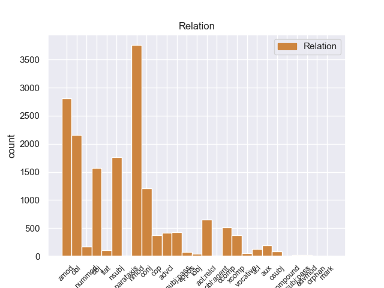
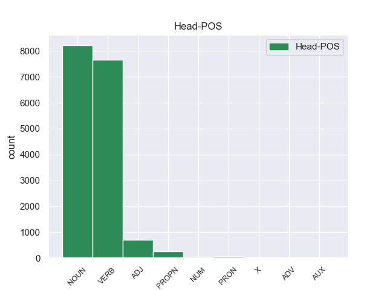
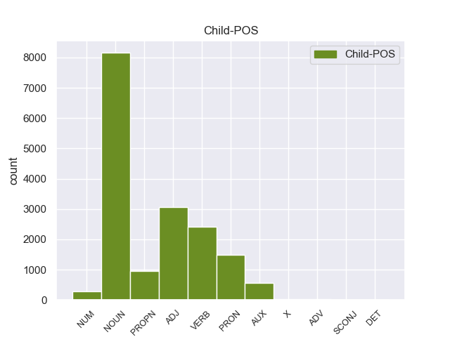

Distribution of features within this leaf



Agreement Rules sorted by frequency.
- When the dependent token is the adjectival modifier(amod) of the head token, and the dependent token is ADJ.
1 Ευελπιστώ _ _ _ _ 0 _ _ _
2 ότι _ _ _ _ 0 _ _ _
3 η _ _ _ _ 0 _ _ _
4 απόφαση _ _ _ _ 0 _ _ _
5 αυτή _ _ _ _ 0 _ _ _
6 , _ _ _ _ 0 _ _ _
7 συμπεριλαμβανομένης _ _ _ _ 0 _ _ _
8 και _ _ _ _ 0 _ _ _
9 της _ _ _ _ 0 _ _ _
10 αιτιολογικής _ _ _ _ 0 _ _ _
11 έκθεσης _ _ _ _ 0 _ _ _
12 που _ _ _ _ 0 _ _ _
13 την _ _ _ _ 0 _ _ _
14 συνοδεύει _ _ _ _ 0 _ _ _
15 , _ _ _ _ 0 _ _ _
16 θα _ _ _ _ 0 _ _ _
17 διαβιβαστεί _ _ _ _ 0 _ _ _
18 σ _ _ _ _ 0 _ _ _
19 τις _ _ _ _ 0 _ _ _
20 γαλλικές γαλλικός ADJ _ Case=Acc|Gender=Fem|Number=Plur 21 amod _ _
21 αρχές αρχή NOUN _ Case=Acc|Gender=Fem|Number=Plur 0 _ _ _
22 , _ _ _ _ 0 _ _ _
23 εφόσον _ _ _ _ 0 _ _ _
24 υπερψηφιστεί _ _ _ _ 0 _ _ _
25 από _ _ _ _ 0 _ _ _
26 το _ _ _ _ 0 _ _ _
27 Κοινοβούλιο _ _ _ _ 0 _ _ _
28 . _ _ _ _ 0 _ _ _
1 Ευελπιστώ _ _ _ _ 0 _ _ _
2 ότι _ _ _ _ 0 _ _ _
3 η _ _ _ _ 0 _ _ _
4 απόφαση απόφαση NOUN _ Case=Nom|Gender=Fem|Number=Sing 0 _ _ _
5 αυτή _ _ _ _ 0 _ _ _
6 , _ _ _ _ 0 _ _ _
7 συμπεριλαμβανομένης _ _ _ _ 0 _ _ _
8 και _ _ _ _ 0 _ _ _
9 της _ _ _ _ 0 _ _ _
10 αιτιολογικής _ _ _ _ 0 _ _ _
11 έκθεσης έκθεση NOUN _ Case=Gen|Gender=Fem|Number=Sing 4 nmod _ _
12 που _ _ _ _ 0 _ _ _
13 την _ _ _ _ 0 _ _ _
14 συνοδεύει _ _ _ _ 0 _ _ _
15 , _ _ _ _ 0 _ _ _
16 θα _ _ _ _ 0 _ _ _
17 διαβιβαστεί _ _ _ _ 0 _ _ _
18 σ _ _ _ _ 0 _ _ _
19 τις _ _ _ _ 0 _ _ _
20 γαλλικές _ _ _ _ 0 _ _ _
21 αρχές _ _ _ _ 0 _ _ _
22 , _ _ _ _ 0 _ _ _
23 εφόσον _ _ _ _ 0 _ _ _
24 υπερψηφιστεί _ _ _ _ 0 _ _ _
25 από _ _ _ _ 0 _ _ _
26 το _ _ _ _ 0 _ _ _
27 Κοινοβούλιο _ _ _ _ 0 _ _ _
28 . _ _ _ _ 0 _ _ _
1 Υπάρχει _ _ _ _ 0 _ _ _
2 μια _ _ _ _ 0 _ _ _
3 άλλη _ _ _ _ 0 _ _ _
4 πλευρά _ _ _ _ 0 _ _ _
5 της _ _ _ _ 0 _ _ _
6 υπόθεσης _ _ _ _ 0 _ _ _
7 , _ _ _ _ 0 _ _ _
8 η _ _ _ _ 0 _ _ _
9 οποία _ _ _ _ 0 _ _ _
10 , _ _ _ _ 0 _ _ _
11 δυστυχώς _ _ _ _ 0 _ _ _
12 , _ _ _ _ 0 _ _ _
13 γεννά _ _ _ _ 0 _ _ _
14 την _ _ _ _ 0 _ _ _
15 υποψία _ _ _ _ 0 _ _ _
16 ότι _ _ _ _ 0 _ _ _
17 η _ _ _ _ 0 _ _ _
18 πρόνοια πρόνοια NOUN _ Case=Nom|Gender=Fem|Number=Sing 29 nsubj _ _
19 σχετικά _ _ _ _ 0 _ _ _
20 με _ _ _ _ 0 _ _ _
21 τις _ _ _ _ 0 _ _ _
22 προϋποθέσεις _ _ _ _ 0 _ _ _
23 ελεύθερης _ _ _ _ 0 _ _ _
24 διεξαγωγής _ _ _ _ 0 _ _ _
25 του _ _ _ _ 0 _ _ _
26 κοινοβουλευτικού _ _ _ _ 0 _ _ _
27 έργου _ _ _ _ 0 _ _ _
28 δεν _ _ _ _ 0 _ _ _
29 απασχόλησε απασχόώ VERB _ Aspect=Perf|Mood=Ind|Number=Sing|Person=3|Tense=Past|VerbForm=Fin|Voice=Act 0 _ _ _
30 επαρκώς _ _ _ _ 0 _ _ _
31 την _ _ _ _ 0 _ _ _
32 εισαγγελική _ _ _ _ 0 _ _ _
33 αρχή _ _ _ _ 0 _ _ _
34 : _ _ _ _ 0 _ _ _
1 Ευελπιστώ _ _ _ _ 0 _ _ _
2 ότι _ _ _ _ 0 _ _ _
3 η _ _ _ _ 0 _ _ _
4 απόφαση _ _ _ _ 0 _ _ _
5 αυτή _ _ _ _ 0 _ _ _
6 , _ _ _ _ 0 _ _ _
7 συμπεριλαμβανομένης _ _ _ _ 0 _ _ _
8 και _ _ _ _ 0 _ _ _
9 της _ _ _ _ 0 _ _ _
10 αιτιολογικής _ _ _ _ 0 _ _ _
11 έκθεσης _ _ _ _ 0 _ _ _
12 που _ _ _ _ 0 _ _ _
13 την _ _ _ _ 0 _ _ _
14 συνοδεύει _ _ _ _ 0 _ _ _
15 , _ _ _ _ 0 _ _ _
16 θα _ _ _ _ 0 _ _ _
17 διαβιβαστεί _ _ _ _ 0 _ _ _
18 σ _ _ _ _ 0 _ _ _
19 τις _ _ _ _ 0 _ _ _
20 γαλλικές _ _ _ _ 0 _ _ _
21 αρχές _ _ _ _ 0 _ _ _
22 , _ _ _ _ 0 _ _ _
23 εφόσον _ _ _ _ 0 _ _ _
24 υπερψηφιστεί υπερψηφιώ VERB _ Aspect=Perf|Mood=Ind|Number=Sing|Person=3|VerbForm=Fin|Voice=Pass 0 _ _ _
25 από _ _ _ _ 0 _ _ _
26 το _ _ _ _ 0 _ _ _
27 Κοινοβούλιο κοινοβούλιο NOUN _ Case=Acc|Gender=Neut|Number=Sing 24 obl _ _
28 . _ _ _ _ 0 _ _ _
1 Υπάρχει _ _ _ _ 0 _ _ _
2 μια _ _ _ _ 0 _ _ _
3 άλλη _ _ _ _ 0 _ _ _
4 πλευρά _ _ _ _ 0 _ _ _
5 της _ _ _ _ 0 _ _ _
6 υπόθεσης _ _ _ _ 0 _ _ _
7 , _ _ _ _ 0 _ _ _
8 η _ _ _ _ 0 _ _ _
9 οποία _ _ _ _ 0 _ _ _
10 , _ _ _ _ 0 _ _ _
11 δυστυχώς _ _ _ _ 0 _ _ _
12 , _ _ _ _ 0 _ _ _
13 γεννά _ _ _ _ 0 _ _ _
14 την _ _ _ _ 0 _ _ _
15 υποψία _ _ _ _ 0 _ _ _
16 ότι _ _ _ _ 0 _ _ _
17 η _ _ _ _ 0 _ _ _
18 πρόνοια _ _ _ _ 0 _ _ _
19 σχετικά _ _ _ _ 0 _ _ _
20 με _ _ _ _ 0 _ _ _
21 τις _ _ _ _ 0 _ _ _
22 προϋποθέσεις _ _ _ _ 0 _ _ _
23 ελεύθερης _ _ _ _ 0 _ _ _
24 διεξαγωγής _ _ _ _ 0 _ _ _
25 του _ _ _ _ 0 _ _ _
26 κοινοβουλευτικού _ _ _ _ 0 _ _ _
27 έργου _ _ _ _ 0 _ _ _
28 δεν _ _ _ _ 0 _ _ _
29 απασχόλησε απασχόώ VERB _ Aspect=Perf|Mood=Ind|Number=Sing|Person=3|Tense=Past|VerbForm=Fin|Voice=Act 0 _ _ _
30 επαρκώς _ _ _ _ 0 _ _ _
31 την _ _ _ _ 0 _ _ _
32 εισαγγελική _ _ _ _ 0 _ _ _
33 αρχή αρχή NOUN _ Case=Acc|Gender=Fem|Number=Sing 29 obj _ _
34 : _ _ _ _ 0 _ _ _
1 Ευελπιστώ _ _ _ _ 0 _ _ _
2 ότι _ _ _ _ 0 _ _ _
3 η _ _ _ _ 0 _ _ _
4 απόφαση _ _ _ _ 0 _ _ _
5 αυτή _ _ _ _ 0 _ _ _
6 , _ _ _ _ 0 _ _ _
7 συμπεριλαμβανομένης _ _ _ _ 0 _ _ _
8 και _ _ _ _ 0 _ _ _
9 της _ _ _ _ 0 _ _ _
10 αιτιολογικής _ _ _ _ 0 _ _ _
11 έκθεσης έκθεση NOUN _ Case=Gen|Gender=Fem|Number=Sing 0 _ _ _
12 που _ _ _ _ 0 _ _ _
13 την _ _ _ _ 0 _ _ _
14 συνοδεύει συνοδεύω VERB _ Aspect=Imp|Mood=Ind|Number=Sing|Person=3|Tense=Pres|VerbForm=Fin|Voice=Act 11 acl:relcl _ _
15 , _ _ _ _ 0 _ _ _
16 θα _ _ _ _ 0 _ _ _
17 διαβιβαστεί _ _ _ _ 0 _ _ _
18 σ _ _ _ _ 0 _ _ _
19 τις _ _ _ _ 0 _ _ _
20 γαλλικές _ _ _ _ 0 _ _ _
21 αρχές _ _ _ _ 0 _ _ _
22 , _ _ _ _ 0 _ _ _
23 εφόσον _ _ _ _ 0 _ _ _
24 υπερψηφιστεί _ _ _ _ 0 _ _ _
25 από _ _ _ _ 0 _ _ _
26 το _ _ _ _ 0 _ _ _
27 Κοινοβούλιο _ _ _ _ 0 _ _ _
28 . _ _ _ _ 0 _ _ _
1 από _ _ _ _ 0 _ _ _
2 τα _ _ _ _ 0 _ _ _
3 δε _ _ _ _ 0 _ _ _
4 έγγραφα _ _ _ _ 0 _ _ _
5 της _ _ _ _ 0 _ _ _
6 υπόθεσης _ _ _ _ 0 _ _ _
7 προκύπτει _ _ _ _ 0 _ _ _
8 ότι _ _ _ _ 0 _ _ _
9 δεν _ _ _ _ 0 _ _ _
10 φαίνεται _ _ _ _ 0 _ _ _
11 να _ _ _ _ 0 _ _ _
12 έχει _ _ _ _ 0 _ _ _
13 ληφθεί _ _ _ _ 0 _ _ _
14 υπόψη _ _ _ _ 0 _ _ _
15 η _ _ _ _ 0 _ _ _
16 σύσταση _ _ _ _ 0 _ _ _
17 να _ _ _ _ 0 _ _ _
18 διαβιβαστεί _ _ _ _ 0 _ _ _
19 η _ _ _ _ 0 _ _ _
20 αίτηση _ _ _ _ 0 _ _ _
21 άρσης _ _ _ _ 0 _ _ _
22 της _ _ _ _ 0 _ _ _
23 ασυλίας _ _ _ _ 0 _ _ _
24 μόνον _ _ _ _ 0 _ _ _
25 επί _ _ _ _ 0 _ _ _
26 τη _ _ _ _ 0 _ _ _
27 βάσει _ _ _ _ 0 _ _ _
28 ακριβέστερου _ _ _ _ 0 _ _ _
29 προσδιορισμού _ _ _ _ 0 _ _ _
30 όσον _ _ _ _ 0 _ _ _
31 αφορά _ _ _ _ 0 _ _ _
32 τους _ _ _ _ 0 _ _ _
33 τόπους τόποα NOUN _ Case=Acc|Gender=Masc|Number=Plur 0 _ _ _
34 και _ _ _ _ 0 _ _ _
35 τα _ _ _ _ 0 _ _ _
36 πρόσωπα πρόσωπο NOUN _ Case=Nom|Gender=Neut|Number=Plur 33 conj _ _
37 που _ _ _ _ 0 _ _ _
38 εμπλέκονται _ _ _ _ 0 _ _ _
39 σ _ _ _ _ 0 _ _ _
40 την _ _ _ _ 0 _ _ _
41 υπόθεση _ _ _ _ 0 _ _ _
42 . _ _ _ _ 0 _ _ _
1 Ευελπιστώ _ _ _ _ 0 _ _ _
2 ότι _ _ _ _ 0 _ _ _
3 η _ _ _ _ 0 _ _ _
4 απόφαση _ _ _ _ 0 _ _ _
5 αυτή _ _ _ _ 0 _ _ _
6 , _ _ _ _ 0 _ _ _
7 συμπεριλαμβανομένης _ _ _ _ 0 _ _ _
8 και _ _ _ _ 0 _ _ _
9 της _ _ _ _ 0 _ _ _
10 αιτιολογικής _ _ _ _ 0 _ _ _
11 έκθεσης _ _ _ _ 0 _ _ _
12 που που PRON _ Case=Acc|Gender=Fem|Number=Sing|Person=3|PronType=Rel 14 nsubj _ _
13 την _ _ _ _ 0 _ _ _
14 συνοδεύει συνοδεύω VERB _ Aspect=Imp|Mood=Ind|Number=Sing|Person=3|Tense=Pres|VerbForm=Fin|Voice=Act 0 _ _ _
15 , _ _ _ _ 0 _ _ _
16 θα _ _ _ _ 0 _ _ _
17 διαβιβαστεί _ _ _ _ 0 _ _ _
18 σ _ _ _ _ 0 _ _ _
19 τις _ _ _ _ 0 _ _ _
20 γαλλικές _ _ _ _ 0 _ _ _
21 αρχές _ _ _ _ 0 _ _ _
22 , _ _ _ _ 0 _ _ _
23 εφόσον _ _ _ _ 0 _ _ _
24 υπερψηφιστεί _ _ _ _ 0 _ _ _
25 από _ _ _ _ 0 _ _ _
26 το _ _ _ _ 0 _ _ _
27 Κοινοβούλιο _ _ _ _ 0 _ _ _
28 . _ _ _ _ 0 _ _ _
1 Θα _ _ _ _ 0 _ _ _
2 ήθελα _ _ _ _ 0 _ _ _
3 να _ _ _ _ 0 _ _ _
4 επιστήσω _ _ _ _ 0 _ _ _
5 την _ _ _ _ 0 _ _ _
6 προσοχή _ _ _ _ 0 _ _ _
7 όλων _ _ _ _ 0 _ _ _
8 των _ _ _ _ 0 _ _ _
9 συναδέλφων _ _ _ _ 0 _ _ _
10 σ _ _ _ _ 0 _ _ _
11 το _ _ _ _ 0 _ _ _
12 γεγονός _ _ _ _ 0 _ _ _
13 ότι _ _ _ _ 0 _ _ _
14 , _ _ _ _ 0 _ _ _
15 εάν _ _ _ _ 0 _ _ _
16 υπάρχουν _ _ _ _ 0 _ _ _
17 κάποιες _ _ _ _ 0 _ _ _
18 ελευθερίες _ _ _ _ 0 _ _ _
19 οι _ _ _ _ 0 _ _ _
20 οποίες _ _ _ _ 0 _ _ _
21 είναι _ _ _ _ 0 _ _ _
22 ζωτικής _ _ _ _ 0 _ _ _
23 σημασίας _ _ _ _ 0 _ _ _
24 για _ _ _ _ 0 _ _ _
25 την _ _ _ _ 0 _ _ _
26 άσκηση _ _ _ _ 0 _ _ _
27 του _ _ _ _ 0 _ _ _
28 λειτουργήματος _ _ _ _ 0 _ _ _
29 της _ _ _ _ 0 _ _ _
30 δημόσιας _ _ _ _ 0 _ _ _
31 εκπροσώπησης _ _ _ _ 0 _ _ _
32 , _ _ _ _ 0 _ _ _
33 ιδίως _ _ _ _ 0 _ _ _
34 για _ _ _ _ 0 _ _ _
35 ένα _ _ _ _ 0 _ _ _
36 Κοινοβούλιο _ _ _ _ 0 _ _ _
37 σαν _ _ _ _ 0 _ _ _
38 το _ _ _ _ 0 _ _ _
39 δικό _ _ _ _ 0 _ _ _
40 μας _ _ _ _ 0 _ _ _
41 , _ _ _ _ 0 _ _ _
42 η _ _ _ _ 0 _ _ _
43 ελευθερία _ _ _ _ 0 _ _ _
44 της _ _ _ _ 0 _ _ _
45 επικοινωνίας _ _ _ _ 0 _ _ _
46 με _ _ _ _ 0 _ _ _
47 άλλους _ _ _ _ 0 _ _ _
48 πολίτες _ _ _ _ 0 _ _ _
49 και _ _ _ _ 0 _ _ _
50 με _ _ _ _ 0 _ _ _
51 τους _ _ _ _ 0 _ _ _
52 πολίτες _ _ _ _ 0 _ _ _
53 τρίτων _ _ _ _ 0 _ _ _
54 χωρών _ _ _ _ 0 _ _ _
55 , _ _ _ _ 0 _ _ _
56 καθώς _ _ _ _ 0 _ _ _
57 και _ _ _ _ 0 _ _ _
58 η _ _ _ _ 0 _ _ _
59 ελευθερία _ _ _ _ 0 _ _ _
60 μετακίνησης _ _ _ _ 0 _ _ _
61 , _ _ _ _ 0 _ _ _
62 είναι είμαι AUX _ Aspect=Imp|Mood=Ind|Number=Plur|Person=3|Tense=Pres|VerbForm=Fin|Voice=Pass 63 cop _ _
63 κρίσιμες κρίσιμος ADJ _ Case=Nom|Gender=Fem|Number=Plur 0 _ _ _
64 για _ _ _ _ 0 _ _ _
65 τη _ _ _ _ 0 _ _ _
66 διεκπεραίωση _ _ _ _ 0 _ _ _
67 του _ _ _ _ 0 _ _ _
68 έργου _ _ _ _ 0 _ _ _
69 μας _ _ _ _ 0 _ _ _
70 . _ _ _ _ 0 _ _ _
1 Υπάρχει υπάρχω VERB _ Aspect=Imp|Mood=Ind|Number=Sing|Person=3|Tense=Pres|VerbForm=Fin|Voice=Act 0 _ _ _
2 μια _ _ _ _ 0 _ _ _
3 άλλη _ _ _ _ 0 _ _ _
4 πλευρά _ _ _ _ 0 _ _ _
5 της _ _ _ _ 0 _ _ _
6 υπόθεσης _ _ _ _ 0 _ _ _
7 , _ _ _ _ 0 _ _ _
8 η _ _ _ _ 0 _ _ _
9 οποία _ _ _ _ 0 _ _ _
10 , _ _ _ _ 0 _ _ _
11 δυστυχώς _ _ _ _ 0 _ _ _
12 , _ _ _ _ 0 _ _ _
13 γεννά γενω VERB _ Aspect=Imp|Mood=Ind|Number=Sing|Person=3|Tense=Pres|VerbForm=Fin|Voice=Act 1 conj _ _
14 την _ _ _ _ 0 _ _ _
15 υποψία _ _ _ _ 0 _ _ _
16 ότι _ _ _ _ 0 _ _ _
17 η _ _ _ _ 0 _ _ _
18 πρόνοια _ _ _ _ 0 _ _ _
19 σχετικά _ _ _ _ 0 _ _ _
20 με _ _ _ _ 0 _ _ _
21 τις _ _ _ _ 0 _ _ _
22 προϋποθέσεις _ _ _ _ 0 _ _ _
23 ελεύθερης _ _ _ _ 0 _ _ _
24 διεξαγωγής _ _ _ _ 0 _ _ _
25 του _ _ _ _ 0 _ _ _
26 κοινοβουλευτικού _ _ _ _ 0 _ _ _
27 έργου _ _ _ _ 0 _ _ _
28 δεν _ _ _ _ 0 _ _ _
29 απασχόλησε _ _ _ _ 0 _ _ _
30 επαρκώς _ _ _ _ 0 _ _ _
31 την _ _ _ _ 0 _ _ _
32 εισαγγελική _ _ _ _ 0 _ _ _
33 αρχή _ _ _ _ 0 _ _ _
34 : _ _ _ _ 0 _ _ _
1 Ευελπιστώ _ _ _ _ 0 _ _ _
2 ότι _ _ _ _ 0 _ _ _
3 η _ _ _ _ 0 _ _ _
4 απόφαση απόφαση NOUN _ Case=Nom|Gender=Fem|Number=Sing 17 nsubj:pass _ _
5 αυτή _ _ _ _ 0 _ _ _
6 , _ _ _ _ 0 _ _ _
7 συμπεριλαμβανομένης _ _ _ _ 0 _ _ _
8 και _ _ _ _ 0 _ _ _
9 της _ _ _ _ 0 _ _ _
10 αιτιολογικής _ _ _ _ 0 _ _ _
11 έκθεσης _ _ _ _ 0 _ _ _
12 που _ _ _ _ 0 _ _ _
13 την _ _ _ _ 0 _ _ _
14 συνοδεύει _ _ _ _ 0 _ _ _
15 , _ _ _ _ 0 _ _ _
16 θα _ _ _ _ 0 _ _ _
17 διαβιβαστεί διαβιβαώ VERB _ Aspect=Perf|Mood=Ind|Number=Sing|Person=3|VerbForm=Fin|Voice=Pass 0 _ _ _
18 σ _ _ _ _ 0 _ _ _
19 τις _ _ _ _ 0 _ _ _
20 γαλλικές _ _ _ _ 0 _ _ _
21 αρχές _ _ _ _ 0 _ _ _
22 , _ _ _ _ 0 _ _ _
23 εφόσον _ _ _ _ 0 _ _ _
24 υπερψηφιστεί _ _ _ _ 0 _ _ _
25 από _ _ _ _ 0 _ _ _
26 το _ _ _ _ 0 _ _ _
27 Κοινοβούλιο _ _ _ _ 0 _ _ _
28 . _ _ _ _ 0 _ _ _
1 Ο _ _ _ _ 0 _ _ _
2 Εισαγγελέας εισαγγελέας NOUN _ Case=Nom|Gender=Masc|Number=Sing 0 _ _ _
3 σ _ _ _ _ 0 _ _ _
4 τη _ _ _ _ 0 _ _ _
5 Γαλλία Γαλλία PROPN _ Case=Acc|Gender=Fem|Number=Sing 2 nmod _ _
6 έχει _ _ _ _ 0 _ _ _
7 το _ _ _ _ 0 _ _ _
8 δικαίωμα _ _ _ _ 0 _ _ _
9 να _ _ _ _ 0 _ _ _
10 εκπληρώνει _ _ _ _ 0 _ _ _
11 τα _ _ _ _ 0 _ _ _
12 καθήκοντά _ _ _ _ 0 _ _ _
13 του _ _ _ _ 0 _ _ _
14 βάσει _ _ _ _ 0 _ _ _
15 του _ _ _ _ 0 _ _ _
16 νόμου _ _ _ _ 0 _ _ _
17 και _ _ _ _ 0 _ _ _
18 το _ _ _ _ 0 _ _ _
19 Σώμα _ _ _ _ 0 _ _ _
20 δεν _ _ _ _ 0 _ _ _
21 λαμβάνει _ _ _ _ 0 _ _ _
22 θέση _ _ _ _ 0 _ _ _
23 σχετικά _ _ _ _ 0 _ _ _
24 με _ _ _ _ 0 _ _ _
25 αυτό _ _ _ _ 0 _ _ _
26 . _ _ _ _ 0 _ _ _
1 Ευελπιστώ ευελπιστώ VERB _ Aspect=Imp|Mood=Ind|Number=Sing|Person=1|Tense=Pres|VerbForm=Fin|Voice=Act 0 _ _ _
2 ότι _ _ _ _ 0 _ _ _
3 η _ _ _ _ 0 _ _ _
4 απόφαση _ _ _ _ 0 _ _ _
5 αυτή _ _ _ _ 0 _ _ _
6 , _ _ _ _ 0 _ _ _
7 συμπεριλαμβανομένης _ _ _ _ 0 _ _ _
8 και _ _ _ _ 0 _ _ _
9 της _ _ _ _ 0 _ _ _
10 αιτιολογικής _ _ _ _ 0 _ _ _
11 έκθεσης _ _ _ _ 0 _ _ _
12 που _ _ _ _ 0 _ _ _
13 την _ _ _ _ 0 _ _ _
14 συνοδεύει _ _ _ _ 0 _ _ _
15 , _ _ _ _ 0 _ _ _
16 θα _ _ _ _ 0 _ _ _
17 διαβιβαστεί διαβιβαώ VERB _ Aspect=Perf|Mood=Ind|Number=Sing|Person=3|VerbForm=Fin|Voice=Pass 1 ccomp _ _
18 σ _ _ _ _ 0 _ _ _
19 τις _ _ _ _ 0 _ _ _
20 γαλλικές _ _ _ _ 0 _ _ _
21 αρχές _ _ _ _ 0 _ _ _
22 , _ _ _ _ 0 _ _ _
23 εφόσον _ _ _ _ 0 _ _ _
24 υπερψηφιστεί _ _ _ _ 0 _ _ _
25 από _ _ _ _ 0 _ _ _
26 το _ _ _ _ 0 _ _ _
27 Κοινοβούλιο _ _ _ _ 0 _ _ _
28 . _ _ _ _ 0 _ _ _
1 Ευελπιστώ _ _ _ _ 0 _ _ _
2 ότι _ _ _ _ 0 _ _ _
3 η _ _ _ _ 0 _ _ _
4 απόφαση _ _ _ _ 0 _ _ _
5 αυτή _ _ _ _ 0 _ _ _
6 , _ _ _ _ 0 _ _ _
7 συμπεριλαμβανομένης _ _ _ _ 0 _ _ _
8 και _ _ _ _ 0 _ _ _
9 της _ _ _ _ 0 _ _ _
10 αιτιολογικής _ _ _ _ 0 _ _ _
11 έκθεσης _ _ _ _ 0 _ _ _
12 που _ _ _ _ 0 _ _ _
13 την _ _ _ _ 0 _ _ _
14 συνοδεύει _ _ _ _ 0 _ _ _
15 , _ _ _ _ 0 _ _ _
16 θα _ _ _ _ 0 _ _ _
17 διαβιβαστεί διαβιβαώ VERB _ Aspect=Perf|Mood=Ind|Number=Sing|Person=3|VerbForm=Fin|Voice=Pass 0 _ _ _
18 σ _ _ _ _ 0 _ _ _
19 τις _ _ _ _ 0 _ _ _
20 γαλλικές _ _ _ _ 0 _ _ _
21 αρχές _ _ _ _ 0 _ _ _
22 , _ _ _ _ 0 _ _ _
23 εφόσον _ _ _ _ 0 _ _ _
24 υπερψηφιστεί υπερψηφιώ VERB _ Aspect=Perf|Mood=Ind|Number=Sing|Person=3|VerbForm=Fin|Voice=Pass 17 advcl _ _
25 από _ _ _ _ 0 _ _ _
26 το _ _ _ _ 0 _ _ _
27 Κοινοβούλιο _ _ _ _ 0 _ _ _
28 . _ _ _ _ 0 _ _ _
1 Τόσο _ _ _ _ 0 _ _ _
2 το _ _ _ _ 0 _ _ _
3 ζήτημα _ _ _ _ 0 _ _ _
4 της _ _ _ _ 0 _ _ _
5 ασυλίας _ _ _ _ 0 _ _ _
6 όσο _ _ _ _ 0 _ _ _
7 και _ _ _ _ 0 _ _ _
8 η _ _ _ _ 0 _ _ _
9 αίτηση _ _ _ _ 0 _ _ _
10 για _ _ _ _ 0 _ _ _
11 άρση _ _ _ _ 0 _ _ _
12 της _ _ _ _ 0 _ _ _
13 έχουν _ _ _ _ 0 _ _ _
14 σχέση _ _ _ _ 0 _ _ _
15 μόνο _ _ _ _ 0 _ _ _
16 με _ _ _ _ 0 _ _ _
17 το _ _ _ _ 0 _ _ _
18 εάν _ _ _ _ 0 _ _ _
19 το _ _ _ _ 0 _ _ _
20 Δικαστήριο _ _ _ _ 0 _ _ _
21 μπορεί μπορώ VERB _ Aspect=Imp|Mood=Ind|Number=Sing|Person=3|Tense=Pres|VerbForm=Fin|Voice=Act 0 _ _ _
22 να _ _ _ _ 0 _ _ _
23 εκδώσει εκδώ VERB _ Aspect=Perf|Mood=Ind|Number=Sing|Person=3|VerbForm=Fin|Voice=Act 21 xcomp _ _
24 δεσμευτικά _ _ _ _ 0 _ _ _
25 βουλεύματα _ _ _ _ 0 _ _ _
26 για _ _ _ _ 0 _ _ _
27 τον _ _ _ _ 0 _ _ _
28 περιορισμό _ _ _ _ 0 _ _ _
29 της _ _ _ _ 0 _ _ _
30 ελεύθερης _ _ _ _ 0 _ _ _
31 μετακίνησης _ _ _ _ 0 _ _ _
32 των _ _ _ _ 0 _ _ _
33 βουλευτών _ _ _ _ 0 _ _ _
34 του _ _ _ _ 0 _ _ _
35 Ευρωπαϊκού _ _ _ _ 0 _ _ _
36 Κοινοβουλίου _ _ _ _ 0 _ _ _
37 ή _ _ _ _ 0 _ _ _
38 την _ _ _ _ 0 _ _ _
39 ελευθερία _ _ _ _ 0 _ _ _
40 τους _ _ _ _ 0 _ _ _
41 να _ _ _ _ 0 _ _ _
42 έρχονται _ _ _ _ 0 _ _ _
43 σε _ _ _ _ 0 _ _ _
44 επικοινωνία _ _ _ _ 0 _ _ _
45 με _ _ _ _ 0 _ _ _
46 άλλα _ _ _ _ 0 _ _ _
47 πρόσωπα _ _ _ _ 0 _ _ _
48 . _ _ _ _ 0 _ _ _
1 Σ _ _ _ _ 0 _ _ _
2 την _ _ _ _ 0 _ _ _
3 παρούσα _ _ _ _ 0 _ _ _
4 μορφή μορφή NOUN _ Case=Acc|Gender=Fem|Number=Sing 0 _ _ _
5 της μου PRON _ Case=Gen|Gender=Fem|Number=Sing|Person=3|Poss=Yes|PronType=Prs 4 nmod _ _
6 , _ _ _ _ 0 _ _ _
7 η _ _ _ _ 0 _ _ _
8 αίτηση _ _ _ _ 0 _ _ _
9 άρσης _ _ _ _ 0 _ _ _
10 της _ _ _ _ 0 _ _ _
11 ασυλίας _ _ _ _ 0 _ _ _
12 παρουσιάζεται _ _ _ _ 0 _ _ _
13 απαράδεκτα _ _ _ _ 0 _ _ _
14 ασαφής _ _ _ _ 0 _ _ _
15 . _ _ _ _ 0 _ _ _
1 Είναι _ _ _ _ 0 _ _ _
2 σημαντικό _ _ _ _ 0 _ _ _
3 να _ _ _ _ 0 _ _ _
4 υπογραμμίσω _ _ _ _ 0 _ _ _
5 το _ _ _ _ 0 _ _ _
6 γεγονός _ _ _ _ 0 _ _ _
7 ότι _ _ _ _ 0 _ _ _
8 και _ _ _ _ 0 _ _ _
9 οι _ _ _ _ 0 _ _ _
10 δύο δύο NUM _ Case=Nom|Gender=Masc|Number=Plur|NumType=Card 11 nummod _ _
11 βουλευτές βουλευτής NOUN _ Case=Nom|Gender=Masc|Number=Plur 0 _ _ _
12 διατρανώνουν _ _ _ _ 0 _ _ _
13 σθεναρά _ _ _ _ 0 _ _ _
14 την _ _ _ _ 0 _ _ _
15 αθωότητά _ _ _ _ 0 _ _ _
16 τους _ _ _ _ 0 _ _ _
17 και _ _ _ _ 0 _ _ _
18 καταγγέλλουν _ _ _ _ 0 _ _ _
19 αυτό _ _ _ _ 0 _ _ _
20 που _ _ _ _ 0 _ _ _
21 οι _ _ _ _ 0 _ _ _
22 ίδιοι _ _ _ _ 0 _ _ _
23 θεωρούν _ _ _ _ 0 _ _ _
24 καταχρήσεις _ _ _ _ 0 _ _ _
25 σ _ _ _ _ 0 _ _ _
26 τη _ _ _ _ 0 _ _ _
27 διαδικασία _ _ _ _ 0 _ _ _
28 δίωξης _ _ _ _ 0 _ _ _
29 . _ _ _ _ 0 _ _ _
1 Η _ _ _ _ 0 _ _ _
2 Λιβύη Λιβύη PROPN _ Case=Nom|Gender=Fem|Number=Sing 3 nsubj _ _
3 δήλωσε δηλώνω VERB _ Aspect=Perf|Mood=Ind|Number=Sing|Person=3|Tense=Past|VerbForm=Fin|Voice=Act 0 _ _ _
4 ότι _ _ _ _ 0 _ _ _
5 θα _ _ _ _ 0 _ _ _
6 επιδιώξει _ _ _ _ 0 _ _ _
7 την _ _ _ _ 0 _ _ _
8 έκδοση _ _ _ _ 0 _ _ _
9 του _ _ _ _ 0 _ _ _
10 Αμπντάλα _ _ _ _ 0 _ _ _
11 αλ _ _ _ _ 0 _ _ _
12 Σενούσι _ _ _ _ 0 _ _ _
13 , _ _ _ _ 0 _ _ _
14 πρώην _ _ _ _ 0 _ _ _
15 αρχηγού _ _ _ _ 0 _ _ _
16 των _ _ _ _ 0 _ _ _
17 μυστικών _ _ _ _ 0 _ _ _
18 υπηρεσιών _ _ _ _ 0 _ _ _
19 της _ _ _ _ 0 _ _ _
20 Λιβύης _ _ _ _ 0 _ _ _
21 κατά _ _ _ _ 0 _ _ _
22 την _ _ _ _ 0 _ _ _
23 περίοδο _ _ _ _ 0 _ _ _
24 του _ _ _ _ 0 _ _ _
25 Μουαμάρ _ _ _ _ 0 _ _ _
26 αλ _ _ _ _ 0 _ _ _
27 Καντάφι _ _ _ _ 0 _ _ _
28 . _ _ _ _ 0 _ _ _
1 Ευελπιστώ _ _ _ _ 0 _ _ _
2 ότι _ _ _ _ 0 _ _ _
3 η _ _ _ _ 0 _ _ _
4 απόφαση _ _ _ _ 0 _ _ _
5 αυτή _ _ _ _ 0 _ _ _
6 , _ _ _ _ 0 _ _ _
7 συμπεριλαμβανομένης _ _ _ _ 0 _ _ _
8 και _ _ _ _ 0 _ _ _
9 της _ _ _ _ 0 _ _ _
10 αιτιολογικής _ _ _ _ 0 _ _ _
11 έκθεσης _ _ _ _ 0 _ _ _
12 που _ _ _ _ 0 _ _ _
13 την εγώ PRON _ Case=Acc|Gender=Fem|Number=Sing|Person=3|PronType=Prs 14 obj _ _
14 συνοδεύει συνοδεύω VERB _ Aspect=Imp|Mood=Ind|Number=Sing|Person=3|Tense=Pres|VerbForm=Fin|Voice=Act 0 _ _ _
15 , _ _ _ _ 0 _ _ _
16 θα _ _ _ _ 0 _ _ _
17 διαβιβαστεί _ _ _ _ 0 _ _ _
18 σ _ _ _ _ 0 _ _ _
19 τις _ _ _ _ 0 _ _ _
20 γαλλικές _ _ _ _ 0 _ _ _
21 αρχές _ _ _ _ 0 _ _ _
22 , _ _ _ _ 0 _ _ _
23 εφόσον _ _ _ _ 0 _ _ _
24 υπερψηφιστεί _ _ _ _ 0 _ _ _
25 από _ _ _ _ 0 _ _ _
26 το _ _ _ _ 0 _ _ _
27 Κοινοβούλιο _ _ _ _ 0 _ _ _
28 . _ _ _ _ 0 _ _ _
1 Ωστόσο _ _ _ _ 0 _ _ _
2 , _ _ _ _ 0 _ _ _
3 ως _ _ _ _ 0 _ _ _
4 προς _ _ _ _ 0 _ _ _
5 την _ _ _ _ 0 _ _ _
6 ουσία _ _ _ _ 0 _ _ _
7 των _ _ _ _ 0 _ _ _
8 κατηγοριών _ _ _ _ 0 _ _ _
9 , _ _ _ _ 0 _ _ _
10 δεν _ _ _ _ 0 _ _ _
11 μπορώ _ _ _ _ 0 _ _ _
12 να _ _ _ _ 0 _ _ _
13 λάβω _ _ _ _ 0 _ _ _
14 θέση _ _ _ _ 0 _ _ _
15 , _ _ _ _ 0 _ _ _
16 ούτε _ _ _ _ 0 _ _ _
17 το _ _ _ _ 0 _ _ _
18 Σώμα _ _ _ _ 0 _ _ _
19 πρέπει πρέπει AUX _ Aspect=Imp|Mood=Ind|Number=Sing|Person=3|Tense=Pres|VerbForm=Fin|Voice=Act 21 aux _ _
20 να _ _ _ _ 0 _ _ _
21 λάβει λαμβάνω VERB _ Aspect=Perf|Mood=Ind|Number=Sing|Person=3|VerbForm=Fin|Voice=Act 0 _ _ _
22 θέση _ _ _ _ 0 _ _ _
23 σχετικά _ _ _ _ 0 _ _ _
24 . _ _ _ _ 0 _ _ _
1 Από _ _ _ _ 0 _ _ _
2 τη _ _ _ _ 0 _ _ _
3 πλευρά _ _ _ _ 0 _ _ _
4 του _ _ _ _ 0 _ _ _
5 ο _ _ _ _ 0 _ _ _
6 Πρωθυπουργός _ _ _ _ 0 _ _ _
7 του _ _ _ _ 0 _ _ _
8 Ισραήλ _ _ _ _ 0 _ _ _
9 , _ _ _ _ 0 _ _ _
10 Βενιαμίν Βενιαμίν PROPN _ Case=Nom|Gender=Masc|Number=Sing 0 _ _ _
11 Νετανιάχου Νετανιάχου PROPN _ Case=Nom|Gender=Masc|Number=Sing 10 flat _ _
12 , _ _ _ _ 0 _ _ _
13 εξέφρασε _ _ _ _ 0 _ _ _
14 ικανοποίηση _ _ _ _ 0 _ _ _
15 για _ _ _ _ 0 _ _ _
16 το _ _ _ _ 0 _ _ _
17 σχόλιο _ _ _ _ 0 _ _ _
18 του _ _ _ _ 0 _ _ _
19 Μπαράκ _ _ _ _ 0 _ _ _
20 Ομπάμα _ _ _ _ 0 _ _ _
21 ότι _ _ _ _ 0 _ _ _
22 « _ _ _ _ 0 _ _ _
23 θα _ _ _ _ 0 _ _ _
24 εξεταστούν _ _ _ _ 0 _ _ _
25 όλες _ _ _ _ 0 _ _ _
26 οι _ _ _ _ 0 _ _ _
27 εναλλακτικές _ _ _ _ 0 _ _ _
28 λύσεις _ _ _ _ 0 _ _ _
29 αναφορικά _ _ _ _ 0 _ _ _
30 με _ _ _ _ 0 _ _ _
31 το _ _ _ _ 0 _ _ _
32 πυρηνικό _ _ _ _ 0 _ _ _
33 πρόγραμμα _ _ _ _ 0 _ _ _
34 του _ _ _ _ 0 _ _ _
35 Ιράν _ _ _ _ 0 _ _ _
36 » _ _ _ _ 0 _ _ _
37 . _ _ _ _ 0 _ _ _
1 Ο _ _ _ _ 0 _ _ _
2 Αμερικανός _ _ _ _ 0 _ _ _
3 Πρόεδρος _ _ _ _ 0 _ _ _
4 τόνισε _ _ _ _ 0 _ _ _
5 « _ _ _ _ 0 _ _ _
6 ότι _ _ _ _ 0 _ _ _
7 τώρα _ _ _ _ 0 _ _ _
8 δεν _ _ _ _ 0 _ _ _
9 είναι _ _ _ _ 0 _ _ _
10 η _ _ _ _ 0 _ _ _
11 ώρα ώρα NOUN _ Case=Nom|Gender=Fem|Number=Sing 0 _ _ _
12 για _ _ _ _ 0 _ _ _
13 θεαματικές _ _ _ _ 0 _ _ _
14 κινήσεις _ _ _ _ 0 _ _ _
15 , _ _ _ _ 0 _ _ _
16 αλλά _ _ _ _ 0 _ _ _
17 είναι _ _ _ _ 0 _ _ _
18 καιρός καιρός ADJ _ Case=Nom|Gender=Masc|Number=Sing 11 conj _ _
19 για _ _ _ _ 0 _ _ _
20 αύξηση _ _ _ _ 0 _ _ _
21 πίεσης _ _ _ _ 0 _ _ _
22 και _ _ _ _ 0 _ _ _
23 διατήρηση _ _ _ _ 0 _ _ _
24 μιας _ _ _ _ 0 _ _ _
25 ευρείας _ _ _ _ 0 _ _ _
26 διεθνούς _ _ _ _ 0 _ _ _
27 συμμαχίας _ _ _ _ 0 _ _ _
28 κατά _ _ _ _ 0 _ _ _
29 της _ _ _ _ 0 _ _ _
30 απόκτησης _ _ _ _ 0 _ _ _
31 πυρηνικού _ _ _ _ 0 _ _ _
32 οπλοστασίου _ _ _ _ 0 _ _ _
33 από _ _ _ _ 0 _ _ _
34 το _ _ _ _ 0 _ _ _
35 Ιράν _ _ _ _ 0 _ _ _
36 » _ _ _ _ 0 _ _ _
37 . _ _ _ _ 0 _ _ _
1 Οι _ _ _ _ 0 _ _ _
2 αρχές _ _ _ _ 0 _ _ _
3 των _ _ _ _ 0 _ _ _
4 πόλεων _ _ _ _ 0 _ _ _
5 εξέφρασαν _ _ _ _ 0 _ _ _
6 αυτή _ _ _ _ 0 _ _ _
7 την _ _ _ _ 0 _ _ _
8 επιθυμία _ _ _ _ 0 _ _ _
9 σε _ _ _ _ 0 _ _ _
10 συνέδριο _ _ _ _ 0 _ _ _
11 που _ _ _ _ 0 _ _ _
12 διεξήχθη διεάγω VERB _ Aspect=Perf|Mood=Ind|Number=Sing|Person=3|Tense=Past|VerbForm=Fin|Voice=Pass 0 _ _ _
13 σ _ _ _ _ 0 _ _ _
14 τη _ _ _ _ 0 _ _ _
15 Βεγγάζη Βεγγάζη PROPN _ Case=Acc|Gender=Fem|Number=Sing 12 obl _ _
16 . _ _ _ _ 0 _ _ _
1 Οι _ _ _ _ 0 _ _ _
2 αρχές _ _ _ _ 0 _ _ _
3 των _ _ _ _ 0 _ _ _
4 πόλεων _ _ _ _ 0 _ _ _
5 εξέφρασαν _ _ _ _ 0 _ _ _
6 αυτή _ _ _ _ 0 _ _ _
7 την _ _ _ _ 0 _ _ _
8 επιθυμία _ _ _ _ 0 _ _ _
9 σε _ _ _ _ 0 _ _ _
10 συνέδριο _ _ _ _ 0 _ _ _
11 που που PRON _ Case=Nom|Gender=Neut|Number=Sing|Person=3|PronType=Rel 12 nsubj:pass _ _
12 διεξήχθη διεάγω VERB _ Aspect=Perf|Mood=Ind|Number=Sing|Person=3|Tense=Past|VerbForm=Fin|Voice=Pass 0 _ _ _
13 σ _ _ _ _ 0 _ _ _
14 τη _ _ _ _ 0 _ _ _
15 Βεγγάζη _ _ _ _ 0 _ _ _
16 . _ _ _ _ 0 _ _ _
1 Τα _ _ _ _ 0 _ _ _
2 εγκλήματα _ _ _ _ 0 _ _ _
3 είναι _ _ _ _ 0 _ _ _
4 σοβαρά _ _ _ _ 0 _ _ _
5 και _ _ _ _ 0 _ _ _
6 ανήκουν _ _ _ _ 0 _ _ _
7 σε _ _ _ _ 0 _ _ _
8 μια _ _ _ _ 0 _ _ _
9 κατηγορία _ _ _ _ 0 _ _ _
10 για _ _ _ _ 0 _ _ _
11 την _ _ _ _ 0 _ _ _
12 οποία οποίος PRON _ Case=Acc|Gender=Fem|Number=Sing|Person=3|PronType=Rel 15 obl _ _
13 κανονικά _ _ _ _ 0 _ _ _
14 δεν _ _ _ _ 0 _ _ _
15 προσφέρεται προσφέρω VERB _ Aspect=Imp|Mood=Ind|Number=Sing|Person=3|Tense=Pres|VerbForm=Fin|Voice=Pass 0 _ _ _
16 βουλευτική _ _ _ _ 0 _ _ _
17 ασυλία _ _ _ _ 0 _ _ _
18 , _ _ _ _ 0 _ _ _
19 επειδή _ _ _ _ 0 _ _ _
20 δεν _ _ _ _ 0 _ _ _
21 αφορούν _ _ _ _ 0 _ _ _
22 τις _ _ _ _ 0 _ _ _
23 συνήθεις _ _ _ _ 0 _ _ _
24 και _ _ _ _ 0 _ _ _
25 προσήκουσες _ _ _ _ 0 _ _ _
26 δραστηριότητες _ _ _ _ 0 _ _ _
27 βουλευτή _ _ _ _ 0 _ _ _
28 του _ _ _ _ 0 _ _ _
29 Σώματος _ _ _ _ 0 _ _ _
30 , _ _ _ _ 0 _ _ _
31 ή _ _ _ _ 0 _ _ _
32 πολιτικού _ _ _ _ 0 _ _ _
33 που _ _ _ _ 0 _ _ _
34 δραστηριοποιείται _ _ _ _ 0 _ _ _
35 σε _ _ _ _ 0 _ _ _
36 μια _ _ _ _ 0 _ _ _
37 δημοκρατική _ _ _ _ 0 _ _ _
38 κοινωνία _ _ _ _ 0 _ _ _
39 . _ _ _ _ 0 _ _ _
1 Όταν _ _ _ _ 0 _ _ _
2 η _ _ _ _ 0 _ _ _
3 Γερμανία _ _ _ _ 0 _ _ _
4 υπέγραψε _ _ _ _ 0 _ _ _
5 ανακωχή _ _ _ _ 0 _ _ _
6 , _ _ _ _ 0 _ _ _
7 συνήλθε _ _ _ _ 0 _ _ _
8 σ _ _ _ _ 0 _ _ _
9 το _ _ _ _ 0 _ _ _
10 Παρίσι _ _ _ _ 0 _ _ _
11 η _ _ _ _ 0 _ _ _
12 συνδιάσκεψη _ _ _ _ 0 _ _ _
13 της _ _ _ _ 0 _ _ _
14 ειρήνης _ _ _ _ 0 _ _ _
15 , _ _ _ _ 0 _ _ _
16 όπου _ _ _ _ 0 _ _ _
17 ο _ _ _ _ 0 _ _ _
18 Βενιζέλος _ _ _ _ 0 _ _ _
19 παρέστη _ _ _ _ 0 _ _ _
20 ως _ _ _ _ 0 _ _ _
21 αντιπρόσωπος _ _ _ _ 0 _ _ _
22 της _ _ _ _ 0 _ _ _
23 Ελλάδας _ _ _ _ 0 _ _ _
24 και _ _ _ _ 0 _ _ _
25 πρόβαλε _ _ _ _ 0 _ _ _
26 τις _ _ _ _ 0 _ _ _
27 αξιώσεις _ _ _ _ 0 _ _ _
28 της _ _ _ _ 0 _ _ _
29 χώρας _ _ _ _ 0 _ _ _
30 μας _ _ _ _ 0 _ _ _
31 , _ _ _ _ 0 _ _ _
32 οι _ _ _ _ 0 _ _ _
33 οποίες _ _ _ _ 0 _ _ _
34 έγιναν _ _ _ _ 0 _ _ _
35 σ _ _ _ _ 0 _ _ _
36 το _ _ _ _ 0 _ _ _
37 σύνολό _ _ _ _ 0 _ _ _
38 τους _ _ _ _ 0 _ _ _
39 δεκτές _ _ _ _ 0 _ _ _
40 με _ _ _ _ 0 _ _ _
41 τις _ _ _ _ 0 _ _ _
42 συνθήκες συνθήκη NOUN _ Case=Acc|Gender=Fem|Number=Plur 0 _ _ _
43 του _ _ _ _ 0 _ _ _
44 Νεϊγύ _ _ _ _ 0 _ _ _
45 ( _ _ _ _ 0 _ _ _
46 27_Νοεμβρίου_1919 _ _ _ _ 0 _ _ _
47 ) _ _ _ _ 0 _ _ _
48 και _ _ _ _ 0 _ _ _
49 των _ _ _ _ 0 _ _ _
50 Σεβρών Σεβρώς PROPN _ Case=Gen|Gender=Masc|Number=Plur 42 conj _ _
51 ( _ _ _ _ 0 _ _ _
52 10_Αυγούστου_1920 _ _ _ _ 0 _ _ _
53 ) _ _ _ _ 0 _ _ _
54 . _ _ _ _ 0 _ _ _
1 Υπάρχει _ _ _ _ 0 _ _ _
2 μια _ _ _ _ 0 _ _ _
3 άλλη _ _ _ _ 0 _ _ _
4 πλευρά _ _ _ _ 0 _ _ _
5 της _ _ _ _ 0 _ _ _
6 υπόθεσης _ _ _ _ 0 _ _ _
7 , _ _ _ _ 0 _ _ _
8 η _ _ _ _ 0 _ _ _
9 οποία _ _ _ _ 0 _ _ _
10 , _ _ _ _ 0 _ _ _
11 δυστυχώς _ _ _ _ 0 _ _ _
12 , _ _ _ _ 0 _ _ _
13 γεννά _ _ _ _ 0 _ _ _
14 την _ _ _ _ 0 _ _ _
15 υποψία υποψία NOUN _ Case=Acc|Gender=Fem|Number=Sing 0 _ _ _
16 ότι _ _ _ _ 0 _ _ _
17 η _ _ _ _ 0 _ _ _
18 πρόνοια _ _ _ _ 0 _ _ _
19 σχετικά _ _ _ _ 0 _ _ _
20 με _ _ _ _ 0 _ _ _
21 τις _ _ _ _ 0 _ _ _
22 προϋποθέσεις _ _ _ _ 0 _ _ _
23 ελεύθερης _ _ _ _ 0 _ _ _
24 διεξαγωγής _ _ _ _ 0 _ _ _
25 του _ _ _ _ 0 _ _ _
26 κοινοβουλευτικού _ _ _ _ 0 _ _ _
27 έργου _ _ _ _ 0 _ _ _
28 δεν _ _ _ _ 0 _ _ _
29 απασχόλησε απασχόώ VERB _ Aspect=Perf|Mood=Ind|Number=Sing|Person=3|Tense=Past|VerbForm=Fin|Voice=Act 15 acl _ _
30 επαρκώς _ _ _ _ 0 _ _ _
31 την _ _ _ _ 0 _ _ _
32 εισαγγελική _ _ _ _ 0 _ _ _
33 αρχή _ _ _ _ 0 _ _ _
34 : _ _ _ _ 0 _ _ _
1 Κύριε _ _ _ _ 0 _ _ _
2 Πρόεδρε _ _ _ _ 0 _ _ _
3 , _ _ _ _ 0 _ _ _
4 οι _ _ _ _ 0 _ _ _
5 υπό _ _ _ _ 0 _ _ _
6 συζήτηση _ _ _ _ 0 _ _ _
7 υποθέσεις _ _ _ _ 0 _ _ _
8 αφορούν _ _ _ _ 0 _ _ _
9 πολύ _ _ _ _ 0 _ _ _
10 σοβαρές _ _ _ _ 0 _ _ _
11 κατηγορίες _ _ _ _ 0 _ _ _
12 , _ _ _ _ 0 _ _ _
13 οι _ _ _ _ 0 _ _ _
14 οποίες _ _ _ _ 0 _ _ _
15 βαρύνουν _ _ _ _ 0 _ _ _
16 δύο _ _ _ _ 0 _ _ _
17 βουλευτές _ _ _ _ 0 _ _ _
18 του _ _ _ _ 0 _ _ _
19 Σώματος _ _ _ _ 0 _ _ _
20 και _ _ _ _ 0 _ _ _
21 αναφέρονται _ _ _ _ 0 _ _ _
22 σ _ _ _ _ 0 _ _ _
23 την _ _ _ _ 0 _ _ _
24 πρώτη πρώτος NUM _ Case=Acc|Gender=Fem|Number=Sing|NumType=Ord 25 amod _ _
25 σελίδα σελίδα NOUN _ Case=Acc|Gender=Fem|Number=Sing 0 _ _ _
26 της _ _ _ _ 0 _ _ _
27 αιτιολογικής _ _ _ _ 0 _ _ _
28 έκθεσης _ _ _ _ 0 _ _ _
29 της _ _ _ _ 0 _ _ _
30 έκθεσής _ _ _ _ 0 _ _ _
31 μου _ _ _ _ 0 _ _ _
32 , _ _ _ _ 0 _ _ _
33 σ _ _ _ _ 0 _ _ _
34 την _ _ _ _ 0 _ _ _
35 οποία _ _ _ _ 0 _ _ _
36 συνιστώ _ _ _ _ 0 _ _ _
37 σ _ _ _ _ 0 _ _ _
38 τους _ _ _ _ 0 _ _ _
39 συναδέλφους _ _ _ _ 0 _ _ _
40 να _ _ _ _ 0 _ _ _
41 ρίξουν _ _ _ _ 0 _ _ _
42 μια _ _ _ _ 0 _ _ _
43 ματιά _ _ _ _ 0 _ _ _
44 . _ _ _ _ 0 _ _ _
1 Μέχρι _ _ _ _ 0 _ _ _
2 τώρα _ _ _ _ 0 _ _ _
3 , _ _ _ _ 0 _ _ _
4 τα _ _ _ _ 0 _ _ _
5 αίτια _ _ _ _ 0 _ _ _
6 του _ _ _ _ 0 _ _ _
7 δυστυχήματος _ _ _ _ 0 _ _ _
8 παραμένουν παραμένω VERB _ Aspect=Imp|Mood=Ind|Number=Plur|Person=3|Tense=Pres|VerbForm=Fin|Voice=Act 0 _ _ _
9 άγνωστα άγνωστος ADJ _ Case=Nom|Gender=Neut|Number=Plur 8 xcomp _ _
10 , _ _ _ _ 0 _ _ _
11 ενώ _ _ _ _ 0 _ _ _
12 δηλώθηκε _ _ _ _ 0 _ _ _
13 ότι _ _ _ _ 0 _ _ _
14 το _ _ _ _ 0 _ _ _
15 λεωφορείο _ _ _ _ 0 _ _ _
16 , _ _ _ _ 0 _ _ _
17 σ _ _ _ _ 0 _ _ _
18 το _ _ _ _ 0 _ _ _
19 οποίο _ _ _ _ 0 _ _ _
20 είχαν _ _ _ _ 0 _ _ _
21 μεταβεί _ _ _ _ 0 _ _ _
22 τα _ _ _ _ 0 _ _ _
23 θύματα _ _ _ _ 0 _ _ _
24 , _ _ _ _ 0 _ _ _
25 ήταν _ _ _ _ 0 _ _ _
26 καινούργιο _ _ _ _ 0 _ _ _
27 και _ _ _ _ 0 _ _ _
28 πως _ _ _ _ 0 _ _ _
29 εκείνη _ _ _ _ 0 _ _ _
30 την _ _ _ _ 0 _ _ _
31 ώρα _ _ _ _ 0 _ _ _
32 σ _ _ _ _ 0 _ _ _
33 το _ _ _ _ 0 _ _ _
34 τούνελ _ _ _ _ 0 _ _ _
35 δεν _ _ _ _ 0 _ _ _
36 υπήρχε _ _ _ _ 0 _ _ _
37 πολλή _ _ _ _ 0 _ _ _
38 κίνηση _ _ _ _ 0 _ _ _
39 . _ _ _ _ 0 _ _ _
1 Λυπάμαι λυπάμαι VERB _ Aspect=Imp|Mood=Ind|Number=Sing|Person=1|Tense=Pres|VerbForm=Fin|Voice=Pass 0 _ _ _
2 πολύ _ _ _ _ 0 _ _ _
3 , _ _ _ _ 0 _ _ _
4 κύριε _ _ _ _ 0 _ _ _
5 Ύπατε _ _ _ _ 0 _ _ _
6 Εκπρόσωπε εκπρόσωπος NOUN _ Case=Voc|Gender=Masc|Number=Sing 1 vocative _ _
7 , _ _ _ _ 0 _ _ _
8 που _ _ _ _ 0 _ _ _
9 δεν _ _ _ _ 0 _ _ _
10 μπορώ _ _ _ _ 0 _ _ _
11 να _ _ _ _ 0 _ _ _
12 συμμεριστώ _ _ _ _ 0 _ _ _
13 ούτε _ _ _ _ 0 _ _ _
14 καν _ _ _ _ 0 _ _ _
15 τη _ _ _ _ 0 _ _ _
16 μετριασμένη _ _ _ _ 0 _ _ _
17 αισιοδοξία _ _ _ _ 0 _ _ _
18 σας _ _ _ _ 0 _ _ _
19 . _ _ _ _ 0 _ _ _
1 Πρέπει πρέπει VERB _ Aspect=Imp|Mood=Ind|Number=Sing|Person=3|Tense=Pres|VerbForm=Fin|Voice=Act 0 _ _ _
2 να _ _ _ _ 0 _ _ _
3 επισημανθεί επισημαναίνω VERB _ Aspect=Perf|Mood=Ind|Number=Sing|Person=3|VerbForm=Fin|Voice=Pass 1 csubj _ _
4 ότι _ _ _ _ 0 _ _ _
5 ο _ _ _ _ 0 _ _ _
6 Εισαγγελέας _ _ _ _ 0 _ _ _
7 Πλημμελειοδικών _ _ _ _ 0 _ _ _
8 υποστήριξε _ _ _ _ 0 _ _ _
9 σθεναρά _ _ _ _ 0 _ _ _
10 την _ _ _ _ 0 _ _ _
11 αίτηση _ _ _ _ 0 _ _ _
12 επιβολής _ _ _ _ 0 _ _ _
13 μέτρων _ _ _ _ 0 _ _ _
14 δικαστικής _ _ _ _ 0 _ _ _
15 επιτήρησης _ _ _ _ 0 _ _ _
16 που _ _ _ _ 0 _ _ _
17 υπέβαλαν _ _ _ _ 0 _ _ _
18 οι _ _ _ _ 0 _ _ _
19 ανακριτές _ _ _ _ 0 _ _ _
20 , _ _ _ _ 0 _ _ _
21 υπογραμμίζοντας _ _ _ _ 0 _ _ _
22 τη _ _ _ _ 0 _ _ _
23 σοβαρότητα _ _ _ _ 0 _ _ _
24 και _ _ _ _ 0 _ _ _
25 τη _ _ _ _ 0 _ _ _
26 φύση _ _ _ _ 0 _ _ _
27 της _ _ _ _ 0 _ _ _
28 υπόθεσης _ _ _ _ 0 _ _ _
29 και _ _ _ _ 0 _ _ _
30 χαρακτηρίζοντας _ _ _ _ 0 _ _ _
31 μάλιστα _ _ _ _ 0 _ _ _
32 την _ _ _ _ 0 _ _ _
33 αίτηση _ _ _ _ 0 _ _ _
34 αυτή _ _ _ _ 0 _ _ _
35 ως _ _ _ _ 0 _ _ _
36 απαραίτητη _ _ _ _ 0 _ _ _
37 επί _ _ _ _ 0 _ _ _
38 της _ _ _ _ 0 _ _ _
39 αρχής _ _ _ _ 0 _ _ _
40 . _ _ _ _ 0 _ _ _
1 Είναι _ _ _ _ 0 _ _ _
2 σημαντικό _ _ _ _ 0 _ _ _
3 να _ _ _ _ 0 _ _ _
4 υπογραμμίσω _ _ _ _ 0 _ _ _
5 το _ _ _ _ 0 _ _ _
6 γεγονός _ _ _ _ 0 _ _ _
7 ότι _ _ _ _ 0 _ _ _
8 και _ _ _ _ 0 _ _ _
9 οι _ _ _ _ 0 _ _ _
10 δύο _ _ _ _ 0 _ _ _
11 βουλευτές _ _ _ _ 0 _ _ _
12 διατρανώνουν _ _ _ _ 0 _ _ _
13 σθεναρά _ _ _ _ 0 _ _ _
14 την _ _ _ _ 0 _ _ _
15 αθωότητά _ _ _ _ 0 _ _ _
16 τους _ _ _ _ 0 _ _ _
17 και _ _ _ _ 0 _ _ _
18 καταγγέλλουν _ _ _ _ 0 _ _ _
19 αυτό _ _ _ _ 0 _ _ _
20 που _ _ _ _ 0 _ _ _
21 οι _ _ _ _ 0 _ _ _
22 ίδιοι ίδιος ADJ _ Case=Nom|Gender=Masc|Number=Plur 23 nsubj _ _
23 θεωρούν θεωρω VERB _ Aspect=Imp|Mood=Ind|Number=Plur|Person=3|Tense=Pres|VerbForm=Fin|Voice=Act 0 _ _ _
24 καταχρήσεις _ _ _ _ 0 _ _ _
25 σ _ _ _ _ 0 _ _ _
26 τη _ _ _ _ 0 _ _ _
27 διαδικασία _ _ _ _ 0 _ _ _
28 δίωξης _ _ _ _ 0 _ _ _
29 . _ _ _ _ 0 _ _ _
1 Ο _ _ _ _ 0 _ _ _
2 Πρόεδρος _ _ _ _ 0 _ _ _
3 της _ _ _ _ 0 _ _ _
4 Ευρωπαϊκής _ _ _ _ 0 _ _ _
5 Επιτροπής _ _ _ _ 0 _ _ _
6 , _ _ _ _ 0 _ _ _
7 Μανουέλ _ _ _ _ 0 _ _ _
8 Μπαρόζο _ _ _ _ 0 _ _ _
9 , _ _ _ _ 0 _ _ _
10 και _ _ _ _ 0 _ _ _
11 ο _ _ _ _ 0 _ _ _
12 Επικεφαλής επικεφαλής NOUN _ Case=Nom|Gender=Masc|Number=Sing 0 _ _ _
13 των _ _ _ _ 0 _ _ _
14 Φιλελεύθερων _ _ _ _ 0 _ _ _
15 του _ _ _ _ 0 _ _ _
16 Ευρωκοινοβουλίου _ _ _ _ 0 _ _ _
17 και _ _ _ _ 0 _ _ _
18 πρώην _ _ _ _ 0 _ _ _
19 Πρωθυπουργός πρωθυπουργός NOUN _ Case=Nom|Gender=Masc|Number=Sing 12 appos _ _
20 του _ _ _ _ 0 _ _ _
21 Βελγίου _ _ _ _ 0 _ _ _
22 , _ _ _ _ 0 _ _ _
23 Γκι _ _ _ _ 0 _ _ _
24 Φέρχοφστατ _ _ _ _ 0 _ _ _
25 , _ _ _ _ 0 _ _ _
26 εξέφρασαν _ _ _ _ 0 _ _ _
27 τα _ _ _ _ 0 _ _ _
28 συλληπήτηρια _ _ _ _ 0 _ _ _
29 τους _ _ _ _ 0 _ _ _
30 σ _ _ _ _ 0 _ _ _
31 τις _ _ _ _ 0 _ _ _
32 οικογένειες _ _ _ _ 0 _ _ _
33 των _ _ _ _ 0 _ _ _
34 θυμάτων _ _ _ _ 0 _ _ _
35 . _ _ _ _ 0 _ _ _
1 Από _ _ _ _ 0 _ _ _
2 τη _ _ _ _ 0 _ _ _
3 πλευρά _ _ _ _ 0 _ _ _
4 του _ _ _ _ 0 _ _ _
5 ο _ _ _ _ 0 _ _ _
6 Πρωθυπουργός πρωθυπουργός NOUN _ Case=Nom|Gender=Masc|Number=Sing 0 _ _ _
7 του _ _ _ _ 0 _ _ _
8 Ισραήλ _ _ _ _ 0 _ _ _
9 , _ _ _ _ 0 _ _ _
10 Βενιαμίν Βενιαμίν PROPN _ Case=Nom|Gender=Masc|Number=Sing 6 appos _ _
11 Νετανιάχου _ _ _ _ 0 _ _ _
12 , _ _ _ _ 0 _ _ _
13 εξέφρασε _ _ _ _ 0 _ _ _
14 ικανοποίηση _ _ _ _ 0 _ _ _
15 για _ _ _ _ 0 _ _ _
16 το _ _ _ _ 0 _ _ _
17 σχόλιο _ _ _ _ 0 _ _ _
18 του _ _ _ _ 0 _ _ _
19 Μπαράκ _ _ _ _ 0 _ _ _
20 Ομπάμα _ _ _ _ 0 _ _ _
21 ότι _ _ _ _ 0 _ _ _
22 « _ _ _ _ 0 _ _ _
23 θα _ _ _ _ 0 _ _ _
24 εξεταστούν _ _ _ _ 0 _ _ _
25 όλες _ _ _ _ 0 _ _ _
26 οι _ _ _ _ 0 _ _ _
27 εναλλακτικές _ _ _ _ 0 _ _ _
28 λύσεις _ _ _ _ 0 _ _ _
29 αναφορικά _ _ _ _ 0 _ _ _
30 με _ _ _ _ 0 _ _ _
31 το _ _ _ _ 0 _ _ _
32 πυρηνικό _ _ _ _ 0 _ _ _
33 πρόγραμμα _ _ _ _ 0 _ _ _
34 του _ _ _ _ 0 _ _ _
35 Ιράν _ _ _ _ 0 _ _ _
36 » _ _ _ _ 0 _ _ _
37 . _ _ _ _ 0 _ _ _
1 Επιθυμώ _ _ _ _ 0 _ _ _
2 , _ _ _ _ 0 _ _ _
3 καταρχάς _ _ _ _ 0 _ _ _
4 , _ _ _ _ 0 _ _ _
5 να _ _ _ _ 0 _ _ _
6 δηλώσω δηλώζω VERB _ Aspect=Perf|Mood=Ind|Number=Plur|Person=1|VerbForm=Fin|Voice=Act 0 _ _ _
7 ότι _ _ _ _ 0 _ _ _
8 οι _ _ _ _ 0 _ _ _
9 κατηγορίες _ _ _ _ 0 _ _ _
10 οι _ _ _ _ 0 _ _ _
11 οποίες _ _ _ _ 0 _ _ _
12 βαρύνουν _ _ _ _ 0 _ _ _
13 τους _ _ _ _ 0 _ _ _
14 εν _ _ _ _ 0 _ _ _
15 λόγω _ _ _ _ 0 _ _ _
16 βουλευτές _ _ _ _ 0 _ _ _
17 είναι _ _ _ _ 0 _ _ _
18 σοβαρές σοβαρος ADJ _ Case=Nom|Gender=Fem|Number=Plur 6 ccomp _ _
19 . _ _ _ _ 0 _ _ _
1 Με _ _ _ _ 0 _ _ _
2 αυτές _ _ _ _ 0 _ _ _
3 τις _ _ _ _ 0 _ _ _
4 κατηγορίες _ _ _ _ 0 _ _ _
5 , _ _ _ _ 0 _ _ _
6 από _ _ _ _ 0 _ _ _
7 τις _ _ _ _ 0 _ _ _
8 οποίες _ _ _ _ 0 _ _ _
9 η _ _ _ _ 0 _ _ _
10 πρώτη _ _ _ _ 0 _ _ _
11 αφορά _ _ _ _ 0 _ _ _
12 λαθρεμπόριο _ _ _ _ 0 _ _ _
13 όπλων _ _ _ _ 0 _ _ _
14 κλπ. _ _ _ _ 0 _ _ _
15 , _ _ _ _ 0 _ _ _
16 και _ _ _ _ 0 _ _ _
17 βαρύνει _ _ _ _ 0 _ _ _
18 τόσο _ _ _ _ 0 _ _ _
19 τον _ _ _ _ 0 _ _ _
20 κ. _ _ _ _ 0 _ _ _
21 Pasqua _ _ _ _ 0 _ _ _
22 όσο _ _ _ _ 0 _ _ _
23 και _ _ _ _ 0 _ _ _
24 τον _ _ _ _ 0 _ _ _
25 κ. _ _ _ _ 0 _ _ _
26 Marchiani _ _ _ _ 0 _ _ _
27 , _ _ _ _ 0 _ _ _
28 ενώ _ _ _ _ 0 _ _ _
29 η _ _ _ _ 0 _ _ _
30 δεύτερη _ _ _ _ 0 _ _ _
31 στρέφεται _ _ _ _ 0 _ _ _
32 μόνον _ _ _ _ 0 _ _ _
33 εναντίον _ _ _ _ 0 _ _ _
34 του _ _ _ _ 0 _ _ _
35 κ. _ _ _ _ 0 _ _ _
36 Pasqua _ _ _ _ 0 _ _ _
37 , _ _ _ _ 0 _ _ _
38 οι _ _ _ _ 0 _ _ _
39 ανακριτές _ _ _ _ 0 _ _ _
40 δικαστές _ _ _ _ 0 _ _ _
41 ζητούν _ _ _ _ 0 _ _ _
42 την _ _ _ _ 0 _ _ _
43 άρση _ _ _ _ 0 _ _ _
44 της _ _ _ _ 0 _ _ _
45 βουλευτικής _ _ _ _ 0 _ _ _
46 ασυλίας _ _ _ _ 0 _ _ _
47 των _ _ _ _ 0 _ _ _
48 εν _ _ _ _ 0 _ _ _
49 λόγω _ _ _ _ 0 _ _ _
50 δύο _ _ _ _ 0 _ _ _
51 κυρίων _ _ _ _ 0 _ _ _
52 , _ _ _ _ 0 _ _ _
53 προκειμένου _ _ _ _ 0 _ _ _
54 να _ _ _ _ 0 _ _ _
55 τους εγώ PRON _ Case=Gen|Gender=Fem|Number=Plur|Person=3|PronType=Prs 56 iobj _ _
56 επιβληθούν επιβώ VERB _ Aspect=Perf|Mood=Ind|Number=Plur|Person=3|VerbForm=Fin|Voice=Pass 0 _ _ _
57 ορισμένα _ _ _ _ 0 _ _ _
58 μέτρα _ _ _ _ 0 _ _ _
59 δικαστικής _ _ _ _ 0 _ _ _
60 επιτήρησης _ _ _ _ 0 _ _ _
61 : _ _ _ _ 0 _ _ _
62 να _ _ _ _ 0 _ _ _
63 τους _ _ _ _ 0 _ _ _
64 απαγορευθεί _ _ _ _ 0 _ _ _
65 η _ _ _ _ 0 _ _ _
66 επαφή _ _ _ _ 0 _ _ _
67 με _ _ _ _ 0 _ _ _
68 διάφορους _ _ _ _ 0 _ _ _
69 μάρτυρες _ _ _ _ 0 _ _ _
70 ή _ _ _ _ 0 _ _ _
71 συγκατηγορουμένους _ _ _ _ 0 _ _ _
72 σ _ _ _ _ 0 _ _ _
73 τις _ _ _ _ 0 _ _ _
74 υποθέσεις _ _ _ _ 0 _ _ _
75 αυτές _ _ _ _ 0 _ _ _
76 και _ _ _ _ 0 _ _ _
77 η _ _ _ _ 0 _ _ _
78 μετάβαση _ _ _ _ 0 _ _ _
79 σε _ _ _ _ 0 _ _ _
80 διάφορες _ _ _ _ 0 _ _ _
81 χώρες _ _ _ _ 0 _ _ _
82 , _ _ _ _ 0 _ _ _
83 καθώς _ _ _ _ 0 _ _ _
84 και _ _ _ _ 0 _ _ _
85 να _ _ _ _ 0 _ _ _
86 τους _ _ _ _ 0 _ _ _
87 επιβληθεί _ _ _ _ 0 _ _ _
88 ενδεχομένως _ _ _ _ 0 _ _ _
89 η _ _ _ _ 0 _ _ _
90 καταβολή _ _ _ _ 0 _ _ _
91 εγγύησης _ _ _ _ 0 _ _ _
92 . _ _ _ _ 0 _ _ _
1 Την _ _ _ _ 0 _ _ _
2 μεθεπομένη _ _ _ _ 0 _ _ _
3 σχημάτισε _ _ _ _ 0 _ _ _
4 κυβέρνηση _ _ _ _ 0 _ _ _
5 ο _ _ _ _ 0 _ _ _
6 Δημήτριος _ _ _ _ 0 _ _ _
7 Ράλλης _ _ _ _ 0 _ _ _
8 , _ _ _ _ 0 _ _ _
9 παραιτήθηκε _ _ _ _ 0 _ _ _
10 ο _ _ _ _ 0 _ _ _
11 Κουντουριώτης _ _ _ _ 0 _ _ _
12 κι _ _ _ _ 0 _ _ _
13 έγινε γίνομαι VERB _ Aspect=Perf|Mood=Ind|Number=Sing|Person=3|Tense=Past|VerbForm=Fin|Voice=Pass 0 _ _ _
14 αντιβασίλισσα αντιβασίλισσα NOUN _ Case=Nom|Gender=Fem|Number=Sing 13 xcomp _ _
15 η _ _ _ _ 0 _ _ _
16 βασιλομήτωρ _ _ _ _ 0 _ _ _
17 Όλγα _ _ _ _ 0 _ _ _
18 μέχρι _ _ _ _ 0 _ _ _
19 να _ _ _ _ 0 _ _ _
20 γίνει _ _ _ _ 0 _ _ _
21 δημοψήφισμα _ _ _ _ 0 _ _ _
22 , _ _ _ _ 0 _ _ _
23 το _ _ _ _ 0 _ _ _
24 οποίο _ _ _ _ 0 _ _ _
25 θα _ _ _ _ 0 _ _ _
26 επανέφερε _ _ _ _ 0 _ _ _
27 τον _ _ _ _ 0 _ _ _
28 εξόριστο _ _ _ _ 0 _ _ _
29 Κωνσταντίνο _ _ _ _ 0 _ _ _
30 . _ _ _ _ 0 _ _ _
1 Αντιμέτωποι αντιμέτωποι ADJ _ Case=Nom|Gender=Fem|Number=Plur 6 advcl _ _
2 με _ _ _ _ 0 _ _ _
3 ακραία _ _ _ _ 0 _ _ _
4 καιρικά _ _ _ _ 0 _ _ _
5 φαινόμενα _ _ _ _ 0 _ _ _
6 βρίσκονται βρίσκονω VERB _ Aspect=Imp|Mood=Ind|Number=Plur|Person=3|Tense=Pres|VerbForm=Fin|Voice=Pass 0 _ _ _
7 οι _ _ _ _ 0 _ _ _
8 κάτοικοι _ _ _ _ 0 _ _ _
9 των _ _ _ _ 0 _ _ _
10 νοτίων _ _ _ _ 0 _ _ _
11 Πολιτειών _ _ _ _ 0 _ _ _
12 της _ _ _ _ 0 _ _ _
13 Αμερικής _ _ _ _ 0 _ _ _
14 . _ _ _ _ 0 _ _ _
1 Συνειδητοποιώ _ _ _ _ 0 _ _ _
2 με _ _ _ _ 0 _ _ _
3 ανακούφιση _ _ _ _ 0 _ _ _
4 ότι _ _ _ _ 0 _ _ _
5 δεν _ _ _ _ 0 _ _ _
6 είμαι _ _ _ _ 0 _ _ _
7 ο _ _ _ _ 0 _ _ _
8 αρμόδιος _ _ _ _ 0 _ _ _
9 Επίτροπος _ _ _ _ 0 _ _ _
10 ούτε _ _ _ _ 0 _ _ _
11 για _ _ _ _ 0 _ _ _
12 τη _ _ _ _ 0 _ _ _
13 φορολογία _ _ _ _ 0 _ _ _
14 ούτε _ _ _ _ 0 _ _ _
15 για _ _ _ _ 0 _ _ _
16 τη _ _ _ _ 0 _ _ _
17 νομισματική _ _ _ _ 0 _ _ _
18 ένωση _ _ _ _ 0 _ _ _
19 , _ _ _ _ 0 _ _ _
20 αλλά _ _ _ _ 0 _ _ _
21 απλά _ _ _ _ 0 _ _ _
22 ο _ _ _ _ 0 _ _ _
23 Επίτροπος _ _ _ _ 0 _ _ _
24 για _ _ _ _ 0 _ _ _
25 την _ _ _ _ 0 _ _ _
26 ταπεινή _ _ _ _ 0 _ _ _
27 πολιτική _ _ _ _ 0 _ _ _
28 ανταγωνισμού _ _ _ _ 0 _ _ _
29 η _ _ _ _ 0 _ _ _
30 οποία _ _ _ _ 0 _ _ _
31 , _ _ _ _ 0 _ _ _
32 παρόλα _ _ _ _ 0 _ _ _
33 ταύτα _ _ _ _ 0 _ _ _
34 , _ _ _ _ 0 _ _ _
35 έχει _ _ _ _ 0 _ _ _
36 να _ _ _ _ 0 _ _ _
37 διαδραματίσει _ _ _ _ 0 _ _ _
38 ένα _ _ _ _ 0 _ _ _
39 ρόλο _ _ _ _ 0 _ _ _
40 και _ _ _ _ 0 _ _ _
41 προσπαθεί _ _ _ _ 0 _ _ _
42 να _ _ _ _ 0 _ _ _
43 τον _ _ _ _ 0 _ _ _
44 διαδραματίσει _ _ _ _ 0 _ _ _
45 δραστήρια _ _ _ _ 0 _ _ _
46 - _ _ _ _ 0 _ _ _
47 με _ _ _ _ 0 _ _ _
48 την _ _ _ _ 0 _ _ _
49 υποστήριξη υποστήριξη NOUN _ Case=Acc|Gender=Fem|Number=Sing 0 _ _ _
50 του _ _ _ _ 0 _ _ _
51 Κοινοβουλίου _ _ _ _ 0 _ _ _
52 , _ _ _ _ 0 _ _ _
53 η _ _ _ _ 0 _ _ _
54 οποία _ _ _ _ 0 _ _ _
55 είναι _ _ _ _ 0 _ _ _
56 εμφανής είζω ADJ _ Case=Nom|Gender=Fem|Number=Sing 49 acl:relcl _ _
57 για _ _ _ _ 0 _ _ _
58 μία _ _ _ _ 0 _ _ _
59 ακόμη _ _ _ _ 0 _ _ _
60 φορά _ _ _ _ 0 _ _ _
61 σήμερα _ _ _ _ 0 _ _ _
62 . _ _ _ _ 0 _ _ _
1 Ευελπιστώ _ _ _ _ 0 _ _ _
2 ότι _ _ _ _ 0 _ _ _
3 η _ _ _ _ 0 _ _ _
4 απόφαση _ _ _ _ 0 _ _ _
5 αυτή _ _ _ _ 0 _ _ _
6 , _ _ _ _ 0 _ _ _
7 συμπεριλαμβανομένης συμπεριλαμβανόμενος VERB _ Case=Gen|Gender=Fem|Number=Sing 11 amod _ _
8 και _ _ _ _ 0 _ _ _
9 της _ _ _ _ 0 _ _ _
10 αιτιολογικής _ _ _ _ 0 _ _ _
11 έκθεσης έκθεση NOUN _ Case=Gen|Gender=Fem|Number=Sing 0 _ _ _
12 που _ _ _ _ 0 _ _ _
13 την _ _ _ _ 0 _ _ _
14 συνοδεύει _ _ _ _ 0 _ _ _
15 , _ _ _ _ 0 _ _ _
16 θα _ _ _ _ 0 _ _ _
17 διαβιβαστεί _ _ _ _ 0 _ _ _
18 σ _ _ _ _ 0 _ _ _
19 τις _ _ _ _ 0 _ _ _
20 γαλλικές _ _ _ _ 0 _ _ _
21 αρχές _ _ _ _ 0 _ _ _
22 , _ _ _ _ 0 _ _ _
23 εφόσον _ _ _ _ 0 _ _ _
24 υπερψηφιστεί _ _ _ _ 0 _ _ _
25 από _ _ _ _ 0 _ _ _
26 το _ _ _ _ 0 _ _ _
27 Κοινοβούλιο _ _ _ _ 0 _ _ _
28 . _ _ _ _ 0 _ _ _
1 Την _ _ _ _ 0 _ _ _
2 μεθεπομένη _ _ _ _ 0 _ _ _
3 σχημάτισε _ _ _ _ 0 _ _ _
4 κυβέρνηση _ _ _ _ 0 _ _ _
5 ο _ _ _ _ 0 _ _ _
6 Δημήτριος _ _ _ _ 0 _ _ _
7 Ράλλης _ _ _ _ 0 _ _ _
8 , _ _ _ _ 0 _ _ _
9 παραιτήθηκε _ _ _ _ 0 _ _ _
10 ο _ _ _ _ 0 _ _ _
11 Κουντουριώτης _ _ _ _ 0 _ _ _
12 κι _ _ _ _ 0 _ _ _
13 έγινε _ _ _ _ 0 _ _ _
14 αντιβασίλισσα _ _ _ _ 0 _ _ _
15 η _ _ _ _ 0 _ _ _
16 βασιλομήτωρ _ _ _ _ 0 _ _ _
17 Όλγα _ _ _ _ 0 _ _ _
18 μέχρι _ _ _ _ 0 _ _ _
19 να _ _ _ _ 0 _ _ _
20 γίνει _ _ _ _ 0 _ _ _
21 δημοψήφισμα _ _ _ _ 0 _ _ _
22 , _ _ _ _ 0 _ _ _
23 το _ _ _ _ 0 _ _ _
24 οποίο _ _ _ _ 0 _ _ _
25 θα _ _ _ _ 0 _ _ _
26 επανέφερε επανέώ VERB _ Aspect=Imp|Mood=Ind|Number=Sing|Person=3|Tense=Past|VerbForm=Fin|Voice=Act 0 _ _ _
27 τον _ _ _ _ 0 _ _ _
28 εξόριστο _ _ _ _ 0 _ _ _
29 Κωνσταντίνο κωνσταντίνος PROPN _ Case=Acc|Gender=Masc|Number=Sing 26 obj _ _
30 . _ _ _ _ 0 _ _ _
1 Ο _ _ _ _ 0 _ _ _
2 δημοσιογράφος _ _ _ _ 0 _ _ _
3 , _ _ _ _ 0 _ _ _
4 ο _ _ _ _ 0 _ _ _
5 οποίος _ _ _ _ 0 _ _ _
6 έγραφε _ _ _ _ 0 _ _ _
7 τις _ _ _ _ 0 _ _ _
8 ομιλίες _ _ _ _ 0 _ _ _
9 του _ _ _ _ 0 _ _ _
10 Χάουμε _ _ _ _ 0 _ _ _
11 Μάτας _ _ _ _ 0 _ _ _
12 και _ _ _ _ 0 _ _ _
13 έπλεκε _ _ _ _ 0 _ _ _
14 το _ _ _ _ 0 _ _ _
15 εγκώμιο εγκώμιο NOUN _ Case=Acc|Gender=Neut|Number=Sing 0 _ _ _
16 του _ _ _ _ 0 _ _ _
17 τελευταίου τελευταίος ADJ _ Case=Gen|Gender=Masc|Number=Sing 15 nmod _ _
18 , _ _ _ _ 0 _ _ _
19 καταδικάστηκε _ _ _ _ 0 _ _ _
20 σε _ _ _ _ 0 _ _ _
21 κάθειρξη _ _ _ _ 0 _ _ _
22 τριών _ _ _ _ 0 _ _ _
23 ετών _ _ _ _ 0 _ _ _
24 και _ _ _ _ 0 _ _ _
25 εννέα _ _ _ _ 0 _ _ _
26 μηνών _ _ _ _ 0 _ _ _
27 . _ _ _ _ 0 _ _ _
1 από _ _ _ _ 0 _ _ _
2 τα _ _ _ _ 0 _ _ _
3 δε _ _ _ _ 0 _ _ _
4 έγγραφα _ _ _ _ 0 _ _ _
5 της _ _ _ _ 0 _ _ _
6 υπόθεσης _ _ _ _ 0 _ _ _
7 προκύπτει προκύω VERB _ Aspect=Imp|Mood=Ind|Number=Sing|Person=3|Tense=Pres|VerbForm=Fin|Voice=Pass 0 _ _ _
8 ότι _ _ _ _ 0 _ _ _
9 δεν _ _ _ _ 0 _ _ _
10 φαίνεται φαίνω VERB _ Aspect=Imp|Mood=Ind|Number=Sing|Person=3|Tense=Pres|VerbForm=Fin|Voice=Act 7 csubj:pass _ _
11 να _ _ _ _ 0 _ _ _
12 έχει _ _ _ _ 0 _ _ _
13 ληφθεί _ _ _ _ 0 _ _ _
14 υπόψη _ _ _ _ 0 _ _ _
15 η _ _ _ _ 0 _ _ _
16 σύσταση _ _ _ _ 0 _ _ _
17 να _ _ _ _ 0 _ _ _
18 διαβιβαστεί _ _ _ _ 0 _ _ _
19 η _ _ _ _ 0 _ _ _
20 αίτηση _ _ _ _ 0 _ _ _
21 άρσης _ _ _ _ 0 _ _ _
22 της _ _ _ _ 0 _ _ _
23 ασυλίας _ _ _ _ 0 _ _ _
24 μόνον _ _ _ _ 0 _ _ _
25 επί _ _ _ _ 0 _ _ _
26 τη _ _ _ _ 0 _ _ _
27 βάσει _ _ _ _ 0 _ _ _
28 ακριβέστερου _ _ _ _ 0 _ _ _
29 προσδιορισμού _ _ _ _ 0 _ _ _
30 όσον _ _ _ _ 0 _ _ _
31 αφορά _ _ _ _ 0 _ _ _
32 τους _ _ _ _ 0 _ _ _
33 τόπους _ _ _ _ 0 _ _ _
34 και _ _ _ _ 0 _ _ _
35 τα _ _ _ _ 0 _ _ _
36 πρόσωπα _ _ _ _ 0 _ _ _
37 που _ _ _ _ 0 _ _ _
38 εμπλέκονται _ _ _ _ 0 _ _ _
39 σ _ _ _ _ 0 _ _ _
40 την _ _ _ _ 0 _ _ _
41 υπόθεση _ _ _ _ 0 _ _ _
42 . _ _ _ _ 0 _ _ _
1 Ο _ _ _ _ 0 _ _ _
2 Μπαράκ Μπαράκ X _ Case=Nom|Gender=Masc|Number=Sing 4 nsubj _ _
3 Ομπάμα _ _ _ _ 0 _ _ _
4 ανέφερε αναφέρω VERB _ Aspect=Perf|Mood=Ind|Number=Sing|Person=3|Tense=Past|VerbForm=Fin|Voice=Act 0 _ _ _
5 ότι _ _ _ _ 0 _ _ _
6 « _ _ _ _ 0 _ _ _
7 ήδη _ _ _ _ 0 _ _ _
8 υπάρχουν _ _ _ _ 0 _ _ _
9 πολλές _ _ _ _ 0 _ _ _
10 αναφορές _ _ _ _ 0 _ _ _
11 για _ _ _ _ 0 _ _ _
12 πόλεμο _ _ _ _ 0 _ _ _
13 με _ _ _ _ 0 _ _ _
14 το _ _ _ _ 0 _ _ _
15 Ιράν _ _ _ _ 0 _ _ _
16 » _ _ _ _ 0 _ _ _
17 και _ _ _ _ 0 _ _ _
18 επεσήμανε _ _ _ _ 0 _ _ _
19 τέτοιες _ _ _ _ 0 _ _ _
20 συζητήσεις _ _ _ _ 0 _ _ _
21 « _ _ _ _ 0 _ _ _
22 είναι _ _ _ _ 0 _ _ _
23 προς _ _ _ _ 0 _ _ _
24 όφελος _ _ _ _ 0 _ _ _
25 της _ _ _ _ 0 _ _ _
26 Τεχεράνης _ _ _ _ 0 _ _ _
27 γιατί _ _ _ _ 0 _ _ _
28 αυξάνουν _ _ _ _ 0 _ _ _
29 τις _ _ _ _ 0 _ _ _
30 τιμές _ _ _ _ 0 _ _ _
31 του _ _ _ _ 0 _ _ _
32 πετρελαίου _ _ _ _ 0 _ _ _
33 , _ _ _ _ 0 _ _ _
34 σ _ _ _ _ 0 _ _ _
35 το _ _ _ _ 0 _ _ _
36 οποίο _ _ _ _ 0 _ _ _
37 βασίζεται _ _ _ _ 0 _ _ _
38 η _ _ _ _ 0 _ _ _
39 Ιρανική _ _ _ _ 0 _ _ _
40 Κυβέρνηση _ _ _ _ 0 _ _ _
41 για _ _ _ _ 0 _ _ _
42 την _ _ _ _ 0 _ _ _
43 χρηματοδότηση _ _ _ _ 0 _ _ _
44 του _ _ _ _ 0 _ _ _
45 πυρηνικού _ _ _ _ 0 _ _ _
46 της _ _ _ _ 0 _ _ _
47 προγράμματος _ _ _ _ 0 _ _ _
48 » _ _ _ _ 0 _ _ _
49 . _ _ _ _ 0 _ _ _
1 Με _ _ _ _ 0 _ _ _
2 αυτές _ _ _ _ 0 _ _ _
3 τις _ _ _ _ 0 _ _ _
4 κατηγορίες _ _ _ _ 0 _ _ _
5 , _ _ _ _ 0 _ _ _
6 από _ _ _ _ 0 _ _ _
7 τις _ _ _ _ 0 _ _ _
8 οποίες _ _ _ _ 0 _ _ _
9 η _ _ _ _ 0 _ _ _
10 πρώτη _ _ _ _ 0 _ _ _
11 αφορά _ _ _ _ 0 _ _ _
12 λαθρεμπόριο _ _ _ _ 0 _ _ _
13 όπλων _ _ _ _ 0 _ _ _
14 κλπ. _ _ _ _ 0 _ _ _
15 , _ _ _ _ 0 _ _ _
16 και _ _ _ _ 0 _ _ _
17 βαρύνει _ _ _ _ 0 _ _ _
18 τόσο _ _ _ _ 0 _ _ _
19 τον _ _ _ _ 0 _ _ _
20 κ. _ _ _ _ 0 _ _ _
21 Pasqua _ _ _ _ 0 _ _ _
22 όσο _ _ _ _ 0 _ _ _
23 και _ _ _ _ 0 _ _ _
24 τον _ _ _ _ 0 _ _ _
25 κ. _ _ _ _ 0 _ _ _
26 Marchiani _ _ _ _ 0 _ _ _
27 , _ _ _ _ 0 _ _ _
28 ενώ _ _ _ _ 0 _ _ _
29 η _ _ _ _ 0 _ _ _
30 δεύτερη δεύτερος NUM _ Case=Nom|Gender=Fem|Number=Sing|NumType=Ord 31 nsubj _ _
31 στρέφεται στρέφετω VERB _ Aspect=Imp|Mood=Ind|Number=Sing|Person=3|Tense=Pres|VerbForm=Fin|Voice=Pass 0 _ _ _
32 μόνον _ _ _ _ 0 _ _ _
33 εναντίον _ _ _ _ 0 _ _ _
34 του _ _ _ _ 0 _ _ _
35 κ. _ _ _ _ 0 _ _ _
36 Pasqua _ _ _ _ 0 _ _ _
37 , _ _ _ _ 0 _ _ _
38 οι _ _ _ _ 0 _ _ _
39 ανακριτές _ _ _ _ 0 _ _ _
40 δικαστές _ _ _ _ 0 _ _ _
41 ζητούν _ _ _ _ 0 _ _ _
42 την _ _ _ _ 0 _ _ _
43 άρση _ _ _ _ 0 _ _ _
44 της _ _ _ _ 0 _ _ _
45 βουλευτικής _ _ _ _ 0 _ _ _
46 ασυλίας _ _ _ _ 0 _ _ _
47 των _ _ _ _ 0 _ _ _
48 εν _ _ _ _ 0 _ _ _
49 λόγω _ _ _ _ 0 _ _ _
50 δύο _ _ _ _ 0 _ _ _
51 κυρίων _ _ _ _ 0 _ _ _
52 , _ _ _ _ 0 _ _ _
53 προκειμένου _ _ _ _ 0 _ _ _
54 να _ _ _ _ 0 _ _ _
55 τους _ _ _ _ 0 _ _ _
56 επιβληθούν _ _ _ _ 0 _ _ _
57 ορισμένα _ _ _ _ 0 _ _ _
58 μέτρα _ _ _ _ 0 _ _ _
59 δικαστικής _ _ _ _ 0 _ _ _
60 επιτήρησης _ _ _ _ 0 _ _ _
61 : _ _ _ _ 0 _ _ _
62 να _ _ _ _ 0 _ _ _
63 τους _ _ _ _ 0 _ _ _
64 απαγορευθεί _ _ _ _ 0 _ _ _
65 η _ _ _ _ 0 _ _ _
66 επαφή _ _ _ _ 0 _ _ _
67 με _ _ _ _ 0 _ _ _
68 διάφορους _ _ _ _ 0 _ _ _
69 μάρτυρες _ _ _ _ 0 _ _ _
70 ή _ _ _ _ 0 _ _ _
71 συγκατηγορουμένους _ _ _ _ 0 _ _ _
72 σ _ _ _ _ 0 _ _ _
73 τις _ _ _ _ 0 _ _ _
74 υποθέσεις _ _ _ _ 0 _ _ _
75 αυτές _ _ _ _ 0 _ _ _
76 και _ _ _ _ 0 _ _ _
77 η _ _ _ _ 0 _ _ _
78 μετάβαση _ _ _ _ 0 _ _ _
79 σε _ _ _ _ 0 _ _ _
80 διάφορες _ _ _ _ 0 _ _ _
81 χώρες _ _ _ _ 0 _ _ _
82 , _ _ _ _ 0 _ _ _
83 καθώς _ _ _ _ 0 _ _ _
84 και _ _ _ _ 0 _ _ _
85 να _ _ _ _ 0 _ _ _
86 τους _ _ _ _ 0 _ _ _
87 επιβληθεί _ _ _ _ 0 _ _ _
88 ενδεχομένως _ _ _ _ 0 _ _ _
89 η _ _ _ _ 0 _ _ _
90 καταβολή _ _ _ _ 0 _ _ _
91 εγγύησης _ _ _ _ 0 _ _ _
92 . _ _ _ _ 0 _ _ _
1 Εάν _ _ _ _ 0 _ _ _
2 προσπαθήσετε _ _ _ _ 0 _ _ _
3 να _ _ _ _ 0 _ _ _
4 κάνετε _ _ _ _ 0 _ _ _
5 τα _ _ _ _ 0 _ _ _
6 πάντα _ _ _ _ 0 _ _ _
7 , _ _ _ _ 0 _ _ _
8 μπορεί _ _ _ _ 0 _ _ _
9 να _ _ _ _ 0 _ _ _
10 καταλήξετε _ _ _ _ 0 _ _ _
11 να _ _ _ _ 0 _ _ _
12 κάνετε κάνω VERB _ Aspect=Imp|Mood=Ind|Number=Plur|Person=1|Tense=Pres|VerbForm=Fin|Voice=Act 0 _ _ _
13 πολύ _ _ _ _ 0 _ _ _
14 λίγα λίγος ADJ _ Case=Acc|Gender=Neut|Number=Plur 12 obj _ _
15 . _ _ _ _ 0 _ _ _
1 Πρέπει _ _ _ _ 0 _ _ _
2 να _ _ _ _ 0 _ _ _
3 επικεντρωθούμε _ _ _ _ 0 _ _ _
4 σ _ _ _ _ 0 _ _ _
5 το _ _ _ _ 0 _ _ _
6 θέμα _ _ _ _ 0 _ _ _
7 αυτό _ _ _ _ 0 _ _ _
8 για _ _ _ _ 0 _ _ _
9 τους _ _ _ _ 0 _ _ _
10 επόμενους _ _ _ _ 0 _ _ _
11 δύο δύο NUM _ Case=Acc|Gender=Neut|Number=Plur|NumType=Card 0 _ _ _
12 ή _ _ _ _ 0 _ _ _
13 τρεις τρεις NUM _ Case=Acc|Gender=Masc|Number=Plur|NumType=Card 11 conj _ _
14 μήνες _ _ _ _ 0 _ _ _
15 γιατί _ _ _ _ 0 _ _ _
16 η _ _ _ _ 0 _ _ _
17 Σύνοδος _ _ _ _ 0 _ _ _
18 Κορυφής _ _ _ _ 0 _ _ _
19 του _ _ _ _ 0 _ _ _
20 Ιουνίου _ _ _ _ 0 _ _ _
21 θα _ _ _ _ 0 _ _ _
22 ασχοληθεί _ _ _ _ 0 _ _ _
23 με _ _ _ _ 0 _ _ _
24 τη _ _ _ _ 0 _ _ _
25 διακυβέρνηση _ _ _ _ 0 _ _ _
26 και _ _ _ _ 0 _ _ _
27 τη _ _ _ _ 0 _ _ _
28 βελτίωση _ _ _ _ 0 _ _ _
29 των _ _ _ _ 0 _ _ _
30 κανονιστικών _ _ _ _ 0 _ _ _
31 ρυθμίσεων _ _ _ _ 0 _ _ _
32 , _ _ _ _ 0 _ _ _
33 και _ _ _ _ 0 _ _ _
34 μπορεί _ _ _ _ 0 _ _ _
35 , _ _ _ _ 0 _ _ _
36 εάν _ _ _ _ 0 _ _ _
37 δεν _ _ _ _ 0 _ _ _
38 ασχοληθούμε _ _ _ _ 0 _ _ _
39 με _ _ _ _ 0 _ _ _
40 αυτό _ _ _ _ 0 _ _ _
41 τώρα _ _ _ _ 0 _ _ _
42 , _ _ _ _ 0 _ _ _
43 μέχρι _ _ _ _ 0 _ _ _
44 να _ _ _ _ 0 _ _ _
45 φτάσουμε _ _ _ _ 0 _ _ _
46 σ _ _ _ _ 0 _ _ _
47 τη _ _ _ _ 0 _ _ _
48 Συνέλευση _ _ _ _ 0 _ _ _
49 να _ _ _ _ 0 _ _ _
50 έχουμε _ _ _ _ 0 _ _ _
51 χάσει _ _ _ _ 0 _ _ _
52 το _ _ _ _ 0 _ _ _
53 τρένο _ _ _ _ 0 _ _ _
54 για _ _ _ _ 0 _ _ _
55 τον _ _ _ _ 0 _ _ _
56 Ιούνιο _ _ _ _ 0 _ _ _
57 . _ _ _ _ 0 _ _ _
1 Αφενός _ _ _ _ 0 _ _ _
2 , _ _ _ _ 0 _ _ _
3 σ _ _ _ _ 0 _ _ _
4 την _ _ _ _ 0 _ _ _
5 αίτηση _ _ _ _ 0 _ _ _
6 λήψης _ _ _ _ 0 _ _ _
7 μέτρων _ _ _ _ 0 _ _ _
8 δικαστικής _ _ _ _ 0 _ _ _
9 επιτήρησης _ _ _ _ 0 _ _ _
10 δεν _ _ _ _ 0 _ _ _
11 διευκρινίζονται _ _ _ _ 0 _ _ _
12 οι _ _ _ _ 0 _ _ _
13 χώρες _ _ _ _ 0 _ _ _
14 τις _ _ _ _ 0 _ _ _
15 οποίες _ _ _ _ 0 _ _ _
16 θα _ _ _ _ 0 _ _ _
17 απαγορευθεί _ _ _ _ 0 _ _ _
18 να _ _ _ _ 0 _ _ _
19 επισκεφθούν επισκάζω VERB _ Aspect=Perf|Mood=Ind|Number=Plur|Person=3|VerbForm=Fin|Voice=Pass 0 _ _ _
20 οι _ _ _ _ 0 _ _ _
21 κατηγορούμενοι κατηγορούμενος ADJ _ Case=Nom|Gender=Masc|Number=Plur 19 nsubj:pass _ _
22 και _ _ _ _ 0 _ _ _
23 αφετέρου _ _ _ _ 0 _ _ _
24 , _ _ _ _ 0 _ _ _
25 ύστερα _ _ _ _ 0 _ _ _
26 από _ _ _ _ 0 _ _ _
27 απόφαση _ _ _ _ 0 _ _ _
28 του _ _ _ _ 0 _ _ _
29 Ακυρωτικού _ _ _ _ 0 _ _ _
30 Δικαστηρίου _ _ _ _ 0 _ _ _
31 , _ _ _ _ 0 _ _ _
32 το _ _ _ _ 0 _ _ _
33 εύρος _ _ _ _ 0 _ _ _
34 της _ _ _ _ 0 _ _ _
35 διαδικασίας _ _ _ _ 0 _ _ _
36 μένει _ _ _ _ 0 _ _ _
37 να _ _ _ _ 0 _ _ _
38 προσδιοριστεί _ _ _ _ 0 _ _ _
39 με _ _ _ _ 0 _ _ _
40 απόφαση _ _ _ _ 0 _ _ _
41 του _ _ _ _ 0 _ _ _
42 Εφετείου _ _ _ _ 0 _ _ _
43 . _ _ _ _ 0 _ _ _
1 Εκείνη _ _ _ _ 0 _ _ _
2 την _ _ _ _ 0 _ _ _
3 περίοδο _ _ _ _ 0 _ _ _
4 άρχισε _ _ _ _ 0 _ _ _
5 να _ _ _ _ 0 _ _ _
6 γίνεται _ _ _ _ 0 _ _ _
7 αντικατάσταση αντικατάσταση NOUN _ Case=Nom|Gender=Fem|Number=Sing 0 _ _ _
8 της _ _ _ _ 0 _ _ _
9 ιδέας _ _ _ _ 0 _ _ _
10 της _ _ _ _ 0 _ _ _
11 ενιαίας _ _ _ _ 0 _ _ _
12 Μακεδονίας _ _ _ _ 0 _ _ _
13 με _ _ _ _ 0 _ _ _
14 αυτή αυτή PRON _ Case=Acc|Gender=Fem|Number=Sing|Person=3|PronType=Dem 7 conj _ _
15 της _ _ _ _ 0 _ _ _
16 λύτρωσης _ _ _ _ 0 _ _ _
17 των _ _ _ _ 0 _ _ _
18 λεγόμενων _ _ _ _ 0 _ _ _
19 Σλαβομακεδόνων _ _ _ _ 0 _ _ _
20 . _ _ _ _ 0 _ _ _
1 Εδώ _ _ _ _ 0 _ _ _
2 και _ _ _ _ 0 _ _ _
3 ενάμισι _ _ _ _ 0 _ _ _
4 χρόνο _ _ _ _ 0 _ _ _
5 κοιτάζουμε _ _ _ _ 0 _ _ _
6 άπραγοι _ _ _ _ 0 _ _ _
7 τον _ _ _ _ 0 _ _ _
8 εντελώς _ _ _ _ 0 _ _ _
9 άνισο _ _ _ _ 0 _ _ _
10 πόλεμο _ _ _ _ 0 _ _ _
11 που _ _ _ _ 0 _ _ _
12 διεξάγουν _ _ _ _ 0 _ _ _
13 αυτοί αυτος PRON _ Case=Nom|Gender=Masc|Number=Plur 16 amod _ _
14 οι _ _ _ _ 0 _ _ _
15 δύο _ _ _ _ 0 _ _ _
16 αντίπαλοι αντίπαλος NOUN _ Case=Nom|Gender=Masc|Number=Plur 0 _ _ _
17 μεταξύ _ _ _ _ 0 _ _ _
18 τους _ _ _ _ 0 _ _ _
19 , _ _ _ _ 0 _ _ _
20 κοιτάζουμε _ _ _ _ 0 _ _ _
21 τα _ _ _ _ 0 _ _ _
22 τανκς _ _ _ _ 0 _ _ _
23 των _ _ _ _ 0 _ _ _
24 Ισραηλινών _ _ _ _ 0 _ _ _
25 να _ _ _ _ 0 _ _ _
26 καταστρέφουν _ _ _ _ 0 _ _ _
27 σπίτια _ _ _ _ 0 _ _ _
28 και _ _ _ _ 0 _ _ _
29 να _ _ _ _ 0 _ _ _
30 σκοτώνουν _ _ _ _ 0 _ _ _
31 παλαιστίνιους _ _ _ _ 0 _ _ _
32 πολίτες _ _ _ _ 0 _ _ _
33 . _ _ _ _ 0 _ _ _
1 Ο _ _ _ _ 0 _ _ _
2 Αμερικανός _ _ _ _ 0 _ _ _
3 Πρόεδρος _ _ _ _ 0 _ _ _
4 τόνισε τηλώνω VERB _ Aspect=Perf|Mood=Ind|Number=Sing|Person=3|Tense=Past|VerbForm=Fin|Voice=Act 0 _ _ _
5 « _ _ _ _ 0 _ _ _
6 ότι _ _ _ _ 0 _ _ _
7 τώρα _ _ _ _ 0 _ _ _
8 δεν _ _ _ _ 0 _ _ _
9 είναι _ _ _ _ 0 _ _ _
10 η _ _ _ _ 0 _ _ _
11 ώρα ώρα NOUN _ Case=Nom|Gender=Fem|Number=Sing 4 ccomp _ _
12 για _ _ _ _ 0 _ _ _
13 θεαματικές _ _ _ _ 0 _ _ _
14 κινήσεις _ _ _ _ 0 _ _ _
15 , _ _ _ _ 0 _ _ _
16 αλλά _ _ _ _ 0 _ _ _
17 είναι _ _ _ _ 0 _ _ _
18 καιρός _ _ _ _ 0 _ _ _
19 για _ _ _ _ 0 _ _ _
20 αύξηση _ _ _ _ 0 _ _ _
21 πίεσης _ _ _ _ 0 _ _ _
22 και _ _ _ _ 0 _ _ _
23 διατήρηση _ _ _ _ 0 _ _ _
24 μιας _ _ _ _ 0 _ _ _
25 ευρείας _ _ _ _ 0 _ _ _
26 διεθνούς _ _ _ _ 0 _ _ _
27 συμμαχίας _ _ _ _ 0 _ _ _
28 κατά _ _ _ _ 0 _ _ _
29 της _ _ _ _ 0 _ _ _
30 απόκτησης _ _ _ _ 0 _ _ _
31 πυρηνικού _ _ _ _ 0 _ _ _
32 οπλοστασίου _ _ _ _ 0 _ _ _
33 από _ _ _ _ 0 _ _ _
34 το _ _ _ _ 0 _ _ _
35 Ιράν _ _ _ _ 0 _ _ _
36 » _ _ _ _ 0 _ _ _
37 . _ _ _ _ 0 _ _ _
1 Τα _ _ _ _ 0 _ _ _
2 ευρωπαϊκά _ _ _ _ 0 _ _ _
3 πολεμικά _ _ _ _ 0 _ _ _
4 χτύπησαν _ _ _ _ 0 _ _ _
5 με _ _ _ _ 0 _ _ _
6 τα _ _ _ _ 0 _ _ _
7 πυροβόλα _ _ _ _ 0 _ _ _
8 τους _ _ _ _ 0 _ _ _
9 , _ _ _ _ 0 _ _ _
10 τους _ _ _ _ 0 _ _ _
11 επαναστάτες _ _ _ _ 0 _ _ _
12 σ _ _ _ _ 0 _ _ _
13 το _ _ _ _ 0 _ _ _
14 Ακρωτήρι _ _ _ _ 0 _ _ _
15 , _ _ _ _ 0 _ _ _
16 ρίχνοντας _ _ _ _ 0 _ _ _
17 τη _ _ _ _ 0 _ _ _
18 σημαία _ _ _ _ 0 _ _ _
19 που _ _ _ _ 0 _ _ _
20 υψώθηκε _ _ _ _ 0 _ _ _
21 αμέσως _ _ _ _ 0 _ _ _
22 πάλι _ _ _ _ 0 _ _ _
23 υπό _ _ _ _ 0 _ _ _
24 τις _ _ _ _ 0 _ _ _
25 θυελλώδεις _ _ _ _ 0 _ _ _
26 ζητωκραυγές _ _ _ _ 0 _ _ _
27 των _ _ _ _ 0 _ _ _
28 πληρωμάτων _ _ _ _ 0 _ _ _
29 των _ _ _ _ 0 _ _ _
30 ελληνικών _ _ _ _ 0 _ _ _
31 πολεμικών _ _ _ _ 0 _ _ _
32 που _ _ _ _ 0 _ _ _
33 ναυλοχούσαν _ _ _ _ 0 _ _ _
34 στ' _ _ _ _ 0 _ _ _
35 ανοιχτά _ _ _ _ 0 _ _ _
36 αλλά _ _ _ _ 0 _ _ _
37 δεν _ _ _ _ 0 _ _ _
38 μπορούσαν _ _ _ _ 0 _ _ _
39 να _ _ _ _ 0 _ _ _
40 επέμβουν _ _ _ _ 0 _ _ _
41 ενώ _ _ _ _ 0 _ _ _
42 σ _ _ _ _ 0 _ _ _
43 το _ _ _ _ 0 _ _ _
44 θωρηκτό θωρηκτός ADJ _ Case=Acc|Gender=Neut|Number=Sing 48 obl _ _
45 " _ _ _ _ 0 _ _ _
46 Ύδρα _ _ _ _ 0 _ _ _
47 " _ _ _ _ 0 _ _ _
48 γινόταν γινω VERB _ Aspect=Perf|Mood=Ind|Number=Sing|Person=3|Tense=Past|VerbForm=Fin|Voice=Pass 0 _ _ _
49 ανάκρουση _ _ _ _ 0 _ _ _
50 του _ _ _ _ 0 _ _ _
51 Εθνικού _ _ _ _ 0 _ _ _
52 μας _ _ _ _ 0 _ _ _
53 Ύμνου _ _ _ _ 0 _ _ _
54 . _ _ _ _ 0 _ _ _
1 Προκειμένου _ _ _ _ 0 _ _ _
2 να _ _ _ _ 0 _ _ _
3 καταδείξει _ _ _ _ 0 _ _ _
4 τους _ _ _ _ 0 _ _ _
5 λόγους _ _ _ _ 0 _ _ _
6 για _ _ _ _ 0 _ _ _
7 τους _ _ _ _ 0 _ _ _
8 οποίους _ _ _ _ 0 _ _ _
9 η _ _ _ _ 0 _ _ _
10 ανάληψη _ _ _ _ 0 _ _ _
11 δράσης _ _ _ _ 0 _ _ _
12 καθίσταται καθίστω VERB _ Aspect=Imp|Mood=Ind|Number=Sing|Person=3|Tense=Pres|VerbForm=Fin|Voice=Pass 0 _ _ _
13 επείγουσα επείγουσα ADJ _ Case=Nom|Gender=Fem|Number=Sing 12 advmod _ _
14 και _ _ _ _ 0 _ _ _
15 επιτακτική _ _ _ _ 0 _ _ _
16 , _ _ _ _ 0 _ _ _
17 η _ _ _ _ 0 _ _ _
18 έκθεσή _ _ _ _ 0 _ _ _
19 μου _ _ _ _ 0 _ _ _
20 συνοψίζει _ _ _ _ 0 _ _ _
21 ορισμένες _ _ _ _ 0 _ _ _
22 από _ _ _ _ 0 _ _ _
23 τις _ _ _ _ 0 _ _ _
24 βασικές _ _ _ _ 0 _ _ _
25 αρνητικές _ _ _ _ 0 _ _ _
26 επιδράσεις _ _ _ _ 0 _ _ _
27 σ _ _ _ _ 0 _ _ _
28 την _ _ _ _ 0 _ _ _
29 υγεία _ _ _ _ 0 _ _ _
30 λόγω _ _ _ _ 0 _ _ _
31 της _ _ _ _ 0 _ _ _
32 αύξησης _ _ _ _ 0 _ _ _
33 των _ _ _ _ 0 _ _ _
34 μεταφορών _ _ _ _ 0 _ _ _
35 . _ _ _ _ 0 _ _ _
1 Ο _ _ _ _ 0 _ _ _
2 Πρόεδρος _ _ _ _ 0 _ _ _
3 της _ _ _ _ 0 _ _ _
4 Ευρωπαϊκής _ _ _ _ 0 _ _ _
5 Επιτροπής _ _ _ _ 0 _ _ _
6 , _ _ _ _ 0 _ _ _
7 Μανουέλ _ _ _ _ 0 _ _ _
8 Μπαρόζο _ _ _ _ 0 _ _ _
9 , _ _ _ _ 0 _ _ _
10 και _ _ _ _ 0 _ _ _
11 ο _ _ _ _ 0 _ _ _
12 Επικεφαλής _ _ _ _ 0 _ _ _
13 των _ _ _ _ 0 _ _ _
14 Φιλελεύθερων _ _ _ _ 0 _ _ _
15 του _ _ _ _ 0 _ _ _
16 Ευρωκοινοβουλίου _ _ _ _ 0 _ _ _
17 και _ _ _ _ 0 _ _ _
18 πρώην πρώην ADV _ Case=Nom|Definite=Def|Gender=Masc|Number=Sing|PronType=Art 19 amod _ _
19 Πρωθυπουργός πρωθυπουργός NOUN _ Case=Nom|Gender=Masc|Number=Sing 0 _ _ _
20 του _ _ _ _ 0 _ _ _
21 Βελγίου _ _ _ _ 0 _ _ _
22 , _ _ _ _ 0 _ _ _
23 Γκι _ _ _ _ 0 _ _ _
24 Φέρχοφστατ _ _ _ _ 0 _ _ _
25 , _ _ _ _ 0 _ _ _
26 εξέφρασαν _ _ _ _ 0 _ _ _
27 τα _ _ _ _ 0 _ _ _
28 συλληπήτηρια _ _ _ _ 0 _ _ _
29 τους _ _ _ _ 0 _ _ _
30 σ _ _ _ _ 0 _ _ _
31 τις _ _ _ _ 0 _ _ _
32 οικογένειες _ _ _ _ 0 _ _ _
33 των _ _ _ _ 0 _ _ _
34 θυμάτων _ _ _ _ 0 _ _ _
35 . _ _ _ _ 0 _ _ _
1 Μπαράκ Μπαράκ PROPN PROPN Case=Nom|Gender=Masc|Number=Sing 0 _ _ _
2 Ομπάμα _ _ _ _ 0 _ _ _
3 : _ _ _ _ 0 _ _ _
4 Η _ _ _ _ 0 _ _ _
5 διπλωματία _ _ _ _ 0 _ _ _
6 αποτελεί αποτελώ VERB VERB Aspect=Imp|Mood=Ind|Number=Sing|Person=3|Tense=Pres|VerbForm=Fin|Voice=Act 1 parataxis _ _
7 κύρια _ _ _ _ 0 _ _ _
8 επιλογή _ _ _ _ 0 _ _ _
9 αυτή _ _ _ _ 0 _ _ _
10 την _ _ _ _ 0 _ _ _
11 στιγμή _ _ _ _ 0 _ _ _
12 για _ _ _ _ 0 _ _ _
13 Ιράν _ _ _ _ 0 _ _ _
1 Την _ _ _ _ 0 _ _ _
2 μεθεπομένη _ _ _ _ 0 _ _ _
3 σχημάτισε _ _ _ _ 0 _ _ _
4 κυβέρνηση _ _ _ _ 0 _ _ _
5 ο _ _ _ _ 0 _ _ _
6 Δημήτριος _ _ _ _ 0 _ _ _
7 Ράλλης _ _ _ _ 0 _ _ _
8 , _ _ _ _ 0 _ _ _
9 παραιτήθηκε περαιτήθηίνω VERB _ Aspect=Perf|Mood=Ind|Number=Sing|Person=3|Tense=Past|VerbForm=Fin|Voice=Pass 0 _ _ _
10 ο _ _ _ _ 0 _ _ _
11 Κουντουριώτης Κουντουριώτης PROPN _ Case=Nom|Gender=Masc|Number=Sing 9 nsubj:pass _ _
12 κι _ _ _ _ 0 _ _ _
13 έγινε _ _ _ _ 0 _ _ _
14 αντιβασίλισσα _ _ _ _ 0 _ _ _
15 η _ _ _ _ 0 _ _ _
16 βασιλομήτωρ _ _ _ _ 0 _ _ _
17 Όλγα _ _ _ _ 0 _ _ _
18 μέχρι _ _ _ _ 0 _ _ _
19 να _ _ _ _ 0 _ _ _
20 γίνει _ _ _ _ 0 _ _ _
21 δημοψήφισμα _ _ _ _ 0 _ _ _
22 , _ _ _ _ 0 _ _ _
23 το _ _ _ _ 0 _ _ _
24 οποίο _ _ _ _ 0 _ _ _
25 θα _ _ _ _ 0 _ _ _
26 επανέφερε _ _ _ _ 0 _ _ _
27 τον _ _ _ _ 0 _ _ _
28 εξόριστο _ _ _ _ 0 _ _ _
29 Κωνσταντίνο _ _ _ _ 0 _ _ _
30 . _ _ _ _ 0 _ _ _
1 Προ _ _ _ _ 0 _ _ _
2 ολίγου _ _ _ _ 0 _ _ _
3 ο _ _ _ _ 0 _ _ _
4 συνάδελφος _ _ _ _ 0 _ _ _
5 van _ _ _ _ 0 _ _ _
6 Dam _ _ _ _ 0 _ _ _
7 αναφέρθηκε _ _ _ _ 0 _ _ _
8 σ _ _ _ _ 0 _ _ _
9 τις _ _ _ _ 0 _ _ _
10 διμερείς _ _ _ _ 0 _ _ _
11 άδειες _ _ _ _ 0 _ _ _
12 που _ _ _ _ 0 _ _ _
13 εξακολουθούν _ _ _ _ 0 _ _ _
14 να _ _ _ _ 0 _ _ _
15 ισχύουν _ _ _ _ 0 _ _ _
16 σ _ _ _ _ 0 _ _ _
17 την _ _ _ _ 0 _ _ _
18 Ευρώπη _ _ _ _ 0 _ _ _
19 με _ _ _ _ 0 _ _ _
20 αποτέλεσμα αποτέλεσμα NOUN _ Case=Acc|Gender=Neut|Number=Sing 0 _ _ _
21 να _ _ _ _ 0 _ _ _
22 είναι _ _ _ _ 0 _ _ _
23 δυνατόν δυνατόνς ADJ _ Case=Nom|Gender=Neut|Number=Sing 20 acl _ _
24 να _ _ _ _ 0 _ _ _
25 γίνουν _ _ _ _ 0 _ _ _
26 καταχρήσεις _ _ _ _ 0 _ _ _
27 σ _ _ _ _ 0 _ _ _
28 τον _ _ _ _ 0 _ _ _
29 συγκεκριμένο _ _ _ _ 0 _ _ _
30 τομέα _ _ _ _ 0 _ _ _
31 . _ _ _ _ 0 _ _ _
1 Ο _ _ _ _ 0 _ _ _
2 Πρόεδρος _ _ _ _ 0 _ _ _
3 της _ _ _ _ 0 _ _ _
4 Σομαλίας _ _ _ _ 0 _ _ _
5 , _ _ _ _ 0 _ _ _
6 Χασσάν _ _ _ _ 0 _ _ _
7 Σεΐχ _ _ _ _ 0 _ _ _
8 Μοχάμουντ _ _ _ _ 0 _ _ _
9 , _ _ _ _ 0 _ _ _
10 είχε έχω VERB _ Aspect=Perf|Mood=Ind|Number=Sing|Person=3|Tense=Past|VerbForm=Fin|Voice=Act 0 _ _ _
11 συνομιλίες _ _ _ _ 0 _ _ _
12 σ _ _ _ _ 0 _ _ _
13 την _ _ _ _ 0 _ _ _
14 Ουάσιγκτον _ _ _ _ 0 _ _ _
15 την _ _ _ _ 0 _ _ _
16 Πέμπτη _ _ _ _ 0 _ _ _
17 με _ _ _ _ 0 _ _ _
18 τον _ _ _ _ 0 _ _ _
19 Μπαράκ Μπαράκ X _ Case=Acc|Gender=Masc|Number=Sing 10 obl _ _
20 Ομπάμα _ _ _ _ 0 _ _ _
21 , _ _ _ _ 0 _ _ _
22 ο _ _ _ _ 0 _ _ _
23 οποίος _ _ _ _ 0 _ _ _
24 εμφανίστηκε _ _ _ _ 0 _ _ _
25 σ _ _ _ _ 0 _ _ _
26 τις _ _ _ _ 0 _ _ _
27 συνομιλίες _ _ _ _ 0 _ _ _
28 του _ _ _ _ 0 _ _ _
29 Χασσάντ _ _ _ _ 0 _ _ _
30 Μοχάμουντ _ _ _ _ 0 _ _ _
31 με _ _ _ _ 0 _ _ _
32 τον _ _ _ _ 0 _ _ _
33 Αναπληρωτή _ _ _ _ 0 _ _ _
34 Σύμβουλο _ _ _ _ 0 _ _ _
35 Εθνικής _ _ _ _ 0 _ _ _
36 Ασφάλειας _ _ _ _ 0 _ _ _
37 των _ _ _ _ 0 _ _ _
38 ΗΠΑ _ _ _ _ 0 _ _ _
39 . _ _ _ _ 0 _ _ _
1 Η _ _ _ _ 0 _ _ _
2 Λιβύη _ _ _ _ 0 _ _ _
3 δήλωσε _ _ _ _ 0 _ _ _
4 ότι _ _ _ _ 0 _ _ _
5 θα _ _ _ _ 0 _ _ _
6 επιδιώξει _ _ _ _ 0 _ _ _
7 την _ _ _ _ 0 _ _ _
8 έκδοση _ _ _ _ 0 _ _ _
9 του _ _ _ _ 0 _ _ _
10 Αμπντάλα _ _ _ _ 0 _ _ _
11 αλ _ _ _ _ 0 _ _ _
12 Σενούσι _ _ _ _ 0 _ _ _
13 , _ _ _ _ 0 _ _ _
14 πρώην πρώην ADV _ Case=Gen|Gender=Masc|Number=Sing 15 advmod _ _
15 αρχηγού αρχηγούς NOUN _ Case=Gen|Gender=Masc|Number=Sing 0 _ _ _
16 των _ _ _ _ 0 _ _ _
17 μυστικών _ _ _ _ 0 _ _ _
18 υπηρεσιών _ _ _ _ 0 _ _ _
19 της _ _ _ _ 0 _ _ _
20 Λιβύης _ _ _ _ 0 _ _ _
21 κατά _ _ _ _ 0 _ _ _
22 την _ _ _ _ 0 _ _ _
23 περίοδο _ _ _ _ 0 _ _ _
24 του _ _ _ _ 0 _ _ _
25 Μουαμάρ _ _ _ _ 0 _ _ _
26 αλ _ _ _ _ 0 _ _ _
27 Καντάφι _ _ _ _ 0 _ _ _
28 . _ _ _ _ 0 _ _ _
1 Πάντως _ _ _ _ 0 _ _ _
2 ο _ _ _ _ 0 _ _ _
3 Αμερικανός Αμερικανός PROPN _ Case=Nom|Gender=Masc|Number=Sing 4 amod _ _
4 Πρόεδρος πρόεδρος NOUN _ Case=Nom|Gender=Masc|Number=Sing 0 _ _ _
5 δήλωσε _ _ _ _ 0 _ _ _
6 σ _ _ _ _ 0 _ _ _
7 την _ _ _ _ 0 _ _ _
8 Ισραηλοαμερικανική _ _ _ _ 0 _ _ _
9 Επιτροπή _ _ _ _ 0 _ _ _
10 Δημοσίων _ _ _ _ 0 _ _ _
11 Σχέσεων _ _ _ _ 0 _ _ _
12 ( _ _ _ _ 0 _ _ _
13 AIPAC _ _ _ _ 0 _ _ _
14 ) _ _ _ _ 0 _ _ _
15 σ _ _ _ _ 0 _ _ _
16 την _ _ _ _ 0 _ _ _
17 Ουάσιγκτον _ _ _ _ 0 _ _ _
18 την _ _ _ _ 0 _ _ _
19 Κυριακή _ _ _ _ 0 _ _ _
20 , _ _ _ _ 0 _ _ _
21 ότι _ _ _ _ 0 _ _ _
22 « _ _ _ _ 0 _ _ _
23 προτιμά _ _ _ _ 0 _ _ _
24 το _ _ _ _ 0 _ _ _
25 θέμα _ _ _ _ 0 _ _ _
26 να _ _ _ _ 0 _ _ _
27 επιλυθεί _ _ _ _ 0 _ _ _
28 μέσω _ _ _ _ 0 _ _ _
29 της _ _ _ _ 0 _ _ _
30 διπλωματίας _ _ _ _ 0 _ _ _
31 » _ _ _ _ 0 _ _ _
32 . _ _ _ _ 0 _ _ _
1 Οι _ _ _ _ 0 _ _ _
2 Τούρκοι _ _ _ _ 0 _ _ _
3 ζήτησαν _ _ _ _ 0 _ _ _
4 τη _ _ _ _ 0 _ _ _
5 βοήθεια _ _ _ _ 0 _ _ _
6 των _ _ _ _ 0 _ _ _
7 ξένων _ _ _ _ 0 _ _ _
8 ναυάρχων _ _ _ _ 0 _ _ _
9 και _ _ _ _ 0 _ _ _
10 επιτέθηκαν επιτέω VERB _ Aspect=Perf|Mood=Ind|Number=Plur|Person=3|Tense=Past|VerbForm=Fin|Voice=Act 0 _ _ _
11 σ _ _ _ _ 0 _ _ _
12 τους _ _ _ _ 0 _ _ _
13 επαναστάτες επαναστάτης NOUN _ Case=Acc|Gender=Masc|Number=Plur 10 obl:agent _ _
14 . _ _ _ _ 0 _ _ _
1 Γνωρίζουμε _ _ _ _ 0 _ _ _
2 επίσης _ _ _ _ 0 _ _ _
3 ότι _ _ _ _ 0 _ _ _
4 ορισμένες _ _ _ _ 0 _ _ _
5 επιχειρήσεις _ _ _ _ 0 _ _ _
6 εξακολουθούν _ _ _ _ 0 _ _ _
7 να _ _ _ _ 0 _ _ _
8 επωφελούνται _ _ _ _ 0 _ _ _
9 από _ _ _ _ 0 _ _ _
10 τη _ _ _ _ 0 _ _ _
11 δυνατότητα _ _ _ _ 0 _ _ _
12 περιορισμού _ _ _ _ 0 _ _ _
13 του _ _ _ _ 0 _ _ _
14 ενιαίου _ _ _ _ 0 _ _ _
15 πιστοποιητικού _ _ _ _ 0 _ _ _
16 επαγγελματικής _ _ _ _ 0 _ _ _
17 ικανότητας _ _ _ _ 0 _ _ _
18 οδηγού _ _ _ _ 0 _ _ _
19 σ _ _ _ _ 0 _ _ _
20 τις _ _ _ _ 0 _ _ _
21 χώρες χώρα NOUN _ Case=Acc|Gender=Fem|Number=Plur 0 _ _ _
22 που _ _ _ _ 0 _ _ _
23 δεν _ _ _ _ 0 _ _ _
24 είναι _ _ _ _ 0 _ _ _
25 μέλη μέλος NOUN _ Case=Acc|Gender=Neut|Number=Plur 21 acl:relcl _ _
26 της _ _ _ _ 0 _ _ _
27 Ένωσης _ _ _ _ 0 _ _ _
28 - _ _ _ _ 0 _ _ _
29 και _ _ _ _ 0 _ _ _
30 λυπάμαι _ _ _ _ 0 _ _ _
31 κάπως _ _ _ _ 0 _ _ _
32 γι' _ _ _ _ 0 _ _ _
33 αυτό _ _ _ _ 0 _ _ _
34 το _ _ _ _ 0 _ _ _
35 στοιχείο _ _ _ _ 0 _ _ _
36 της _ _ _ _ 0 _ _ _
37 έκθεσης _ _ _ _ 0 _ _ _
38 van _ _ _ _ 0 _ _ _
39 Dam _ _ _ _ 0 _ _ _
40 . _ _ _ _ 0 _ _ _
1 Ο _ _ _ _ 0 _ _ _
2 Μιτ _ _ _ _ 0 _ _ _
3 Ρόμνεϊ _ _ _ _ 0 _ _ _
4 έλαβε λαμβάνω VERB _ Aspect=Perf|Mood=Ind|Number=Sing|Person=3|Tense=Past|VerbForm=Fin|Voice=Act 0 _ _ _
5 το _ _ _ _ 0 _ _ _
6 45% 45% NUM _ Case=Acc|Gender=Neut|Number=Sing 4 obj _ _
7 των _ _ _ _ 0 _ _ _
8 ψήφων _ _ _ _ 0 _ _ _
9 , _ _ _ _ 0 _ _ _
10 δέκα _ _ _ _ 0 _ _ _
11 ποσοστιαίες _ _ _ _ 0 _ _ _
12 μονάδες _ _ _ _ 0 _ _ _
13 περισσότερες _ _ _ _ 0 _ _ _
14 από _ _ _ _ 0 _ _ _
15 τον _ _ _ _ 0 _ _ _
16 Ρικ _ _ _ _ 0 _ _ _
17 Σαντόρουμ _ _ _ _ 0 _ _ _
18 . _ _ _ _ 0 _ _ _
1 Αναφέρομαι αναφέρομαι VERB _ Aspect=Imp|Mood=Ind|Number=Sing|Person=1|Tense=Pres|VerbForm=Fin|Voice=Act 0 _ _ _
2 ιδιαιτέρως _ _ _ _ 0 _ _ _
3 σε _ _ _ _ 0 _ _ _
4 μία ένας NUM _ Case=Acc|Definite=Ind|Gender=Fem|Number=Sing|PronType=Art 1 obl _ _
5 από _ _ _ _ 0 _ _ _
6 τις _ _ _ _ 0 _ _ _
7 γνωμοδοτήσεις _ _ _ _ 0 _ _ _
8 της _ _ _ _ 0 _ _ _
9 Επιτροπής _ _ _ _ 0 _ _ _
10 Οικονομικής _ _ _ _ 0 _ _ _
11 , _ _ _ _ 0 _ _ _
12 Νομισματικής _ _ _ _ 0 _ _ _
13 και _ _ _ _ 0 _ _ _
14 Βιομηχανικής _ _ _ _ 0 _ _ _
15 Πολιτικής _ _ _ _ 0 _ _ _
16 , _ _ _ _ 0 _ _ _
17 σ _ _ _ _ 0 _ _ _
18 την _ _ _ _ 0 _ _ _
19 οποία _ _ _ _ 0 _ _ _
20 ο _ _ _ _ 0 _ _ _
21 συνάδελφός _ _ _ _ 0 _ _ _
22 μας _ _ _ _ 0 _ _ _
23 , _ _ _ _ 0 _ _ _
24 ο _ _ _ _ 0 _ _ _
25 οποίος _ _ _ _ 0 _ _ _
26 δυστυχώς _ _ _ _ 0 _ _ _
27 απουσιάζει _ _ _ _ 0 _ _ _
28 , _ _ _ _ 0 _ _ _
29 είπε _ _ _ _ 0 _ _ _
30 ότι _ _ _ _ 0 _ _ _
31 ήθελε _ _ _ _ 0 _ _ _
32 να _ _ _ _ 0 _ _ _
33 απλοποιήσει _ _ _ _ 0 _ _ _
34 τα _ _ _ _ 0 _ _ _
35 πράγματα _ _ _ _ 0 _ _ _
36 αυξάνοντας _ _ _ _ 0 _ _ _
37 τα _ _ _ _ 0 _ _ _
38 κατώφλια _ _ _ _ 0 _ _ _
39 , _ _ _ _ 0 _ _ _
40 αλλά _ _ _ _ 0 _ _ _
41 παράλληλα _ _ _ _ 0 _ _ _
42 ήθελε _ _ _ _ 0 _ _ _
43 να _ _ _ _ 0 _ _ _
44 εκχωρήσει _ _ _ _ 0 _ _ _
45 15% _ _ _ _ 0 _ _ _
46 των _ _ _ _ 0 _ _ _
47 συμβάσεων _ _ _ _ 0 _ _ _
48 σ _ _ _ _ 0 _ _ _
49 τις _ _ _ _ 0 _ _ _
50 ΜΜΕ _ _ _ _ 0 _ _ _
51 . _ _ _ _ 0 _ _ _
1 Προτάθηκαν _ _ _ _ 0 _ _ _
2 για _ _ _ _ 0 _ _ _
3 τη _ _ _ _ 0 _ _ _
4 θέση _ _ _ _ 0 _ _ _
5 του _ _ _ _ 0 _ _ _
6 Γενικού _ _ _ _ 0 _ _ _
7 Διοικητή _ _ _ _ 0 _ _ _
8 του _ _ _ _ 0 _ _ _
9 νησιού _ _ _ _ 0 _ _ _
10 οι _ _ _ _ 0 _ _ _
11 Δροζ _ _ _ _ 0 _ _ _
12 , _ _ _ _ 0 _ _ _
13 Σέφερ _ _ _ _ 0 _ _ _
14 , _ _ _ _ 0 _ _ _
15 ο _ _ _ _ 0 _ _ _
16 Μαυροβούνιος _ _ _ _ 0 _ _ _
17 Πέτροβιτς _ _ _ _ 0 _ _ _
18 Μπόζα _ _ _ _ 0 _ _ _
19 , _ _ _ _ 0 _ _ _
20 ο _ _ _ _ 0 _ _ _
21 πρίγκιπας _ _ _ _ 0 _ _ _
22 Βάττεμβεργ _ _ _ _ 0 _ _ _
23 ενώ _ _ _ _ 0 _ _ _
24 οι _ _ _ _ 0 _ _ _
25 Τούρκοι _ _ _ _ 0 _ _ _
26 ήθελαν _ _ _ _ 0 _ _ _
27 γι' _ _ _ _ 0 _ _ _
28 αυτή _ _ _ _ 0 _ _ _
29 τη _ _ _ _ 0 _ _ _
30 θέση _ _ _ _ 0 _ _ _
31 τον _ _ _ _ 0 _ _ _
32 Ανθόπουλο ανθόπουλος ADJ _ Case=Acc|Gender=Masc|Number=Sing 0 _ _ _
33 πασά πασά X _ Case=Acc|Gender=Masc|Number=Sing 32 flat _ _
34 . _ _ _ _ 0 _ _ _
1 πρόκειται _ _ _ _ 0 _ _ _
2 για _ _ _ _ 0 _ _ _
3 αυτό αυτός PRON PRON Case=Acc|Gender=Neut|Number=Sing|Person=3|PronType=Dem 0 _ _ _
4 το _ _ _ _ 0 _ _ _
5 οποίο _ _ _ _ 0 _ _ _
6 αποκαλύφθηκε _ _ _ _ 0 _ _ _
7 κατά _ _ _ _ 0 _ _ _
8 τη _ _ _ _ 0 _ _ _
9 διάρκεια _ _ _ _ 0 _ _ _
10 αυτής _ _ _ _ 0 _ _ _
11 της _ _ _ _ 0 _ _ _
12 διαδικασίας _ _ _ _ 0 _ _ _
13 , _ _ _ _ 0 _ _ _
14 ότι _ _ _ _ 0 _ _ _
15 ο _ _ _ _ 0 _ _ _
16 Εισαγγελέας _ _ _ _ 0 _ _ _
17 κάποια _ _ _ _ 0 _ _ _
18 στιγμή _ _ _ _ 0 _ _ _
19 ζήτησε ζητώ VERB VERB Aspect=Perf|Mood=Ind|Number=Sing|Person=3|Tense=Past|VerbForm=Fin|Voice=Act 3 appos _ _
20 από _ _ _ _ 0 _ _ _
21 την _ _ _ _ 0 _ _ _
22 Πρόεδρο _ _ _ _ 0 _ _ _
23 του _ _ _ _ 0 _ _ _
24 Σώματος _ _ _ _ 0 _ _ _
25 , _ _ _ _ 0 _ _ _
26 την _ _ _ _ 0 _ _ _
27 προκάτοχό _ _ _ _ 0 _ _ _
28 σας _ _ _ _ 0 _ _ _
29 , _ _ _ _ 0 _ _ _
30 λεπτομέρειες _ _ _ _ 0 _ _ _
31 για _ _ _ _ 0 _ _ _
32 την _ _ _ _ 0 _ _ _
33 ψήφο _ _ _ _ 0 _ _ _
34 που _ _ _ _ 0 _ _ _
35 έχουν _ _ _ _ 0 _ _ _
36 δώσει _ _ _ _ 0 _ _ _
37 οι _ _ _ _ 0 _ _ _
38 δύο _ _ _ _ 0 _ _ _
39 συγκεκριμένοι _ _ _ _ 0 _ _ _
40 βουλευτές _ _ _ _ 0 _ _ _
41 προκειμένου _ _ _ _ 0 _ _ _
42 να _ _ _ _ 0 _ _ _
43 διευκρινιστεί _ _ _ _ 0 _ _ _
44 περαιτέρω _ _ _ _ 0 _ _ _
45 η _ _ _ _ 0 _ _ _
46 πιθανότητα _ _ _ _ 0 _ _ _
47 να _ _ _ _ 0 _ _ _
48 είχαν _ _ _ _ 0 _ _ _
49 ασκήσει _ _ _ _ 0 _ _ _
50 αθέμιτη _ _ _ _ 0 _ _ _
51 επιρροή _ _ _ _ 0 _ _ _
52 . _ _ _ _ 0 _ _ _
1 Κυρία _ _ _ _ 0 _ _ _
2 Πρόεδρε _ _ _ _ 0 _ _ _
3 , _ _ _ _ 0 _ _ _
4 πέρυσι _ _ _ _ 0 _ _ _
5 σ _ _ _ _ 0 _ _ _
6 τις _ _ _ _ 0 _ _ _
7 13_Δεκεμβρίου _ _ _ _ 0 _ _ _
8 , _ _ _ _ 0 _ _ _
9 εκδηλώθηκε εκδηθέτω VERB _ Aspect=Perf|Mood=Ind|Number=Sing|Person=3|Tense=Past|VerbForm=Fin|Voice=Pass 0 _ _ _
10 μια _ _ _ _ 0 _ _ _
11 άγρια _ _ _ _ 0 _ _ _
12 και _ _ _ _ 0 _ _ _
13 φρικιαστική _ _ _ _ 0 _ _ _
14 επίθεση _ _ _ _ 0 _ _ _
15 εναντίον _ _ _ _ 0 _ _ _
16 του _ _ _ _ 0 _ _ _
17 κοινοβουλίου _ _ _ _ 0 _ _ _
18 της _ _ _ _ 0 _ _ _
19 Ινδικής _ _ _ _ 0 _ _ _
20 Ένωσης _ _ _ _ 0 _ _ _
21 σ _ _ _ _ 0 _ _ _
22 το _ _ _ _ 0 _ _ _
23 Δελχί _ _ _ _ 0 _ _ _
24 , _ _ _ _ 0 _ _ _
25 το _ _ _ _ 0 _ _ _
26 οποίο _ _ _ _ 0 _ _ _
27 είναι _ _ _ _ 0 _ _ _
28 το _ _ _ _ 0 _ _ _
29 πλέον _ _ _ _ 0 _ _ _
30 απτό _ _ _ _ 0 _ _ _
31 σύμβολο σύμβολο NOUN _ Case=Nom|Gender=Neut|Number=Sing 9 advcl _ _
32 της _ _ _ _ 0 _ _ _
33 δημοκρατίας _ _ _ _ 0 _ _ _
34 και _ _ _ _ 0 _ _ _
35 του _ _ _ _ 0 _ _ _
36 κοσμικού _ _ _ _ 0 _ _ _
37 εθνικού _ _ _ _ 0 _ _ _
38 χαρακτήρα _ _ _ _ 0 _ _ _
39 αυτής _ _ _ _ 0 _ _ _
40 της _ _ _ _ 0 _ _ _
41 χώρας _ _ _ _ 0 _ _ _
42 . _ _ _ _ 0 _ _ _
1 Περισσότεροι _ _ _ _ 0 _ _ _
2 από _ _ _ _ 0 _ _ _
3 15.000 _ _ _ _ 0 _ _ _
4 τόνοι _ _ _ _ 0 _ _ _
5 πατάτας _ _ _ _ 0 _ _ _
6 διατέθηκαν _ _ _ _ 0 _ _ _
7 σ _ _ _ _ 0 _ _ _
8 την _ _ _ _ 0 _ _ _
9 αγορά _ _ _ _ 0 _ _ _
10 μόνο _ _ _ _ 0 _ _ _
11 από _ _ _ _ 0 _ _ _
12 το _ _ _ _ 0 _ _ _
13 λεκανοπέδιο _ _ _ _ 0 _ _ _
14 του _ _ _ _ 0 _ _ _
15 Νευροκοπίου _ _ _ _ 0 _ _ _
16 , _ _ _ _ 0 _ _ _
17 σύμφωνα _ _ _ _ 0 _ _ _
18 με _ _ _ _ 0 _ _ _
19 υπολογισμούς _ _ _ _ 0 _ _ _
20 από _ _ _ _ 0 _ _ _
21 τη _ _ _ _ 0 _ _ _
22 στιγμή _ _ _ _ 0 _ _ _
23 που που PRON _ Case=Acc|Gender=Fem|Number=Sing|Person=3|PronType=Rel 24 advmod _ _
24 ξεκίνησε ξεκίάρχω VERB _ Aspect=Perf|Mood=Ind|Number=Sing|Person=3|Tense=Past|VerbForm=Fin|Voice=Pass 0 _ _ _
25 το _ _ _ _ 0 _ _ _
26 « _ _ _ _ 0 _ _ _
27 κίνημα _ _ _ _ 0 _ _ _
28 της _ _ _ _ 0 _ _ _
29 πατάτας _ _ _ _ 0 _ _ _
30 » _ _ _ _ 0 _ _ _
31 - _ _ _ _ 0 _ _ _
32 πριν _ _ _ _ 0 _ _ _
33 από _ _ _ _ 0 _ _ _
34 έναν _ _ _ _ 0 _ _ _
35 μήνα _ _ _ _ 0 _ _ _
36 περίπου _ _ _ _ 0 _ _ _
37 - _ _ _ _ 0 _ _ _
38 μέχρι _ _ _ _ 0 _ _ _
39 σήμερα _ _ _ _ 0 _ _ _
40 . _ _ _ _ 0 _ _ _
1 Αναφέρομαι _ _ _ _ 0 _ _ _
2 , _ _ _ _ 0 _ _ _
3 ειδικότερα _ _ _ _ 0 _ _ _
4 , _ _ _ _ 0 _ _ _
5 σ _ _ _ _ 0 _ _ _
6 την _ _ _ _ 0 _ _ _
7 Ομάδα ομάδα NOUN _ Case=Acc|Gender=Fem|Number=Sing 0 _ _ _
8 ΟΑΣΕ _ _ _ _ 0 _ _ _
9 του _ _ _ _ 0 _ _ _
10 Μινσκ _ _ _ _ 0 _ _ _
11 για _ _ _ _ 0 _ _ _
12 το _ _ _ _ 0 _ _ _
13 Ναγκόρνο-Καραμπάχ Ναγκόρνο-καραμπάχ X _ Case=Acc|Gender=Neut|Number=Sing 7 nmod _ _
14 , _ _ _ _ 0 _ _ _
15 σ _ _ _ _ 0 _ _ _
16 τους _ _ _ _ 0 _ _ _
17 φίλους _ _ _ _ 0 _ _ _
18 του _ _ _ _ 0 _ _ _
19 Γενικού _ _ _ _ 0 _ _ _
20 Γραμματέα _ _ _ _ 0 _ _ _
21 της _ _ _ _ 0 _ _ _
22 Αμπχαζίας _ _ _ _ 0 _ _ _
23 και _ _ _ _ 0 _ _ _
24 σ _ _ _ _ 0 _ _ _
25 την _ _ _ _ 0 _ _ _
26 Κοινή _ _ _ _ 0 _ _ _
27 Επιτροπή _ _ _ _ 0 _ _ _
28 Ελέγχου _ _ _ _ 0 _ _ _
29 της _ _ _ _ 0 _ _ _
30 Νότιας _ _ _ _ 0 _ _ _
31 Οσετίας _ _ _ _ 0 _ _ _
32 . _ _ _ _ 0 _ _ _
1 Ο _ _ _ _ 0 _ _ _
2 Υπουργός υπουργός NOUN _ Case=Nom|Gender=Masc|Number=Sing 0 _ _ _
3 Εσωτερικών _ _ _ _ 0 _ _ _
4 της _ _ _ _ 0 _ _ _
5 Αλγερίας _ _ _ _ 0 _ _ _
6 , _ _ _ _ 0 _ _ _
7 Νταχού Νταχού X _ Case=Nom|Gender=Masc|Number=Sing 2 appos _ _
8 Ουλντ _ _ _ _ 0 _ _ _
9 Καμπλία _ _ _ _ 0 _ _ _
10 , _ _ _ _ 0 _ _ _
11 ανέφερε _ _ _ _ 0 _ _ _
12 ότι _ _ _ _ 0 _ _ _
13 " _ _ _ _ 0 _ _ _
14 η _ _ _ _ 0 _ _ _
15 χώρα _ _ _ _ 0 _ _ _
16 του _ _ _ _ 0 _ _ _
17 δεν _ _ _ _ 0 _ _ _
18 θα _ _ _ _ 0 _ _ _
19 διαπραγματευτεί _ _ _ _ 0 _ _ _
20 με _ _ _ _ 0 _ _ _
21 τρομοκράτες _ _ _ _ 0 _ _ _
22 " _ _ _ _ 0 _ _ _
23 . _ _ _ _ 0 _ _ _
1 Δεν _ _ _ _ 0 _ _ _
2 μπορεί μπορώ VERB VERB Aspect=Imp|Mood=Ind|Number=Sing|Person=3|Tense=Pres|VerbForm=Fin|Voice=Act 0 _ _ _
3 να _ _ _ _ 0 _ _ _
4 είναι _ _ _ _ 0 _ _ _
5 λογικό λογικός ADJ ADJ Case=Nom|Gender=Neut|Number=Sing 2 csubj _ _
6 να _ _ _ _ 0 _ _ _
7 πρέπει _ _ _ _ 0 _ _ _
8 να _ _ _ _ 0 _ _ _
9 μαζέψουμε _ _ _ _ 0 _ _ _
10 70 _ _ _ _ 0 _ _ _
11 τροποποιήσεις _ _ _ _ 0 _ _ _
12 προκειμένου _ _ _ _ 0 _ _ _
13 να _ _ _ _ 0 _ _ _
14 ασχοληθούμε _ _ _ _ 0 _ _ _
15 με _ _ _ _ 0 _ _ _
16 ένα _ _ _ _ 0 _ _ _
17 ψάρι _ _ _ _ 0 _ _ _
18 από _ _ _ _ 0 _ _ _
19 νομική _ _ _ _ 0 _ _ _
20 άποψη _ _ _ _ 0 _ _ _
21 . _ _ _ _ 0 _ _ _
1 Κατά _ _ _ _ 0 _ _ _
2 το _ _ _ _ 0 _ _ _
3 προηγούμενο _ _ _ _ 0 _ _ _
4 έτος _ _ _ _ 0 _ _ _
5 , _ _ _ _ 0 _ _ _
6 είδαμε _ _ _ _ 0 _ _ _
7 να _ _ _ _ 0 _ _ _
8 πραγματοποιείται _ _ _ _ 0 _ _ _
9 κάποια _ _ _ _ 0 _ _ _
10 πρόοδος _ _ _ _ 0 _ _ _
11 όσον _ _ _ _ 0 _ _ _
12 αφορά _ _ _ _ 0 _ _ _
13 αυτή _ _ _ _ 0 _ _ _
14 τη _ _ _ _ 0 _ _ _
15 διαδικασία _ _ _ _ 0 _ _ _
16 , _ _ _ _ 0 _ _ _
17 ιδίως _ _ _ _ 0 _ _ _
18 με _ _ _ _ 0 _ _ _
19 την _ _ _ _ 0 _ _ _
20 υιοθέτηση _ _ _ _ 0 _ _ _
21 της _ _ _ _ 0 _ _ _
22 δέσμης _ _ _ _ 0 _ _ _
23 μέτρων _ _ _ _ 0 _ _ _
24 για _ _ _ _ 0 _ _ _
25 τις _ _ _ _ 0 _ _ _
26 τηλεπικοινωνίες _ _ _ _ 0 _ _ _
27 από _ _ _ _ 0 _ _ _
28 το _ _ _ _ 0 _ _ _
29 Συμβούλιο _ _ _ _ 0 _ _ _
30 , _ _ _ _ 0 _ _ _
31 την _ _ _ _ 0 _ _ _
32 επίτευξη _ _ _ _ 0 _ _ _
33 συμφωνίας _ _ _ _ 0 _ _ _
34 για _ _ _ _ 0 _ _ _
35 το _ _ _ _ 0 _ _ _
36 καταστατικό _ _ _ _ 0 _ _ _
37 της _ _ _ _ 0 _ _ _
38 ευρωπαϊκής _ _ _ _ 0 _ _ _
39 εταιρείας _ _ _ _ 0 _ _ _
40 , _ _ _ _ 0 _ _ _
41 τη _ _ _ _ 0 _ _ _
42 μείωση _ _ _ _ 0 _ _ _
43 των _ _ _ _ 0 _ _ _
44 φορολογικών _ _ _ _ 0 _ _ _
45 επιβαρύνσεων _ _ _ _ 0 _ _ _
46 κατά _ _ _ _ 0 _ _ _
47 τρία τρεις NUM NUM Case=Acc|Gender=Neut|Number=Plur|NumType=Card 48 compound _ _
48 τέταρτα τέταρτος NUM NUM Case=Acc|Gender=Neut|Number=Plur|NumType=Ord 0 _ _ _
49 της _ _ _ _ 0 _ _ _
50 εκατοστιαίας _ _ _ _ 0 _ _ _
51 μονάδας _ _ _ _ 0 _ _ _
52 του _ _ _ _ 0 _ _ _
53 ΑΕγχΠ _ _ _ _ 0 _ _ _
54 . _ _ _ _ 0 _ _ _
1 Φαίνεται φαίνω VERB _ Aspect=Imp|Mood=Ind|Number=Sing|Person=3|Tense=Pres|VerbForm=Fin|Voice=Pass 0 _ _ _
2 ότι _ _ _ _ 0 _ _ _
3 δεν _ _ _ _ 0 _ _ _
4 είναι _ _ _ _ 0 _ _ _
5 σαφής σαφήός ADJ _ Case=Nom|Gender=Fem|Number=Sing 1 csubj:pass _ _
6 η _ _ _ _ 0 _ _ _
7 διάκριση _ _ _ _ 0 _ _ _
8 για _ _ _ _ 0 _ _ _
9 διάφορες _ _ _ _ 0 _ _ _
10 επιχειρήσεις _ _ _ _ 0 _ _ _
11 μεταξύ _ _ _ _ 0 _ _ _
12 νόμιμης _ _ _ _ 0 _ _ _
13 και _ _ _ _ 0 _ _ _
14 παράνομης _ _ _ _ 0 _ _ _
15 απασχόλησης _ _ _ _ 0 _ _ _
16 τέτοιων _ _ _ _ 0 _ _ _
17 οδηγών _ _ _ _ 0 _ _ _
18 . _ _ _ _ 0 _ _ _
1 Σ _ _ _ _ 0 _ _ _
2 το _ _ _ _ 0 _ _ _
3 μικρό _ _ _ _ 0 _ _ _
4 μουσείο _ _ _ _ 0 _ _ _
5 που _ _ _ _ 0 _ _ _
6 λειτουργεί _ _ _ _ 0 _ _ _
7 , _ _ _ _ 0 _ _ _
8 ο _ _ _ _ 0 _ _ _
9 επισκέπτης _ _ _ _ 0 _ _ _
10 μπορεί _ _ _ _ 0 _ _ _
11 να _ _ _ _ 0 _ _ _
12 δει _ _ _ _ 0 _ _ _
13 εκκλησιαστικά _ _ _ _ 0 _ _ _
14 κειμήλια _ _ _ _ 0 _ _ _
15 όπως _ _ _ _ 0 _ _ _
16 εικόνες _ _ _ _ 0 _ _ _
17 και _ _ _ _ 0 _ _ _
18 ιερά _ _ _ _ 0 _ _ _
19 σκεύη _ _ _ _ 0 _ _ _
20 , _ _ _ _ 0 _ _ _
21 το _ _ _ _ 0 _ _ _
22 αργυρόδετο _ _ _ _ 0 _ _ _
23 Ευαγγέλιο _ _ _ _ 0 _ _ _
24 του _ _ _ _ 0 _ _ _
25 1539 _ _ _ _ 0 _ _ _
26 και _ _ _ _ 0 _ _ _
27 το _ _ _ _ 0 _ _ _
28 γράμμα _ _ _ _ 0 _ _ _
29 του _ _ _ _ 0 _ _ _
30 Γρηγορίου Γρηγορίους PROPN _ Case=Gen|Gender=Masc|Number=Sing 0 _ _ _
31 Ε' ε' NOUN _ Case=Gen|Gender=Masc|Number=Sing 30 flat _ _
32 . _ _ _ _ 0 _ _ _
1 Η _ _ _ _ 0 _ _ _
2 πρώτη _ _ _ _ 0 _ _ _
3 ειδοποίηση _ _ _ _ 0 _ _ _
4 θα _ _ _ _ 0 _ _ _
5 γίνεται _ _ _ _ 0 _ _ _
6 με _ _ _ _ 0 _ _ _
7 την _ _ _ _ 0 _ _ _
8 παρέλευση _ _ _ _ 0 _ _ _
9 πέντε _ _ _ _ 0 _ _ _
10 χρόνων _ _ _ _ 0 _ _ _
11 από _ _ _ _ 0 _ _ _
12 την _ _ _ _ 0 _ _ _
13 ημερομηνία _ _ _ _ 0 _ _ _
14 που _ _ _ _ 0 _ _ _
15 ανοίχθηκε _ _ _ _ 0 _ _ _
16 ο _ _ _ _ 0 _ _ _
17 λογαριασμός _ _ _ _ 0 _ _ _
18 , _ _ _ _ 0 _ _ _
19 η _ _ _ _ 0 _ _ _
20 δεύτερη _ _ _ _ 0 _ _ _
21 σ _ _ _ _ 0 _ _ _
22 την _ _ _ _ 0 _ _ _
23 10ετία _ _ _ _ 0 _ _ _
24 και _ _ _ _ 0 _ _ _
25 η _ _ _ _ 0 _ _ _
26 τρίτη τρίτος NUM NUM Case=Nom|Gender=Fem|Number=Sing|NumType=Ord 0 _ _ _
27 σ _ _ _ _ 0 _ _ _
28 την _ _ _ _ 0 _ _ _
29 15ετία 15ετία NOUN NOUN Case=Acc|Gender=Fem|Number=Sing 26 orphan _ SpaceAfter=No
30 . _ _ _ _ 0 _ _ _
1 Κατά _ _ _ _ 0 _ _ _
2 την _ _ _ _ 0 _ _ _
3 τουρκοκρατία _ _ _ _ 0 _ _ _
4 ονομάστηκε ονομάζω VERB VERB Aspect=Perf|Mood=Ind|Number=Sing|Person=3|Tense=Past|VerbForm=Fin|Voice=Pass 0 _ _ _
5 Μούρτος Μούρτος PROPN PROPN Case=Nom|Gender=Masc|Number=Sing 4 xcomp _ _
6 από _ _ _ _ 0 _ _ _
7 το _ _ _ _ 0 _ _ _
8 όνομα _ _ _ _ 0 _ _ _
9 του _ _ _ _ 0 _ _ _
10 προκρίτου _ _ _ _ 0 _ _ _
11 , _ _ _ _ 0 _ _ _
12 ο _ _ _ _ 0 _ _ _
13 οποίος _ _ _ _ 0 _ _ _
14 λαφυραγωγούσε _ _ _ _ 0 _ _ _
15 τα _ _ _ _ 0 _ _ _
16 διερχόμενα _ _ _ _ 0 _ _ _
17 εμπορικά _ _ _ _ 0 _ _ _
18 πλοία _ _ _ _ 0 _ _ _
19 . _ _ _ _ 0 _ _ _
1 Το _ _ _ _ 0 _ _ _
2 Μακεδονικό _ _ _ _ 0 _ _ _
3 απασχόλησε _ _ _ _ 0 _ _ _
4 και _ _ _ _ 0 _ _ _
5 την _ _ _ _ 0 _ _ _
6 Β' _ _ _ _ 0 _ _ _
7 Διεθνή _ _ _ _ 0 _ _ _
8 , _ _ _ _ 0 _ _ _
9 η _ _ _ _ 0 _ _ _
10 οποία _ _ _ _ 0 _ _ _
11 υποστήριξε _ _ _ _ 0 _ _ _
12 τη _ _ _ _ 0 _ _ _
13 δημιουργία _ _ _ _ 0 _ _ _
14 ενός _ _ _ _ 0 _ _ _
15 ανεξάρτητου _ _ _ _ 0 _ _ _
16 μακεδονικού _ _ _ _ 0 _ _ _
17 κράτους _ _ _ _ 0 _ _ _
18 , _ _ _ _ 0 _ _ _
19 κάτι _ _ _ _ 0 _ _ _
20 το _ _ _ _ 0 _ _ _
21 οποίο _ _ _ _ 0 _ _ _
22 δεν _ _ _ _ 0 _ _ _
23 έγινε _ _ _ _ 0 _ _ _
24 αφού _ _ _ _ 0 _ _ _
25 μετά _ _ _ _ 0 _ _ _
26 τους _ _ _ _ 0 _ _ _
27 πολέμους _ _ _ _ 0 _ _ _
28 και _ _ _ _ 0 _ _ _
29 την _ _ _ _ 0 _ _ _
30 ανταλλαγή _ _ _ _ 0 _ _ _
31 πληθυσμού _ _ _ _ 0 _ _ _
32 του _ _ _ _ 0 _ _ _
33 1923 _ _ _ _ 0 _ _ _
34 , _ _ _ _ 0 _ _ _
35 το _ _ _ _ 0 _ _ _
36 ελληνικό _ _ _ _ 0 _ _ _
37 στοιχείο _ _ _ _ 0 _ _ _
38 αποτελούσε _ _ _ _ 0 _ _ _
39 πλέον _ _ _ _ 0 _ _ _
40 τη _ _ _ _ 0 _ _ _
41 συντριπτική _ _ _ _ 0 _ _ _
42 πλειοψηφία _ _ _ _ 0 _ _ _
43 του _ _ _ _ 0 _ _ _
44 μακεδονικού _ _ _ _ 0 _ _ _
45 πληθυσμού _ _ _ _ 0 _ _ _
46 και _ _ _ _ 0 _ _ _
47 έτσι _ _ _ _ 0 _ _ _
48 το _ _ _ _ 0 _ _ _
49 μεγαλύτερο _ _ _ _ 0 _ _ _
50 μέρος _ _ _ _ 0 _ _ _
51 της _ _ _ _ 0 _ _ _
52 Μακεδονίας _ _ _ _ 0 _ _ _
53 ενσωματώθηκε _ _ _ _ 0 _ _ _
54 σ _ _ _ _ 0 _ _ _
55 την _ _ _ _ 0 _ _ _
56 Ελλάδα _ _ _ _ 0 _ _ _
57 , _ _ _ _ 0 _ _ _
58 ένα _ _ _ _ 0 _ _ _
59 μικρό _ _ _ _ 0 _ _ _
60 μέρος _ _ _ _ 0 _ _ _
61 σ _ _ _ _ 0 _ _ _
62 τη _ _ _ _ 0 _ _ _
63 Βουλγαρία _ _ _ _ 0 _ _ _
64 και _ _ _ _ 0 _ _ _
65 το _ _ _ _ 0 _ _ _
66 υπόλοιπο υπόλοιπος ADJ ADJ Case=Nom|Gender=Neut|Number=Sing 0 _ _ _
67 σ _ _ _ _ 0 _ _ _
68 τη _ _ _ _ 0 _ _ _
69 Σερβία Σερβία PROPN PROPN Case=Acc|Gender=Fem|Number=Sing 66 orphan _ SpaceAfter=No
70 . _ _ _ _ 0 _ _ _
1 Κατόπιν _ _ _ _ 0 _ _ _
2 λεπτομερούς _ _ _ _ 0 _ _ _
3 μελέτης _ _ _ _ 0 _ _ _
4 και _ _ _ _ 0 _ _ _
5 ανταλλαγών _ _ _ _ 0 _ _ _
6 πληροφοριών _ _ _ _ 0 _ _ _
7 , _ _ _ _ 0 _ _ _
8 το _ _ _ _ 0 _ _ _
9 Συμβούλιο _ _ _ _ 0 _ _ _
10 διαπίστωσε _ _ _ _ 0 _ _ _
11 επίσης _ _ _ _ 0 _ _ _
12 σοβαρές _ _ _ _ 0 _ _ _
13 ελλείψεις _ _ _ _ 0 _ _ _
14 σ _ _ _ _ 0 _ _ _
15 την _ _ _ _ 0 _ _ _
16 αναγνώριση _ _ _ _ 0 _ _ _
17 και _ _ _ _ 0 _ _ _
18 την _ _ _ _ 0 _ _ _
19 εφαρμογή _ _ _ _ 0 _ _ _
20 των _ _ _ _ 0 _ _ _
21 ατομικών _ _ _ _ 0 _ _ _
22 και _ _ _ _ 0 _ _ _
23 πολιτικών _ _ _ _ 0 _ _ _
24 ελευθεριών _ _ _ _ 0 _ _ _
25 , _ _ _ _ 0 _ _ _
26 καθώς _ _ _ _ 0 _ _ _
27 και _ _ _ _ 0 _ _ _
28 μία _ _ _ _ 0 _ _ _
29 άρνηση _ _ _ _ 0 _ _ _
30 των _ _ _ _ 0 _ _ _
31 κουβανικών _ _ _ _ 0 _ _ _
32 αρχών _ _ _ _ 0 _ _ _
33 να _ _ _ _ 0 _ _ _
34 εξετάσουν _ _ _ _ 0 _ _ _
35 την _ _ _ _ 0 _ _ _
36 πιθανότητα _ _ _ _ 0 _ _ _
37 εισαγωγής _ _ _ _ 0 _ _ _
38 μεταρρυθμίσεων _ _ _ _ 0 _ _ _
39 με _ _ _ _ 0 _ _ _
40 στόχο στόχος NOUN NOUN Case=Acc|Gender=Masc|Number=Sing 0 _ _ _
41 ένα _ _ _ _ 0 _ _ _
42 πολιτικό _ _ _ _ 0 _ _ _
43 σύστημα σύστημα NOUN NOUN Case=Acc|Gender=Neut|Number=Sing 40 acl _ _
44 βασιζόμενο _ _ _ _ 0 _ _ _
45 σ _ _ _ _ 0 _ _ _
46 τις _ _ _ _ 0 _ _ _
47 εν _ _ _ _ 0 _ _ _
48 λόγω _ _ _ _ 0 _ _ _
49 αξίες _ _ _ _ 0 _ _ _
50 . _ _ _ _ 0 _ _ _
1 πρόκειται _ _ _ _ 0 _ _ _
2 για _ _ _ _ 0 _ _ _
3 αυτό _ _ _ _ 0 _ _ _
4 το _ _ _ _ 0 _ _ _
5 οποίο _ _ _ _ 0 _ _ _
6 αποκαλύφθηκε _ _ _ _ 0 _ _ _
7 κατά _ _ _ _ 0 _ _ _
8 τη _ _ _ _ 0 _ _ _
9 διάρκεια _ _ _ _ 0 _ _ _
10 αυτής _ _ _ _ 0 _ _ _
11 της _ _ _ _ 0 _ _ _
12 διαδικασίας _ _ _ _ 0 _ _ _
13 , _ _ _ _ 0 _ _ _
14 ότι _ _ _ _ 0 _ _ _
15 ο _ _ _ _ 0 _ _ _
16 Εισαγγελέας _ _ _ _ 0 _ _ _
17 κάποια _ _ _ _ 0 _ _ _
18 στιγμή _ _ _ _ 0 _ _ _
19 ζήτησε _ _ _ _ 0 _ _ _
20 από _ _ _ _ 0 _ _ _
21 την _ _ _ _ 0 _ _ _
22 Πρόεδρο πρόεδρος NOUN NOUN Case=Acc|Gender=Fem|Number=Sing 0 _ _ _
23 του _ _ _ _ 0 _ _ _
24 Σώματος _ _ _ _ 0 _ _ _
25 , _ _ _ _ 0 _ _ _
26 την _ _ _ _ 0 _ _ _
27 προκάτοχό προκάτοχος ADJ ADJ Case=Acc|Gender=Fem|Number=Sing 22 appos _ _
28 σας _ _ _ _ 0 _ _ _
29 , _ _ _ _ 0 _ _ _
30 λεπτομέρειες _ _ _ _ 0 _ _ _
31 για _ _ _ _ 0 _ _ _
32 την _ _ _ _ 0 _ _ _
33 ψήφο _ _ _ _ 0 _ _ _
34 που _ _ _ _ 0 _ _ _
35 έχουν _ _ _ _ 0 _ _ _
36 δώσει _ _ _ _ 0 _ _ _
37 οι _ _ _ _ 0 _ _ _
38 δύο _ _ _ _ 0 _ _ _
39 συγκεκριμένοι _ _ _ _ 0 _ _ _
40 βουλευτές _ _ _ _ 0 _ _ _
41 προκειμένου _ _ _ _ 0 _ _ _
42 να _ _ _ _ 0 _ _ _
43 διευκρινιστεί _ _ _ _ 0 _ _ _
44 περαιτέρω _ _ _ _ 0 _ _ _
45 η _ _ _ _ 0 _ _ _
46 πιθανότητα _ _ _ _ 0 _ _ _
47 να _ _ _ _ 0 _ _ _
48 είχαν _ _ _ _ 0 _ _ _
49 ασκήσει _ _ _ _ 0 _ _ _
50 αθέμιτη _ _ _ _ 0 _ _ _
51 επιρροή _ _ _ _ 0 _ _ _
52 . _ _ _ _ 0 _ _ _
1 " _ _ _ _ 0 _ _ _
2 Όλοι _ _ _ _ 0 _ _ _
3 εδώ _ _ _ _ 0 _ _ _
4 είναι _ _ _ _ 0 _ _ _
5 τρομαγμένοι _ _ _ _ 0 _ _ _
6 γιατί _ _ _ _ 0 _ _ _
7 κανείς _ _ _ _ 0 _ _ _
8 δεν _ _ _ _ 0 _ _ _
9 ξέρει ξέρω VERB _ Aspect=Imp|Mood=Ind|Number=Sing|Person=3|Tense=Pres|VerbForm=Fin|Voice=Act 0 _ _ _
10 τι _ _ _ _ 0 _ _ _
11 πρόκειται πρόκειται VERB _ Aspect=Imp|Mood=Ind|Number=Sing|Person=3|Tense=Pres|VerbForm=Fin|Voice=Act 9 nsubj _ _
12 να _ _ _ _ 0 _ _ _
13 συμβεί _ _ _ _ 0 _ _ _
14 " _ _ _ _ 0 _ _ _
15 , _ _ _ _ 0 _ _ _
16 λέει _ _ _ _ 0 _ _ _
17 ο _ _ _ _ 0 _ _ _
18 Γιούντορ _ _ _ _ 0 _ _ _
19 , _ _ _ _ 0 _ _ _
20 κάτοικος _ _ _ _ 0 _ _ _
21 του _ _ _ _ 0 _ _ _
22 Μπαχτσισαράι _ _ _ _ 0 _ _ _
23 . _ _ _ _ 0 _ _ _
1 Οι _ _ _ _ 0 _ _ _
2 ίδιοι _ _ _ _ 0 _ _ _
3 λένε _ _ _ _ 0 _ _ _
4 ότι _ _ _ _ 0 _ _ _
5 κανείς _ _ _ _ 0 _ _ _
6 δεν _ _ _ _ 0 _ _ _
7 πρόκειται _ _ _ _ 0 _ _ _
8 να _ _ _ _ 0 _ _ _
9 τους _ _ _ _ 0 _ _ _
10 εμποδίσει _ _ _ _ 0 _ _ _
11 από _ _ _ _ 0 _ _ _
12 το _ _ _ _ 0 _ _ _
13 ξανακτίσουν _ _ _ _ 0 _ _ _
14 τη _ _ _ _ 0 _ _ _
15 ζωή _ _ _ _ 0 _ _ _
16 τους _ _ _ _ 0 _ _ _
17 σ _ _ _ _ 0 _ _ _
18 την _ _ _ _ 0 _ _ _
19 Κριμαία _ _ _ _ 0 _ _ _
20 , _ _ _ _ 0 _ _ _
21 ανεξάρτητα _ _ _ _ 0 _ _ _
22 από _ _ _ _ 0 _ _ _
23 την _ _ _ _ 0 _ _ _
24 πολιτική πολιτικός NOUN _ Case=Acc|Gender=Fem|Number=Sing 27 amod _ _
25 και _ _ _ _ 0 _ _ _
26 στρατιωτική _ _ _ _ 0 _ _ _
27 θύελλα θύελλα NOUN _ Case=Acc|Gender=Fem|Number=Sing 0 _ _ _
28 που _ _ _ _ 0 _ _ _
29 απειλεί _ _ _ _ 0 _ _ _
30 την _ _ _ _ 0 _ _ _
31 περιοχή _ _ _ _ 0 _ _ _
32 . _ _ _ _ 0 _ _ _
1 Η _ _ _ _ 0 _ _ _
2 διαμάχη _ _ _ _ 0 _ _ _
3 μεταξύ _ _ _ _ 0 _ _ _
4 Ρωσίας _ _ _ _ 0 _ _ _
5 και _ _ _ _ 0 _ _ _
6 Ουκρανίας _ _ _ _ 0 _ _ _
7 για _ _ _ _ 0 _ _ _
8 το _ _ _ _ 0 _ _ _
9 μέλλον _ _ _ _ 0 _ _ _
10 της _ _ _ _ 0 _ _ _
11 Κριμαίας _ _ _ _ 0 _ _ _
12 κορυφώνεται κορυφώνω VERB _ Aspect=Imp|Mood=Ind|Number=Sing|Person=3|Tense=Pres|VerbForm=Fin|Voice=Pass 0 _ _ _
13 και _ _ _ _ 0 _ _ _
14 οι _ _ _ _ 0 _ _ _
15 Τάταροι _ _ _ _ 0 _ _ _
16 , _ _ _ _ 0 _ _ _
17 άλλη _ _ _ _ 0 _ _ _
18 μια ένας DET _ Case=Acc|Definite=Ind|Gender=Fem|Number=Sing|PronType=Art 12 obl _ _
19 απ’ _ _ _ _ 0 _ _ _
20 τις _ _ _ _ 0 _ _ _
21 μειονότητες _ _ _ _ 0 _ _ _
22 που _ _ _ _ 0 _ _ _
23 ζουν _ _ _ _ 0 _ _ _
24 σ _ _ _ _ 0 _ _ _
25 την _ _ _ _ 0 _ _ _
26 επίμαχη _ _ _ _ 0 _ _ _
27 περιοχή _ _ _ _ 0 _ _ _
28 , _ _ _ _ 0 _ _ _
29 βρίσκονται _ _ _ _ 0 _ _ _
30 σε _ _ _ _ 0 _ _ _
31 μειονεκτική _ _ _ _ 0 _ _ _
32 θέση _ _ _ _ 0 _ _ _
33 . _ _ _ _ 0 _ _ _
1 Εάν _ _ _ _ 0 _ _ _
2 προσπαθήσετε _ _ _ _ 0 _ _ _
3 να _ _ _ _ 0 _ _ _
4 κάνετε κάνω VERB _ Aspect=Imp|Mood=Ind|Number=Plur|Person=1|Tense=Pres|VerbForm=Fin|Voice=Act 0 _ _ _
5 τα _ _ _ _ 0 _ _ _
6 πάντα πάντα ADV _ Case=Acc|Gender=Neut|Number=Plur 4 obj _ _
7 , _ _ _ _ 0 _ _ _
8 μπορεί _ _ _ _ 0 _ _ _
9 να _ _ _ _ 0 _ _ _
10 καταλήξετε _ _ _ _ 0 _ _ _
11 να _ _ _ _ 0 _ _ _
12 κάνετε _ _ _ _ 0 _ _ _
13 πολύ _ _ _ _ 0 _ _ _
14 λίγα _ _ _ _ 0 _ _ _
15 . _ _ _ _ 0 _ _ _
1 Η _ _ _ _ 0 _ _ _
2 Γερμανία _ _ _ _ 0 _ _ _
3 και _ _ _ _ 0 _ _ _
4 η _ _ _ _ 0 _ _ _
5 Αυστρία _ _ _ _ 0 _ _ _
6 , _ _ _ _ 0 _ _ _
7 επειδή _ _ _ _ 0 _ _ _
8 δεν _ _ _ _ 0 _ _ _
9 ήθελαν _ _ _ _ 0 _ _ _
10 να _ _ _ _ 0 _ _ _
11 φανεί _ _ _ _ 0 _ _ _
12 ότι _ _ _ _ 0 _ _ _
13 αντιτίθενται _ _ _ _ 0 _ _ _
14 σ _ _ _ _ 0 _ _ _
15 τις _ _ _ _ 0 _ _ _
16 τουρκικές _ _ _ _ 0 _ _ _
17 απαιτήσεις _ _ _ _ 0 _ _ _
18 , _ _ _ _ 0 _ _ _
19 αποχώρησαν _ _ _ _ 0 _ _ _
20 από _ _ _ _ 0 _ _ _
21 τον _ _ _ _ 0 _ _ _
22 συνασπισμό _ _ _ _ 0 _ _ _
23 των _ _ _ _ 0 _ _ _
24 ευρωπαϊκών _ _ _ _ 0 _ _ _
25 δυνάμεων _ _ _ _ 0 _ _ _
26 , _ _ _ _ 0 _ _ _
27 ο _ _ _ _ 0 _ _ _
28 οποίος _ _ _ _ 0 _ _ _
29 έγινε γίνομαι VERB _ Aspect=Perf|Mood=Ind|Number=Sing|Person=3|Tense=Past|VerbForm=Fin|Voice=Pass 31 cop _ _
30 πλέον _ _ _ _ 0 _ _ _
31 τετραμελής τετραμελής ADJ _ Case=Nom|Gender=Masc|Number=Sing 0 _ _ _
32 . _ _ _ _ 0 _ _ _
1 Γαλλικά _ _ _ _ 0 _ _ _
2 ΜΜΕ _ _ _ _ 0 _ _ _
3 μεταδίδουν _ _ _ _ 0 _ _ _
4 ότι _ _ _ _ 0 _ _ _
5 « _ _ _ _ 0 _ _ _
6 τρεις _ _ _ _ 0 _ _ _
7 ισχυρές _ _ _ _ 0 _ _ _
8 εκρήξεις _ _ _ _ 0 _ _ _
9 ακούστηκαν _ _ _ _ 0 _ _ _
10 κοντά _ _ _ _ 0 _ _ _
11 σ _ _ _ _ 0 _ _ _
12 το _ _ _ _ 0 _ _ _
13 σπίτι _ _ _ _ 0 _ _ _
14 του _ _ _ _ 0 _ _ _
15 άνδρα _ _ _ _ 0 _ _ _
16 που _ _ _ _ 0 _ _ _
17 θεωρείται _ _ _ _ 0 _ _ _
18 ύποπτος _ _ _ _ 0 _ _ _
19 για _ _ _ _ 0 _ _ _
20 τους _ _ _ _ 0 _ _ _
21 θανάτους _ _ _ _ 0 _ _ _
22 επτά _ _ _ _ 0 _ _ _
23 ανθρώπων άνθρωπος NOUN NOUN Case=Gen|Gender=Masc|Number=Plur 0 _ _ _
24 , _ _ _ _ 0 _ _ _
25 μεταξύ _ _ _ _ 0 _ _ _
26 των _ _ _ _ 0 _ _ _
27 οποίων οποίος PRON PRON Case=Gen|Gender=Masc|Number=Plur|Person=3|PronType=Rel 23 acl:relcl _ _
28 ήταν _ _ _ _ 0 _ _ _
29 και _ _ _ _ 0 _ _ _
30 τρία _ _ _ _ 0 _ _ _
31 παιδιά _ _ _ _ 0 _ _ _
32 , _ _ _ _ 0 _ _ _
33 εβραϊκής _ _ _ _ 0 _ _ _
34 καταγωγής _ _ _ _ 0 _ _ _
35 , _ _ _ _ 0 _ _ _
36 σε _ _ _ _ 0 _ _ _
37 σχολείο _ _ _ _ 0 _ _ _
38 σ _ _ _ _ 0 _ _ _
39 την _ _ _ _ 0 _ _ _
40 Τουλούζη _ _ _ _ 0 _ _ _
41 » _ _ _ _ 0 _ _ _
42 . _ _ _ _ 0 _ _ _
1 Προβλέπει _ _ _ _ 0 _ _ _
2 ότι _ _ _ _ 0 _ _ _
3 θα _ _ _ _ 0 _ _ _
4 πρέπει _ _ _ _ 0 _ _ _
5 να _ _ _ _ 0 _ _ _
6 τηρούνται _ _ _ _ 0 _ _ _
7 πάντα _ _ _ _ 0 _ _ _
8 ορισμένα _ _ _ _ 0 _ _ _
9 κριτήρια _ _ _ _ 0 _ _ _
10 και _ _ _ _ 0 _ _ _
11 προπάντων _ _ _ _ 0 _ _ _
12 θα _ _ _ _ 0 _ _ _
13 πρέπει _ _ _ _ 0 _ _ _
14 από _ _ _ _ 0 _ _ _
15 ένα _ _ _ _ 0 _ _ _
16 ορισμένο _ _ _ _ 0 _ _ _
17 ποσό _ _ _ _ 0 _ _ _
18 της _ _ _ _ 0 _ _ _
19 διαγραφής _ _ _ _ 0 _ _ _
20 χρεών _ _ _ _ 0 _ _ _
21 και _ _ _ _ 0 _ _ _
22 πάνω _ _ _ _ 0 _ _ _
23 να _ _ _ _ 0 _ _ _
24 αποφασίζει _ _ _ _ 0 _ _ _
25 η _ _ _ _ 0 _ _ _
26 Επιτροπή _ _ _ _ 0 _ _ _
27 ως _ _ _ _ 0 _ _ _
28 συλλογικό _ _ _ _ 0 _ _ _
29 όργανο _ _ _ _ 0 _ _ _
30 , _ _ _ _ 0 _ _ _
31 έτσι _ _ _ _ 0 _ _ _
32 ώστε _ _ _ _ 0 _ _ _
33 να _ _ _ _ 0 _ _ _
34 καθίσταται καθίσταμαι VERB VERB Aspect=Imp|Mood=Ind|Number=Sing|Person=3|Tense=Pres|VerbForm=Fin|Voice=Pass 0 _ _ _
35 σαφές _ _ _ _ 0 _ _ _
36 πως _ _ _ _ 0 _ _ _
37 η _ _ _ _ 0 _ _ _
38 ευθύνη _ _ _ _ 0 _ _ _
39 την _ _ _ _ 0 _ _ _
40 οποία _ _ _ _ 0 _ _ _
41 θα _ _ _ _ 0 _ _ _
42 επωμισθούμε _ _ _ _ 0 _ _ _
43 θα _ _ _ _ 0 _ _ _
44 είναι _ _ _ _ 0 _ _ _
45 μια _ _ _ _ 0 _ _ _
46 πολιτική _ _ _ _ 0 _ _ _
47 ευθύνη ευθύνη NOUN NOUN Case=Nom|Gender=Fem|Number=Sing 34 csubj:pass _ SpaceAfter=No
48 . _ _ _ _ 0 _ _ _
1 Το _ _ _ _ 0 _ _ _
2 Μακεδονικό _ _ _ _ 0 _ _ _
3 απασχόλησε _ _ _ _ 0 _ _ _
4 και _ _ _ _ 0 _ _ _
5 την _ _ _ _ 0 _ _ _
6 Β' _ _ _ _ 0 _ _ _
7 Διεθνή _ _ _ _ 0 _ _ _
8 , _ _ _ _ 0 _ _ _
9 η _ _ _ _ 0 _ _ _
10 οποία _ _ _ _ 0 _ _ _
11 υποστήριξε _ _ _ _ 0 _ _ _
12 τη _ _ _ _ 0 _ _ _
13 δημιουργία δημιουργία NOUN NOUN Case=Acc|Gender=Fem|Number=Sing 0 _ _ _
14 ενός _ _ _ _ 0 _ _ _
15 ανεξάρτητου _ _ _ _ 0 _ _ _
16 μακεδονικού _ _ _ _ 0 _ _ _
17 κράτους _ _ _ _ 0 _ _ _
18 , _ _ _ _ 0 _ _ _
19 κάτι κάτι PRON PRON Case=Nom|Gender=Neut|Number=Sing|Person=3|PronType=Ind 13 appos _ _
20 το _ _ _ _ 0 _ _ _
21 οποίο _ _ _ _ 0 _ _ _
22 δεν _ _ _ _ 0 _ _ _
23 έγινε _ _ _ _ 0 _ _ _
24 αφού _ _ _ _ 0 _ _ _
25 μετά _ _ _ _ 0 _ _ _
26 τους _ _ _ _ 0 _ _ _
27 πολέμους _ _ _ _ 0 _ _ _
28 και _ _ _ _ 0 _ _ _
29 την _ _ _ _ 0 _ _ _
30 ανταλλαγή _ _ _ _ 0 _ _ _
31 πληθυσμού _ _ _ _ 0 _ _ _
32 του _ _ _ _ 0 _ _ _
33 1923 _ _ _ _ 0 _ _ _
34 , _ _ _ _ 0 _ _ _
35 το _ _ _ _ 0 _ _ _
36 ελληνικό _ _ _ _ 0 _ _ _
37 στοιχείο _ _ _ _ 0 _ _ _
38 αποτελούσε _ _ _ _ 0 _ _ _
39 πλέον _ _ _ _ 0 _ _ _
40 τη _ _ _ _ 0 _ _ _
41 συντριπτική _ _ _ _ 0 _ _ _
42 πλειοψηφία _ _ _ _ 0 _ _ _
43 του _ _ _ _ 0 _ _ _
44 μακεδονικού _ _ _ _ 0 _ _ _
45 πληθυσμού _ _ _ _ 0 _ _ _
46 και _ _ _ _ 0 _ _ _
47 έτσι _ _ _ _ 0 _ _ _
48 το _ _ _ _ 0 _ _ _
49 μεγαλύτερο _ _ _ _ 0 _ _ _
50 μέρος _ _ _ _ 0 _ _ _
51 της _ _ _ _ 0 _ _ _
52 Μακεδονίας _ _ _ _ 0 _ _ _
53 ενσωματώθηκε _ _ _ _ 0 _ _ _
54 σ _ _ _ _ 0 _ _ _
55 την _ _ _ _ 0 _ _ _
56 Ελλάδα _ _ _ _ 0 _ _ _
57 , _ _ _ _ 0 _ _ _
58 ένα _ _ _ _ 0 _ _ _
59 μικρό _ _ _ _ 0 _ _ _
60 μέρος _ _ _ _ 0 _ _ _
61 σ _ _ _ _ 0 _ _ _
62 τη _ _ _ _ 0 _ _ _
63 Βουλγαρία _ _ _ _ 0 _ _ _
64 και _ _ _ _ 0 _ _ _
65 το _ _ _ _ 0 _ _ _
66 υπόλοιπο _ _ _ _ 0 _ _ _
67 σ _ _ _ _ 0 _ _ _
68 τη _ _ _ _ 0 _ _ _
69 Σερβία _ _ _ _ 0 _ _ _
70 . _ _ _ _ 0 _ _ _
1 « _ _ _ _ 0 _ _ _
2 Οι _ _ _ _ 0 _ _ _
3 δύο _ _ _ _ 0 _ _ _
4 άντρες _ _ _ _ 0 _ _ _
5 , _ _ _ _ 0 _ _ _
6 αν _ _ _ _ 0 _ _ _
7 και _ _ _ _ 0 _ _ _
8 τραυματίες _ _ _ _ 0 _ _ _
9 , _ _ _ _ 0 _ _ _
10 παρέμεναν _ _ _ _ 0 _ _ _
11 ζωντανοί _ _ _ _ 0 _ _ _
12 όταν _ _ _ _ 0 _ _ _
13 πιάστηκαν πιάνω VERB VERB Aspect=Perf|Mood=Ind|Number=Plur|Person=3|Tense=Past|VerbForm=Fin|Voice=Pass 0 _ _ _
14 αιχμάλωτοι _ _ _ _ 0 _ _ _
15 απ' _ _ _ _ 0 _ _ _
16 τους _ _ _ _ 0 _ _ _
17 εξεγερμένους εξεγερμένος ADJ ADJ Case=Acc|Gender=Masc|Number=Plur 13 obl:agent _ SpaceAfter=No
18 , _ _ _ _ 0 _ _ _
19 αλλά _ _ _ _ 0 _ _ _
20 αργότερα _ _ _ _ 0 _ _ _
21 πέθαναν _ _ _ _ 0 _ _ _
22 υπό _ _ _ _ 0 _ _ _
23 αδιευκρίνιστες _ _ _ _ 0 _ _ _
24 συνθήκες _ _ _ _ 0 _ _ _
25 » _ _ _ _ 0 _ _ _
26 , _ _ _ _ 0 _ _ _
27 αναφέρει _ _ _ _ 0 _ _ _
28 το _ _ _ _ 0 _ _ _
29 Γαλλικό _ _ _ _ 0 _ _ _
30 Πρακτορείο _ _ _ _ 0 _ _ _
31 . _ _ _ _ 0 _ _ _
1 Την _ _ _ _ 0 _ _ _
2 24η_Ιουλίου _ _ _ _ 0 _ _ _
3 κυβέρνηση _ _ _ _ 0 _ _ _
4 Εθνικής _ _ _ _ 0 _ _ _
5 Ενότητας _ _ _ _ 0 _ _ _
6 ορκίστηκε _ _ _ _ 0 _ _ _
7 σ _ _ _ _ 0 _ _ _
8 την _ _ _ _ 0 _ _ _
9 Αθήνα _ _ _ _ 0 _ _ _
10 , _ _ _ _ 0 _ _ _
11 με _ _ _ _ 0 _ _ _
12 πρωθυπουργό πρωθυπουργός NOUN NOUN Case=Acc|Gender=Masc|Number=Sing 0 _ _ _
13 τον _ _ _ _ 0 _ _ _
14 Κωνσταντίνο Κωνσταντίνος PROPN PROPN Case=Acc|Gender=Masc|Number=Sing 12 acl _ _
15 Καραμανλή _ _ _ _ 0 _ _ _
16 . _ _ _ _ 0 _ _ _
1 Η _ _ _ _ 0 _ _ _
2 τεχνική _ _ _ _ 0 _ _ _
3 εμπειρογνωμοσύνη _ _ _ _ 0 _ _ _
4 , _ _ _ _ 0 _ _ _
5 η _ _ _ _ 0 _ _ _
6 εκπαίδευση _ _ _ _ 0 _ _ _
7 , _ _ _ _ 0 _ _ _
8 τα _ _ _ _ 0 _ _ _
9 εργαλεία _ _ _ _ 0 _ _ _
10 και _ _ _ _ 0 _ _ _
11 το _ _ _ _ 0 _ _ _
12 επίπεδο _ _ _ _ 0 _ _ _
13 των _ _ _ _ 0 _ _ _
14 υπηρεσιών _ _ _ _ 0 _ _ _
15 θα _ _ _ _ 0 _ _ _
16 παραμείνουν παραμένω VERB VERB Aspect=Perf|Mood=Ind|Number=Plur|Person=3|VerbForm=Fin|Voice=Act 0 _ _ _
17 αυτά αυτός PRON PRON Case=Nom|Gender=Neut|Number=Plur|Person=3|PronType=Dem 16 xcomp _ _
18 που _ _ _ _ 0 _ _ _
19 αποφασίζει _ _ _ _ 0 _ _ _
20 ο _ _ _ _ 0 _ _ _
21 κατασκευαστής _ _ _ _ 0 _ _ _
22 και _ _ _ _ 0 _ _ _
23 εφαρμόζονται _ _ _ _ 0 _ _ _
24 σε _ _ _ _ 0 _ _ _
25 ολόκληρο _ _ _ _ 0 _ _ _
26 το _ _ _ _ 0 _ _ _
27 δίκτυό _ _ _ _ 0 _ _ _
28 του _ _ _ _ 0 _ _ _
29 . _ _ _ _ 0 _ _ _
1 Κατάγομαι _ _ _ _ 0 _ _ _
2 από _ _ _ _ 0 _ _ _
3 μια _ _ _ _ 0 _ _ _
4 συνοριακή _ _ _ _ 0 _ _ _
5 περιοχή _ _ _ _ 0 _ _ _
6 και _ _ _ _ 0 _ _ _
7 γνωρίζω _ _ _ _ 0 _ _ _
8 σ _ _ _ _ 0 _ _ _
9 το _ _ _ _ 0 _ _ _
10 μεταξύ _ _ _ _ 0 _ _ _
11 ακριβώς _ _ _ _ 0 _ _ _
12 την _ _ _ _ 0 _ _ _
13 άποψη _ _ _ _ 0 _ _ _
14 που _ _ _ _ 0 _ _ _
15 επικρατεί _ _ _ _ 0 _ _ _
16 σ _ _ _ _ 0 _ _ _
17 τον _ _ _ _ 0 _ _ _
18 κλάδο _ _ _ _ 0 _ _ _
19 : _ _ _ _ 0 _ _ _
20 όποιος όποιος SCONJ _ Case=Nom|Definite=Def|Gender=Masc|Number=Sing|PronType=Art 21 nsubj _ _
21 γνωρίζει γνωρίζω VERB _ Aspect=Perf|Mood=Ind|Number=Sing|Person=3|VerbForm=Fin|Voice=Act 0 _ _ _
22 καλύτερα _ _ _ _ 0 _ _ _
23 τις _ _ _ _ 0 _ _ _
24 ρυθμίσεις _ _ _ _ 0 _ _ _
25 των _ _ _ _ 0 _ _ _
26 εκάστοτε _ _ _ _ 0 _ _ _
27 χωρών _ _ _ _ 0 _ _ _
28 , _ _ _ _ 0 _ _ _
29 μπορεί _ _ _ _ 0 _ _ _
30 να _ _ _ _ 0 _ _ _
31 κερδίσει _ _ _ _ 0 _ _ _
32 περισσότερα _ _ _ _ 0 _ _ _
33 χρήματα _ _ _ _ 0 _ _ _
34 . _ _ _ _ 0 _ _ _
1 Ο _ _ _ _ 0 _ _ _
2 γιος _ _ _ _ 0 _ _ _
3 της _ _ _ _ 0 _ _ _
4 , _ _ _ _ 0 _ _ _
5 πρίγκηπας _ _ _ _ 0 _ _ _
6 Γουλιέλμος _ _ _ _ 0 _ _ _
7 - _ _ _ _ 0 _ _ _
8 Αλέξανδρος _ _ _ _ 0 _ _ _
9 - _ _ _ _ 0 _ _ _
10 τώρα _ _ _ _ 0 _ _ _
11 θα _ _ _ _ 0 _ _ _
12 είναι _ _ _ _ 0 _ _ _
13 γνωστός _ _ _ _ 0 _ _ _
14 ως _ _ _ _ 0 _ _ _
15 βασιλιάς βασιλιάς NOUN _ Case=Nom|Gender=Masc|Number=Sing 0 _ _ _
16 Γουλιέλμος _ _ _ _ 0 _ _ _
17 Δ' δ' NUM _ Case=Nom|Gender=Masc|Number=Sing 15 flat _ _
18 - _ _ _ _ 0 _ _ _
19 ήταν _ _ _ _ 0 _ _ _
20 γνωστός _ _ _ _ 0 _ _ _
21 για _ _ _ _ 0 _ _ _
22 τα _ _ _ _ 0 _ _ _
23 ερωτικά _ _ _ _ 0 _ _ _
24 του _ _ _ _ 0 _ _ _
25 σκάνδαλα _ _ _ _ 0 _ _ _
26 , _ _ _ _ 0 _ _ _
27 αν _ _ _ _ 0 _ _ _
28 και _ _ _ _ 0 _ _ _
29 τη _ _ _ _ 0 _ _ _
30 τελευταία _ _ _ _ 0 _ _ _
31 δεκαετία _ _ _ _ 0 _ _ _
32 σταμάτησε _ _ _ _ 0 _ _ _
33 να _ _ _ _ 0 _ _ _
34 μπλέκει _ _ _ _ 0 _ _ _
35 σε _ _ _ _ 0 _ _ _
36 σκάνδαλα _ _ _ _ 0 _ _ _
37 και _ _ _ _ 0 _ _ _
38 ανέλαβε _ _ _ _ 0 _ _ _
39 την _ _ _ _ 0 _ _ _
40 προεδρεία _ _ _ _ 0 _ _ _
41 της _ _ _ _ 0 _ _ _
42 Επιτροπής _ _ _ _ 0 _ _ _
43 του _ _ _ _ 0 _ _ _
44 ΟΗΕ _ _ _ _ 0 _ _ _
45 για _ _ _ _ 0 _ _ _
46 το _ _ _ _ 0 _ _ _
47 Νερό _ _ _ _ 0 _ _ _
48 , _ _ _ _ 0 _ _ _
49 καθώς _ _ _ _ 0 _ _ _
50 επίσης _ _ _ _ 0 _ _ _
51 συνεργάζεται _ _ _ _ 0 _ _ _
52 με _ _ _ _ 0 _ _ _
53 τη _ _ _ _ 0 _ _ _
54 Διεθνή _ _ _ _ 0 _ _ _
55 Ολυμπιακή _ _ _ _ 0 _ _ _
56 Επιτροπή _ _ _ _ 0 _ _ _
57 . _ _ _ _ 0 _ _ _
1 Αναγνωρίσατε αναγνωρίέρω VERB _ Aspect=Imp|Mood=Ind|Number=Sing|Person=1|Tense=Pres|VerbForm=Fin|Voice=Act 0 _ _ _
2 δίκαια δίκαια NOUN _ Case=Acc|Gender=Fem|Number=Sing 1 advmod _ _
3 ότι _ _ _ _ 0 _ _ _
4 το _ _ _ _ 0 _ _ _
5 Ευρωπαϊκό _ _ _ _ 0 _ _ _
6 Κοινοβούλιο _ _ _ _ 0 _ _ _
7 ήταν _ _ _ _ 0 _ _ _
8 πρωτοπόρος _ _ _ _ 0 _ _ _
9 όταν _ _ _ _ 0 _ _ _
10 επεσήμανε _ _ _ _ 0 _ _ _
11 την _ _ _ _ 0 _ _ _
12 αναγκαιότητα _ _ _ _ 0 _ _ _
13 της _ _ _ _ 0 _ _ _
14 χάραξης _ _ _ _ 0 _ _ _
15 μιας _ _ _ _ 0 _ _ _
16 κοινοτικής _ _ _ _ 0 _ _ _
17 αντιτρομοκρατικής _ _ _ _ 0 _ _ _
18 πολιτικής _ _ _ _ 0 _ _ _
19 . _ _ _ _ 0 _ _ _
1 Εν _ _ _ _ 0 _ _ _
2 πάση _ _ _ _ 0 _ _ _
3 περιπτώσει _ _ _ _ 0 _ _ _
4 , _ _ _ _ 0 _ _ _
5 κύριε _ _ _ _ 0 _ _ _
6 Πρόεδρε _ _ _ _ 0 _ _ _
7 , _ _ _ _ 0 _ _ _
8 προσωπικά _ _ _ _ 0 _ _ _
9 πιστεύω πιστεύω VERB _ Aspect=Imp|Mood=Ind|Number=Sing|Person=1|Tense=Pres|VerbForm=Fin|Voice=Act 0 _ _ _
10 ότι _ _ _ _ 0 _ _ _
11 μία _ _ _ _ 0 _ _ _
12 μεγάλη _ _ _ _ 0 _ _ _
13 πλειοψηφία _ _ _ _ 0 _ _ _
14 του _ _ _ _ 0 _ _ _
15 Σώματος _ _ _ _ 0 _ _ _
16 είναι είμαι AUX _ Aspect=Imp|Mood=Ind|Number=Sing|Person=3|Tense=Pres|VerbForm=Fin|Voice=Pass 9 ccomp _ _
17 υπέρ _ _ _ _ 0 _ _ _
18 μιας _ _ _ _ 0 _ _ _
19 συνταγματοποίησης _ _ _ _ 0 _ _ _
20 της _ _ _ _ 0 _ _ _
21 διαδικασίας _ _ _ _ 0 _ _ _
22 , _ _ _ _ 0 _ _ _
23 υπέρ _ _ _ _ 0 _ _ _
24 μιας _ _ _ _ 0 _ _ _
25 Ομοσπονδίας _ _ _ _ 0 _ _ _
26 κρατών _ _ _ _ 0 _ _ _
27 και _ _ _ _ 0 _ _ _
28 πολιτών _ _ _ _ 0 _ _ _
29 . _ _ _ _ 0 _ _ _
1 Δεύτερος _ _ _ _ 0 _ _ _
2 κατέληξε _ _ _ _ 0 _ _ _
3 ο _ _ _ _ 0 _ _ _
4 πρώην _ _ _ _ 0 _ _ _
5 Πρόεδρος _ _ _ _ 0 _ _ _
6 της _ _ _ _ 0 _ _ _
7 Βουλής _ _ _ _ 0 _ _ _
8 , _ _ _ _ 0 _ _ _
9 Νιούτ _ _ _ _ 0 _ _ _
10 Γκίνγκριτζ _ _ _ _ 0 _ _ _
11 , _ _ _ _ 0 _ _ _
12 και _ _ _ _ 0 _ _ _
13 ο _ _ _ _ 0 _ _ _
14 προεδρικός _ _ _ _ 0 _ _ _
15 υποψήφιος _ _ _ _ 0 _ _ _
16 με _ _ _ _ 0 _ _ _
17 τις _ _ _ _ 0 _ _ _
18 περισσότερες _ _ _ _ 0 _ _ _
19 εκλεκτορικές _ _ _ _ 0 _ _ _
20 ψήφους _ _ _ _ 0 _ _ _
21 μέχρι _ _ _ _ 0 _ _ _
22 στιγμής _ _ _ _ 0 _ _ _
23 , _ _ _ _ 0 _ _ _
24 ο _ _ _ _ 0 _ _ _
25 Μιτ _ _ _ _ 0 _ _ _
26 Ρόμνεϊ _ _ _ _ 0 _ _ _
27 , _ _ _ _ 0 _ _ _
28 ήρθε έλω VERB _ Aspect=Perf|Mood=Ind|Number=Sing|Person=3|Tense=Past|VerbForm=Fin|Voice=Act 0 _ _ _
29 τρίτος τρίτος NUM _ Case=Nom|Gender=Masc|Number=Sing 28 xcomp _ _
30 . _ _ _ _ 0 _ _ _
1 Η _ _ _ _ 0 _ _ _
2 Τζορτζέτ _ _ _ _ 0 _ _ _
3 Γκανόν _ _ _ _ 0 _ _ _
4 πρόσθεσε _ _ _ _ 0 _ _ _
5 ότι _ _ _ _ 0 _ _ _
6 « _ _ _ _ 0 _ _ _
7 η _ _ _ _ 0 _ _ _
8 διασφάλιση _ _ _ _ 0 _ _ _
9 των _ _ _ _ 0 _ _ _
10 δικαιωμάτων _ _ _ _ 0 _ _ _
11 των _ _ _ _ 0 _ _ _
12 γυναικών _ _ _ _ 0 _ _ _
13 , _ _ _ _ 0 _ _ _
14 όπως _ _ _ _ 0 _ _ _
15 η _ _ _ _ 0 _ _ _
16 συμμετοχή συμμετοχή NOUN _ Case=Nom|Gender=Fem|Number=Sing 0 _ _ _
17 τους _ _ _ _ 0 _ _ _
18 σ _ _ _ _ 0 _ _ _
19 τα _ _ _ _ 0 _ _ _
20 κοινά _ _ _ _ 0 _ _ _
21 , _ _ _ _ 0 _ _ _
22 συμπεριλαμβανομένης συμπεριλαμβανομένη VERB _ Case=Gen|Gender=Fem|Number=Sing 16 nmod _ _
23 και _ _ _ _ 0 _ _ _
24 της _ _ _ _ 0 _ _ _
25 συμμετοχής _ _ _ _ 0 _ _ _
26 τους _ _ _ _ 0 _ _ _
27 σ _ _ _ _ 0 _ _ _
28 την _ _ _ _ 0 _ _ _
29 διαδικασία _ _ _ _ 0 _ _ _
30 ειρήνης _ _ _ _ 0 _ _ _
31 και _ _ _ _ 0 _ _ _
32 συμφιλίωσης _ _ _ _ 0 _ _ _
33 και _ _ _ _ 0 _ _ _
34 σ _ _ _ _ 0 _ _ _
35 τις _ _ _ _ 0 _ _ _
36 ίσες _ _ _ _ 0 _ _ _
37 ευκαιρίες _ _ _ _ 0 _ _ _
38 σ _ _ _ _ 0 _ _ _
39 την _ _ _ _ 0 _ _ _
40 εκπαίδευση _ _ _ _ 0 _ _ _
41 και _ _ _ _ 0 _ _ _
42 την _ _ _ _ 0 _ _ _
43 εργασία _ _ _ _ 0 _ _ _
44 , _ _ _ _ 0 _ _ _
45 προϋποθέτει _ _ _ _ 0 _ _ _
46 όχι _ _ _ _ 0 _ _ _
47 μόνο _ _ _ _ 0 _ _ _
48 γραπτές _ _ _ _ 0 _ _ _
49 νομικές _ _ _ _ 0 _ _ _
50 εγγυήσεις _ _ _ _ 0 _ _ _
51 , _ _ _ _ 0 _ _ _
52 αλλά _ _ _ _ 0 _ _ _
53 και _ _ _ _ 0 _ _ _
54 την _ _ _ _ 0 _ _ _
55 άμεση _ _ _ _ 0 _ _ _
56 εφαρμογή _ _ _ _ 0 _ _ _
57 του _ _ _ _ 0 _ _ _
58 νόμου _ _ _ _ 0 _ _ _
59 » _ _ _ _ 0 _ _ _
60 . _ _ _ _ 0 _ _ _
1 Θα _ _ _ _ 0 _ _ _
2 ήθελα _ _ _ _ 0 _ _ _
3 να _ _ _ _ 0 _ _ _
4 ρωτήσω _ _ _ _ 0 _ _ _
5 την _ _ _ _ 0 _ _ _
6 Επιτροπή _ _ _ _ 0 _ _ _
7 εάν _ _ _ _ 0 _ _ _
8 μπορεί _ _ _ _ 0 _ _ _
9 να _ _ _ _ 0 _ _ _
10 εξετάσει _ _ _ _ 0 _ _ _
11 εκ _ _ _ _ 0 _ _ _
12 νέου _ _ _ _ 0 _ _ _
13 την _ _ _ _ 0 _ _ _
14 έκθεση _ _ _ _ 0 _ _ _
15 αυτή _ _ _ _ 0 _ _ _
16 για _ _ _ _ 0 _ _ _
17 να _ _ _ _ 0 _ _ _
18 διαπιστώσει _ _ _ _ 0 _ _ _
19 τι τι SCONJ _ Case=Acc|Definite=Def|Gender=Fem|Number=Plur|PronType=Art 24 mark _ _
20 όροι _ _ _ _ 0 _ _ _
21 θα _ _ _ _ 0 _ _ _
22 πρέπει _ _ _ _ 0 _ _ _
23 να _ _ _ _ 0 _ _ _
24 ισχύουν ισχύω VERB _ Aspect=Imp|Mood=Ind|Number=Plur|Person=3|Tense=Pres|VerbForm=Fin|Voice=Act 0 _ _ _
25 σ _ _ _ _ 0 _ _ _
26 το _ _ _ _ 0 _ _ _
27 πλαίσιο _ _ _ _ 0 _ _ _
28 αυτό _ _ _ _ 0 _ _ _
29 για _ _ _ _ 0 _ _ _
30 τα _ _ _ _ 0 _ _ _
31 κράτη _ _ _ _ 0 _ _ _
32 μέλη _ _ _ _ 0 _ _ _
33 . _ _ _ _ 0 _ _ _
1 Παρόλα _ _ _ _ 0 _ _ _
2 αυτά _ _ _ _ 0 _ _ _
3 , _ _ _ _ 0 _ _ _
4 το _ _ _ _ 0 _ _ _
5 Συμβούλιο _ _ _ _ 0 _ _ _
6 παρατήρησε _ _ _ _ 0 _ _ _
7 κάποιες _ _ _ _ 0 _ _ _
8 θετικές _ _ _ _ 0 _ _ _
9 ενδείξεις _ _ _ _ 0 _ _ _
10 : _ _ _ _ 0 _ _ _
11 μεγαλύτερη _ _ _ _ 0 _ _ _
12 θρησκευτική _ _ _ _ 0 _ _ _
13 ελευθερία ελευθερία NOUN _ Case=Acc|Gender=Fem|Number=Sing 0 _ _ _
14 , _ _ _ _ 0 _ _ _
15 τη _ _ _ _ 0 _ _ _
16 μη _ _ _ _ 0 _ _ _
17 επιβολή _ _ _ _ 0 _ _ _
18 εδώ _ _ _ _ 0 _ _ _
19 και _ _ _ _ 0 _ _ _
20 δύο _ _ _ _ 0 _ _ _
21 χρόνια _ _ _ _ 0 _ _ _
22 της _ _ _ _ 0 _ _ _
23 θανατικής _ _ _ _ 0 _ _ _
24 ποινής _ _ _ _ 0 _ _ _
25 , _ _ _ _ 0 _ _ _
26 πράγμα _ _ _ _ 0 _ _ _
27 που _ _ _ _ 0 _ _ _
28 μας _ _ _ _ 0 _ _ _
29 παραπέμπει _ _ _ _ 0 _ _ _
30 σ _ _ _ _ 0 _ _ _
31 τον _ _ _ _ 0 _ _ _
32 προβληματισμό _ _ _ _ 0 _ _ _
33 που _ _ _ _ 0 _ _ _
34 αποτελούσε _ _ _ _ 0 _ _ _
35 αντικείμενο _ _ _ _ 0 _ _ _
36 της _ _ _ _ 0 _ _ _
37 προηγούμενης _ _ _ _ 0 _ _ _
38 ερώτησης _ _ _ _ 0 _ _ _
39 , _ _ _ _ 0 _ _ _
40 που _ _ _ _ 0 _ _ _
41 είναι _ _ _ _ 0 _ _ _
42 μία ένας NUM _ Case=Nom|Definite=Ind|Gender=Fem|Number=Sing|PronType=Art 13 appos _ _
43 από _ _ _ _ 0 _ _ _
44 τις _ _ _ _ 0 _ _ _
45 πολιτικές _ _ _ _ 0 _ _ _
46 της _ _ _ _ 0 _ _ _
47 Ένωσης _ _ _ _ 0 _ _ _
48 . _ _ _ _ 0 _ _ _
1 Θα _ _ _ _ 0 _ _ _
2 σας _ _ _ _ 0 _ _ _
3 προέτρεπα _ _ _ _ 0 _ _ _
4 να _ _ _ _ 0 _ _ _
5 επικεντρωθείτε _ _ _ _ 0 _ _ _
6 σε _ _ _ _ 0 _ _ _
7 δύο _ _ _ _ 0 _ _ _
8 ή _ _ _ _ 0 _ _ _
9 τρία _ _ _ _ 0 _ _ _
10 βασικά _ _ _ _ 0 _ _ _
11 θέματα _ _ _ _ 0 _ _ _
12 : _ _ _ _ 0 _ _ _
13 τη _ _ _ _ 0 _ _ _
14 διεύρυνση _ _ _ _ 0 _ _ _
15 , _ _ _ _ 0 _ _ _
16 που _ _ _ _ 0 _ _ _
17 είναι _ _ _ _ 0 _ _ _
18 το _ _ _ _ 0 _ _ _
19 σημαντικότερο _ _ _ _ 0 _ _ _
20 , _ _ _ _ 0 _ _ _
21 την _ _ _ _ 0 _ _ _
22 εσωτερική _ _ _ _ 0 _ _ _
23 μεταρρύθμιση μεταρρύθμιση NOUN _ Case=Acc|Gender=Fem|Number=Sing 0 _ _ _
24 του _ _ _ _ 0 _ _ _
25 Κοινοβουλίου _ _ _ _ 0 _ _ _
26 κατά _ _ _ _ 0 _ _ _
27 δεύτερον δεύτερονς NUM _ Case=Acc|Gender=Neut|Number=Sing|NumType=Ord 23 nmod _ _
28 , _ _ _ _ 0 _ _ _
29 και _ _ _ _ 0 _ _ _
30 επίσης _ _ _ _ 0 _ _ _
31 , _ _ _ _ 0 _ _ _
32 όπως _ _ _ _ 0 _ _ _
33 ανέφεραν _ _ _ _ 0 _ _ _
34 και _ _ _ _ 0 _ _ _
35 άλλοι _ _ _ _ 0 _ _ _
36 , _ _ _ _ 0 _ _ _
37 την _ _ _ _ 0 _ _ _
38 επικοινωνιακή _ _ _ _ 0 _ _ _
39 στρατηγική _ _ _ _ 0 _ _ _
40 του _ _ _ _ 0 _ _ _
41 Κοινοβουλίου _ _ _ _ 0 _ _ _
42 , _ _ _ _ 0 _ _ _
43 ώστε _ _ _ _ 0 _ _ _
44 να _ _ _ _ 0 _ _ _
45 έρθουμε _ _ _ _ 0 _ _ _
46 σε _ _ _ _ 0 _ _ _
47 καλύτερη _ _ _ _ 0 _ _ _
48 επαφή _ _ _ _ 0 _ _ _
49 με _ _ _ _ 0 _ _ _
50 τους _ _ _ _ 0 _ _ _
51 πολίτες _ _ _ _ 0 _ _ _
52 της _ _ _ _ 0 _ _ _
53 Ευρωπαϊκής _ _ _ _ 0 _ _ _
54 Ένωσης _ _ _ _ 0 _ _ _
55 . _ _ _ _ 0 _ _ _
1 Εν _ _ _ _ 0 _ _ _
2 πάση _ _ _ _ 0 _ _ _
3 περιπτώσει _ _ _ _ 0 _ _ _
4 , _ _ _ _ 0 _ _ _
5 είναι _ _ _ _ 0 _ _ _
6 σαφές σαφής ADJ _ Case=Nom|Gender=Neut|Number=Sing 0 _ _ _
7 ότι _ _ _ _ 0 _ _ _
8 αυτό _ _ _ _ 0 _ _ _
9 που _ _ _ _ 0 _ _ _
10 εγκρίναμε _ _ _ _ 0 _ _ _
11 σήμερα _ _ _ _ 0 _ _ _
12 είναι _ _ _ _ 0 _ _ _
13 προϊόν προϊόν NOUN _ Case=Nom|Gender=Neut|Number=Sing 6 csubj _ _
14 πολύ _ _ _ _ 0 _ _ _
15 βαθιάς _ _ _ _ 0 _ _ _
16 σκέψης _ _ _ _ 0 _ _ _
17 και _ _ _ _ 0 _ _ _
18 αποτελεί _ _ _ _ 0 _ _ _
19 ένα _ _ _ _ 0 _ _ _
20 δομημένο _ _ _ _ 0 _ _ _
21 σχέδιο _ _ _ _ 0 _ _ _
22 κανονισμού _ _ _ _ 0 _ _ _
23 , _ _ _ _ 0 _ _ _
24 αλλά _ _ _ _ 0 _ _ _
25 χρειάζεται _ _ _ _ 0 _ _ _
26 να _ _ _ _ 0 _ _ _
27 διεξαχθούν _ _ _ _ 0 _ _ _
28 περαιτέρω _ _ _ _ 0 _ _ _
29 διαβουλεύσεις _ _ _ _ 0 _ _ _
30 και _ _ _ _ 0 _ _ _
31 αν _ _ _ _ 0 _ _ _
32 από _ _ _ _ 0 _ _ _
33 αυτές _ _ _ _ 0 _ _ _
34 ανακύψουν _ _ _ _ 0 _ _ _
35 σημαντικά _ _ _ _ 0 _ _ _
36 και _ _ _ _ 0 _ _ _
37 πειστικά _ _ _ _ 0 _ _ _
38 επιχειρήματα _ _ _ _ 0 _ _ _
39 , _ _ _ _ 0 _ _ _
40 φυσικά _ _ _ _ 0 _ _ _
41 θα _ _ _ _ 0 _ _ _
42 τα _ _ _ _ 0 _ _ _
43 λάβουμε _ _ _ _ 0 _ _ _
44 πολύ _ _ _ _ 0 _ _ _
45 σοβαρά _ _ _ _ 0 _ _ _
46 υπόψη _ _ _ _ 0 _ _ _
47 . _ _ _ _ 0 _ _ _
1 Πίστευε _ _ _ _ 0 _ _ _
2 ότι _ _ _ _ 0 _ _ _
3 το _ _ _ _ 0 _ _ _
4 κίνημα _ _ _ _ 0 _ _ _
5 τη _ _ _ _ 0 _ _ _
6 συγκεκριμένη _ _ _ _ 0 _ _ _
7 στιγμή _ _ _ _ 0 _ _ _
8 και _ _ _ _ 0 _ _ _
9 αποτέλεσμα _ _ _ _ 0 _ _ _
10 δεν _ _ _ _ 0 _ _ _
11 θα _ _ _ _ 0 _ _ _
12 είχε _ _ _ _ 0 _ _ _
13 και _ _ _ _ 0 _ _ _
14 την _ _ _ _ 0 _ _ _
15 νεοσχηματισθείσα _ _ _ _ 0 _ _ _
16 κυβέρνηση _ _ _ _ 0 _ _ _
17 της _ _ _ _ 0 _ _ _
18 Αθήνας _ _ _ _ 0 _ _ _
19 θα _ _ _ _ 0 _ _ _
20 έφερνε φεάνω VERB _ Aspect=Imp|Mood=Ind|Number=Sing|Person=3|Tense=Past|VerbForm=Fin|Voice=Act 0 _ _ _
21 σε _ _ _ _ 0 _ _ _
22 δύσκολη _ _ _ _ 0 _ _ _
23 θέση _ _ _ _ 0 _ _ _
24 καθώς _ _ _ _ 0 _ _ _
25 είχε έχω AUX _ Aspect=Imp|Mood=Ind|Number=Sing|Person=3|Tense=Past|VerbForm=Fin|Voice=Act 20 advcl _ _
26 να _ _ _ _ 0 _ _ _
27 αντιμετωπίσει _ _ _ _ 0 _ _ _
28 και _ _ _ _ 0 _ _ _
29 το _ _ _ _ 0 _ _ _
30 οικονομικό _ _ _ _ 0 _ _ _
31 πρόβλημα _ _ _ _ 0 _ _ _
32 της _ _ _ _ 0 _ _ _
33 Ελλάδας _ _ _ _ 0 _ _ _
34 που _ _ _ _ 0 _ _ _
35 μόλις _ _ _ _ 0 _ _ _
36 πριν _ _ _ _ 0 _ _ _
37 από _ _ _ _ 0 _ _ _
38 λίγο _ _ _ _ 0 _ _ _
39 είχε _ _ _ _ 0 _ _ _
40 κηρύξει _ _ _ _ 0 _ _ _
41 πτώχευση _ _ _ _ 0 _ _ _
42 . _ _ _ _ 0 _ _ _
1 Πρότεινε _ _ _ _ 0 _ _ _
2 να _ _ _ _ 0 _ _ _
3 επιτεθούν _ _ _ _ 0 _ _ _
4 μαζί _ _ _ _ 0 _ _ _
5 με _ _ _ _ 0 _ _ _
6 άλλους _ _ _ _ 0 _ _ _
7 επαναστάτες επαναστάτης NOUN _ Case=Acc|Gender=Masc|Number=Plur 0 _ _ _
8 που _ _ _ _ 0 _ _ _
9 ήταν είμαι AUX _ Aspect=Imp|Mood=Ind|Number=Plur|Person=3|Tense=Past|VerbForm=Fin|Voice=Pass 7 acl:relcl _ _
10 σ _ _ _ _ 0 _ _ _
11 το _ _ _ _ 0 _ _ _
12 Ακρωτήρι _ _ _ _ 0 _ _ _
13 , _ _ _ _ 0 _ _ _
14 σ _ _ _ _ 0 _ _ _
15 τους _ _ _ _ 0 _ _ _
16 Τούρκους _ _ _ _ 0 _ _ _
17 και _ _ _ _ 0 _ _ _
18 να _ _ _ _ 0 _ _ _
19 τους _ _ _ _ 0 _ _ _
20 εκτοπίσουν _ _ _ _ 0 _ _ _
21 από _ _ _ _ 0 _ _ _
22 την _ _ _ _ 0 _ _ _
23 πεδιάδα _ _ _ _ 0 _ _ _
24 ( _ _ _ _ 0 _ _ _
25 η _ _ _ _ 0 _ _ _
26 Μαλάξα _ _ _ _ 0 _ _ _
27 είναι _ _ _ _ 0 _ _ _
28 σε _ _ _ _ 0 _ _ _
29 κάποιο _ _ _ _ 0 _ _ _
30 υψόμετρο _ _ _ _ 0 _ _ _
31 ) _ _ _ _ 0 _ _ _
32 . _ _ _ _ 0 _ _ _
1 Δεκάδες _ _ _ _ 0 _ _ _
2 χιλιάδες χιλιάδα NOUN _ Case=Nom|Gender=Masc|Number=Plur 3 nummod _ _
3 πολίτες πολίτης NOUN _ Case=Nom|Gender=Masc|Number=Plur 0 _ _ _
4 έμειναν _ _ _ _ 0 _ _ _
5 χωρίς _ _ _ _ 0 _ _ _
6 ηλεκτρικό _ _ _ _ 0 _ _ _
7 ρεύμα _ _ _ _ 0 _ _ _
8 την _ _ _ _ 0 _ _ _
9 Τρίτη _ _ _ _ 0 _ _ _
10 , _ _ _ _ 0 _ _ _
11 ενώ _ _ _ _ 0 _ _ _
12 τα _ _ _ _ 0 _ _ _
13 σωστικά _ _ _ _ 0 _ _ _
14 συνεργεία _ _ _ _ 0 _ _ _
15 έδιναν _ _ _ _ 0 _ _ _
16 μάχη _ _ _ _ 0 _ _ _
17 με _ _ _ _ 0 _ _ _
18 τον _ _ _ _ 0 _ _ _
19 χρόνο _ _ _ _ 0 _ _ _
20 για _ _ _ _ 0 _ _ _
21 τη _ _ _ _ 0 _ _ _
22 διάσωση _ _ _ _ 0 _ _ _
23 ανθρώπων _ _ _ _ 0 _ _ _
24 . _ _ _ _ 0 _ _ _
1 Παράλληλα _ _ _ _ 0 _ _ _
2 , _ _ _ _ 0 _ _ _
3 η _ _ _ _ 0 _ _ _
4 Άρσεναλ _ _ _ _ 0 _ _ _
5 νίκησε _ _ _ _ 0 _ _ _
6 την _ _ _ _ 0 _ _ _
7 Μίλαν _ _ _ _ 0 _ _ _
8 με _ _ _ _ 0 _ _ _
9 σκορ _ _ _ _ 0 _ _ _
10 3:0 _ _ _ _ 0 _ _ _
11 , _ _ _ _ 0 _ _ _
12 αλλά _ _ _ _ 0 _ _ _
13 προκρίθηκε προκρώ VERB _ Aspect=Perf|Mood=Ind|Number=Sing|Person=3|Tense=Past|VerbForm=Fin|Voice=Pass 0 _ _ _
14 η _ _ _ _ 0 _ _ _
15 δεύτερη δεύτερος NUM _ Case=Nom|Gender=Fem|Number=Sing 13 nsubj:pass _ _
16 . _ _ _ _ 0 _ _ _
Disagree Examples:
1 Σ _ _ _ _ 0 _ _ _
2 το _ _ _ _ 0 _ _ _
3 δεύτερο _ _ _ _ 0 _ _ _
4 ημίχρονο _ _ _ _ 0 _ _ _
5 , _ _ _ _ 0 _ _ _
6 η _ _ _ _ 0 _ _ _
7 Ατλέτικο _ _ _ _ 0 _ _ _
8 πέτυχε πετυχαίνω VERB VERB Aspect=Perf|Mood=Ind|Number=Sing|Person=3|Tense=Past|VerbForm=Fin|Voice=Act 0 _ _ _
9 δύο _ _ _ _ 0 _ _ _
10 τέρματα τέρμα NOUN NOUN Case=Acc|Gender=Neut|Number=Plur 8 obj _ _
11 με _ _ _ _ 0 _ _ _
12 τους _ _ _ _ 0 _ _ _
13 Όσκαρ _ _ _ _ 0 _ _ _
14 ντε _ _ _ _ 0 _ _ _
15 Μάρκος _ _ _ _ 0 _ _ _
16 ( _ _ _ _ 0 _ _ _
17 71ο _ _ _ _ 0 _ _ _
18 λεπτό _ _ _ _ 0 _ _ _
19 ) _ _ _ _ 0 _ _ _
20 και _ _ _ _ 0 _ _ _
21 Ικέρ _ _ _ _ 0 _ _ _
22 Μουνιάιν _ _ _ _ 0 _ _ _
23 ( _ _ _ _ 0 _ _ _
24 90ο _ _ _ _ 0 _ _ _
25 λεπτό _ _ _ _ 0 _ _ _
26 ) _ _ _ _ 0 _ _ _
27 . _ _ _ _ 0 _ _ _
1 σε _ _ _ _ 0 _ _ _
2 άλλες _ _ _ _ 0 _ _ _
3 πλευρές πλευρά NOUN NOUN Case=Acc|Gender=Fem|Number=Plur 6 obl _ _
4 ο _ _ _ _ 0 _ _ _
5 ποταμός _ _ _ _ 0 _ _ _
6 κυλά κυλώ VERB VERB Aspect=Imp|Mood=Ind|Number=Sing|Person=3|Tense=Pres|VerbForm=Fin|Voice=Act 0 _ _ _
7 από _ _ _ _ 0 _ _ _
8 ψηλούς _ _ _ _ 0 _ _ _
9 βράχους _ _ _ _ 0 _ _ _
10 - _ _ _ _ 0 _ _ _
11 μερικές _ _ _ _ 0 _ _ _
12 φορές _ _ _ _ 0 _ _ _
13 φτάνει _ _ _ _ 0 _ _ _
14 τα _ _ _ _ 0 _ _ _
15 εκατό _ _ _ _ 0 _ _ _
16 μέτρα _ _ _ _ 0 _ _ _
17 - _ _ _ _ 0 _ _ _
18 και _ _ _ _ 0 _ _ _
19 το _ _ _ _ 0 _ _ _
20 πλάτος _ _ _ _ 0 _ _ _
21 του _ _ _ _ 0 _ _ _
22 φτάνει _ _ _ _ 0 _ _ _
23 τα _ _ _ _ 0 _ _ _
24 δύο _ _ _ _ 0 _ _ _
25 μέτρα _ _ _ _ 0 _ _ _
26 . _ _ _ _ 0 _ _ _
1 σε _ _ _ _ 0 _ _ _
2 άλλες _ _ _ _ 0 _ _ _
3 πλευρές _ _ _ _ 0 _ _ _
4 ο _ _ _ _ 0 _ _ _
5 ποταμός _ _ _ _ 0 _ _ _
6 κυλά κυλώ VERB VERB Aspect=Imp|Mood=Ind|Number=Sing|Person=3|Tense=Pres|VerbForm=Fin|Voice=Act 0 _ _ _
7 από _ _ _ _ 0 _ _ _
8 ψηλούς _ _ _ _ 0 _ _ _
9 βράχους βράχος NOUN NOUN Case=Acc|Gender=Masc|Number=Plur 6 obl _ _
10 - _ _ _ _ 0 _ _ _
11 μερικές _ _ _ _ 0 _ _ _
12 φορές _ _ _ _ 0 _ _ _
13 φτάνει _ _ _ _ 0 _ _ _
14 τα _ _ _ _ 0 _ _ _
15 εκατό _ _ _ _ 0 _ _ _
16 μέτρα _ _ _ _ 0 _ _ _
17 - _ _ _ _ 0 _ _ _
18 και _ _ _ _ 0 _ _ _
19 το _ _ _ _ 0 _ _ _
20 πλάτος _ _ _ _ 0 _ _ _
21 του _ _ _ _ 0 _ _ _
22 φτάνει _ _ _ _ 0 _ _ _
23 τα _ _ _ _ 0 _ _ _
24 δύο _ _ _ _ 0 _ _ _
25 μέτρα _ _ _ _ 0 _ _ _
26 . _ _ _ _ 0 _ _ _
1 σε _ _ _ _ 0 _ _ _
2 άλλες _ _ _ _ 0 _ _ _
3 πλευρές _ _ _ _ 0 _ _ _
4 ο _ _ _ _ 0 _ _ _
5 ποταμός _ _ _ _ 0 _ _ _
6 κυλά _ _ _ _ 0 _ _ _
7 από _ _ _ _ 0 _ _ _
8 ψηλούς _ _ _ _ 0 _ _ _
9 βράχους _ _ _ _ 0 _ _ _
10 - _ _ _ _ 0 _ _ _
11 μερικές _ _ _ _ 0 _ _ _
12 φορές φορά NOUN NOUN Case=Acc|Gender=Fem|Number=Plur 13 obl _ _
13 φτάνει φτάνω VERB VERB Aspect=Imp|Mood=Ind|Number=Sing|Person=3|Tense=Pres|VerbForm=Fin|Voice=Act 0 _ _ _
14 τα _ _ _ _ 0 _ _ _
15 εκατό _ _ _ _ 0 _ _ _
16 μέτρα _ _ _ _ 0 _ _ _
17 - _ _ _ _ 0 _ _ _
18 και _ _ _ _ 0 _ _ _
19 το _ _ _ _ 0 _ _ _
20 πλάτος _ _ _ _ 0 _ _ _
21 του _ _ _ _ 0 _ _ _
22 φτάνει _ _ _ _ 0 _ _ _
23 τα _ _ _ _ 0 _ _ _
24 δύο _ _ _ _ 0 _ _ _
25 μέτρα _ _ _ _ 0 _ _ _
26 . _ _ _ _ 0 _ _ _
1 σε _ _ _ _ 0 _ _ _
2 άλλες _ _ _ _ 0 _ _ _
3 πλευρές _ _ _ _ 0 _ _ _
4 ο _ _ _ _ 0 _ _ _
5 ποταμός _ _ _ _ 0 _ _ _
6 κυλά _ _ _ _ 0 _ _ _
7 από _ _ _ _ 0 _ _ _
8 ψηλούς _ _ _ _ 0 _ _ _
9 βράχους _ _ _ _ 0 _ _ _
10 - _ _ _ _ 0 _ _ _
11 μερικές _ _ _ _ 0 _ _ _
12 φορές _ _ _ _ 0 _ _ _
13 φτάνει φτάνω VERB VERB Aspect=Imp|Mood=Ind|Number=Sing|Person=3|Tense=Pres|VerbForm=Fin|Voice=Act 0 _ _ _
14 τα _ _ _ _ 0 _ _ _
15 εκατό _ _ _ _ 0 _ _ _
16 μέτρα μέτρο NOUN NOUN Case=Acc|Gender=Neut|Number=Plur 13 obj _ _
17 - _ _ _ _ 0 _ _ _
18 και _ _ _ _ 0 _ _ _
19 το _ _ _ _ 0 _ _ _
20 πλάτος _ _ _ _ 0 _ _ _
21 του _ _ _ _ 0 _ _ _
22 φτάνει _ _ _ _ 0 _ _ _
23 τα _ _ _ _ 0 _ _ _
24 δύο _ _ _ _ 0 _ _ _
25 μέτρα _ _ _ _ 0 _ _ _
26 . _ _ _ _ 0 _ _ _